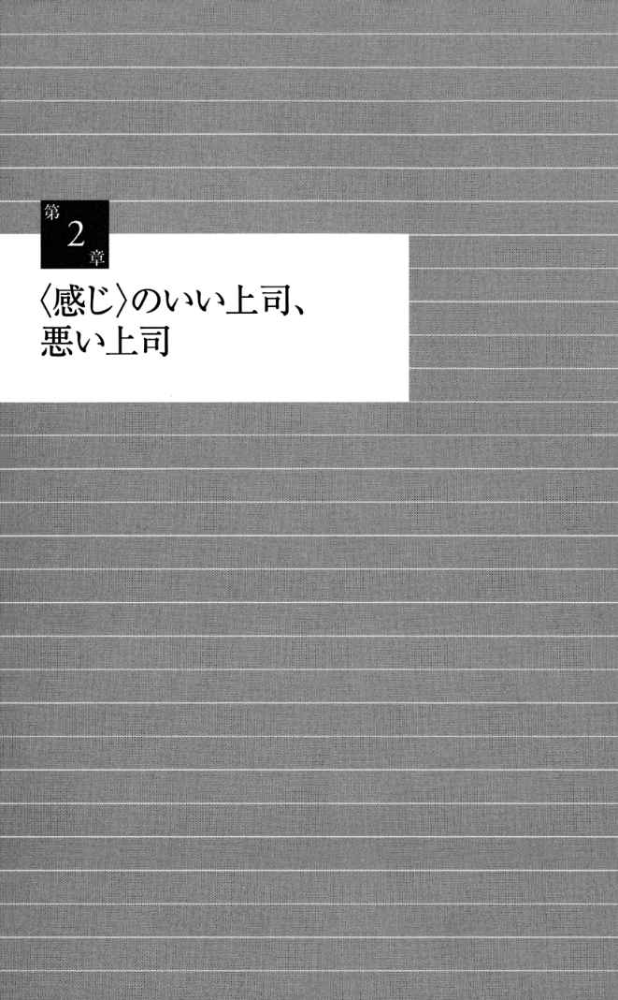
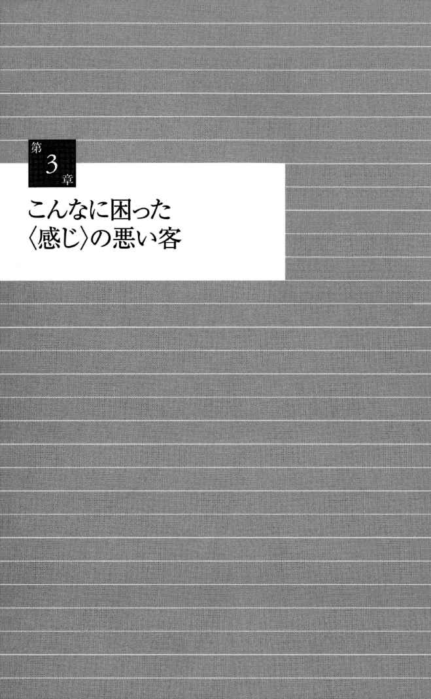
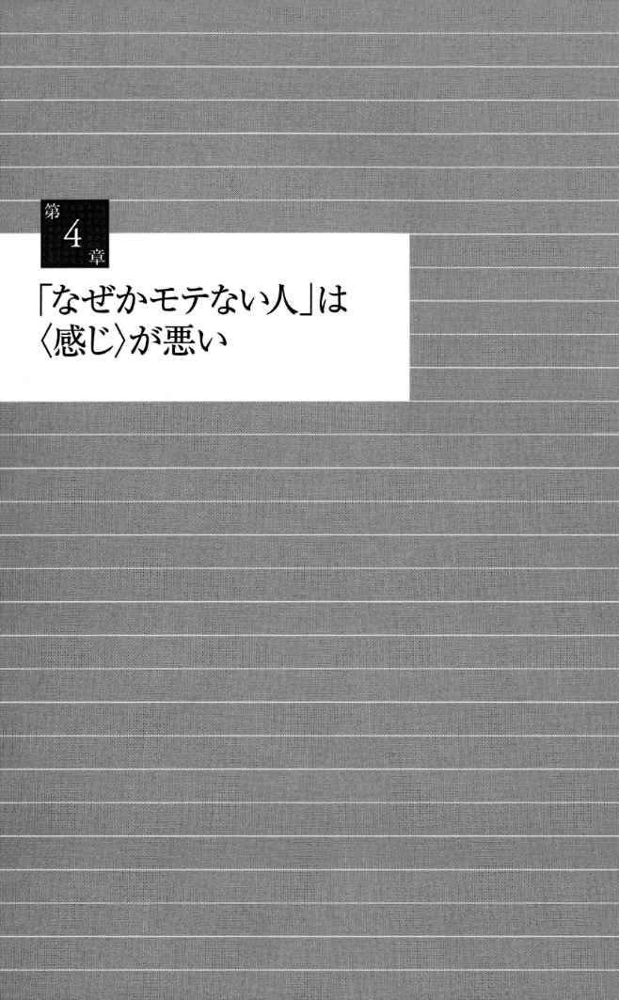
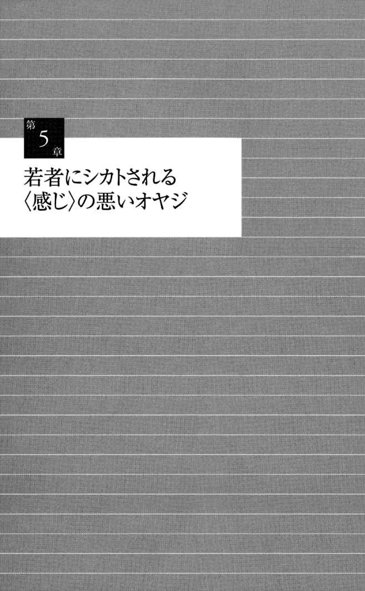
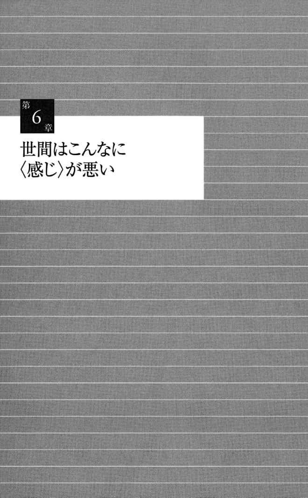

| ＜感じ＞のいい人、悪い人 (PHP新書) | |
| 山﨑 武也 | |
| (2006) | |

〈感じ〉のいい人、悪い人
山﨑武也
マイナスの印象をいう
「仕事うまくいってないんだって」と、挨拶代わりにいう人
久し振りに会った友人に対して、初めから挨拶代わりに、「元気ないけど病気でもしたのか」とか「仕事うまくいってないんだって」とかいう人がいる。自分としては、親しい間柄であるから、どんなことをいっても構わないと思っている。そこで、見たまま、または噂に聞いたとおりを、口に出していうのだ。
ところが、相手としては、いわれたことが気にしていることであったら、気分のよいはずがない。友人とはいっても、会っていなかった空白の期間を埋めるためには、まずはお互いの感情について多少の調整をする必要がある。波長を合わせるのである。そのためには、情報を少しずつ交換していって、現時点で相手がおかれている状況や考えていることを理解するのが、先決問題である。そのような作業をしないうちは、ネガティブなことは一切いうべきでない。
第一印象の重要性は繰り返し強調されている。たとえ親友同士であっても、久し振りに会ったときは、初対面のときに似た心構えが必要だ。相手に対して最高によい印象を与えるべく努力する。したがって、相手に接する姿勢も常に明るくし、最初に発する言葉もポジティブなものにする。
相手の顔色や身なりであれ、風の便りに聞いたことであれ、とにかくマイナスになることには触れないで、プラスのことに焦点を合わせるのである。それも自分の価値観に従ったプラスやマイナスでなく、一般常識を基準に考えなくてはならない。
たとえば、「太る」というのは、健康上はよくないことであり、特に女性の場合は容姿の観点から禁句である。また、「やせる」というのも、病気のサインとなる場合も多いので、口に出してはいわないほうがよい。健康を害したために体重が減ってきている人に対していえば、相手の意気を消沈させる結果になる。
体のどこにも悪いところがなくて元気いっぱいの人も、体重の管理には神経を使っている。このような人の場合、太るとかやせるとかいっても、一定の範囲内の数値を保っているので、それはちょっとした違いという感覚しかない。ところが、健康上に問題がある人の場合には、体重のちょっとした増減も、重大な事態の先行指標ないしは証拠としての意味を持っている。
したがって、相手の健康状態や考え方を知らないうちは、太ったとかやせたとかは口にしないほうが無難である。ちょっとくらい弱々しく見えたときでも、「元気そうだ」というのだ。それは、うそをいったり相手にへつらったりすることではない。
久し振りに会ったときは、旧交を温めることに専念する
挨拶は人と人とが会ったときに取り交わす儀礼的な言葉である。久し振りに会ったときには、その儀礼の要素の比率を高くするのが自然であろう。そこで、まずは差し障りのないことをいうことから始めるべきだ。友人だからといって最初から単刀直入な話し方をするのは、相手の気分を傷つけてしまう危険性があるので、注意を要する。
久し振りの程度が甚だしいときは、まずは旧交を温めることに専念する心掛けが必要だ。すなわち、友情を過去において頂点であった状態に持っていこうと努力する。これまでのつきあいを振り返ってみて、お互いが最も打ち解けた関係にあった時期を思い起こして、そのときの人間関係の復活を図ろうとする用意周到さと熱意を持って、相手にぶつかっていくのである。
そのようにしていけば、懐かしいという感情の高まりが起こり、心と心とのふれあいが活発に行われるようになって、話が弾む。会わなかった期間に対して、相手がどうしていたか、自分が何をしていたかなど、情報交換をすることによって、親密さが大いに増す。それも、最初の話し掛けの言葉がポジティブで好意的なものであれば、すぐに相手の心の扉が開かれるので、大きな効果が期待できる。とにかく、第一声は相手が率直に受け入れて、「ありがとう」と感謝したり、「そうなんだ」と肯定したりする言葉に限るのがコツだ。
もちろん、悪友というくらいの親友同士であれば、最初から相手の欠点をあげつらうようなことをいう場合もある。これはじゃれ合いであり、即決で相手の反応を確かめようとする、軽いジャブでの応酬のようなものだ。お互いに悪感情のかけらも入っていないので、友情にひびが入ることはない。ただ、悪気はないとはいえ、瞬間的には相手にネガティブな印象を与えるので、得策ではないといえるだろう。やはり悪友のままに留まって「善友」にまで昇格していかない所以だ。
独演会をする
得意気に自分の知識をひけらかす人
仲のよい友人同士が数人集まると、一つの話題についても、皆次々と口を挟んでくるのでやかましい状態が続く。遠慮する必要のない仲間であるから、我勝ちに自分のいいたいことをいうので、収拾のつかない状態になることも珍しくない。
特定の人が特別におしゃべりであるという理由で、多少は顰蹙を買う傾向はあるが、それも一つの癖として、ほかの人たちも諦めている。人の面倒見がよくて率先して幹事的な役目を引き受けてくれるなど、ほかの点で美点もあるので、皆も納得している。功罪相半ばしているから、仲間外れにされるまでには至らない。
おしゃべりであるかないかにはあまり関係がないようであるが、皆に共通でない話題について話を詳細に進めていく人がいる。それも、自分が得た特ダネ的な情報であれば、皆も興味を示して耳を傾けていく。いわゆる耳よりな話である。仲間からでないと聞けないようなことであるから、情報としての価値も高い。
だが、そのような話であっても、自分の知識をひけらかすようなニュアンスがあるときは、それを皆も敏感に嗅ぎとって、ちょっとした抵抗感を覚える。どんなに有益な情報や面白い話であっても、自慢する要素が大きく感じられる場合は、皆の関心も急激に、かつ確実に消えていく。
人に話を聞いてもらいたいと思うならば、自慢となる結果にならないようにと、常に自分を抑えながら口を開いていく必要がある。
自慢となった途端に、人は本気で聞いてはくれなくなる、と心得ておいたほうがよい。自慢話に対しては、人は聞くふりをしているが、内心では苦々しく思い、早く話を終えてほしいと願っているはずだ。
いずれにしても、話の内容が何であれ、自分独りで調子に乗って話をすることのないように、常に自戒を怠らないことである。一人残らず全員が身を乗り出してきて聞くような話であったとしても、一時的にはよいが、ずっとは駄目だ。プロの「独演会」でも、決められた時間内と限定されている。勝手に時間を延長してしゃべり続けるのは許されない。
全員が同じ条件で会話に参加できるように心掛ける
仲間の結束を固めて、皆がその輪の中に居続けたいと思う雰囲気を保っていくためには、単なる寄り集まりの集団であっても、メンバーは平等であるという原則が貫かれていなくてはならない。誰にも口を開く機会があり、皆がついていける内容の話をする必要がある。したがって、一部の人しかわからないことについては、極力話題にしないようにする。
仲間の一部しか参加しなかった行事などについては、まず概略の説明をする必要がある。そのうえで、皆の反応を見ながら、徐々に話を展開していく。誰彼なしに唐突に「いつかの旅行は愉快だったね」などと話し掛けるのは危険だ。「私はいなかった」という人もいる。そのような人に対して、さらに「そうだっけ」といったりすれば、その人は二重に感じの悪い思いをする。
一人ひとりの仲間を大切にして、きちんとした人格を持った人として待遇する姿勢が必要である。軽々しく考えて話し掛け、自分が間違った認識をしていたことを棚に上げて、「そうだっけ」などというのは、礼を失した言動である。感じの悪い人というイメージを与える結果になっても仕方がない。
その座の中に一人でも話の内容についてよく知らない人がいたら、背景について簡単な知識を与えようとする努力を惜しんではならない。皆の知識のレベルを同じにしておいてからでないと、話も噛み合わない。全員が同じ条件で会話に参加するようにと、常に心掛けるのである。
ただし、世間で話題になっている小説や映画などについて話すときは、口を慎まなくてはならない場合もある。まだ読んだり見たりしていない人で、これからそうしようと思っている人がいる場合は、あまり詳しく話さないことだ。特に結末を教えたりするのは、人の楽しみを奪ったり興味を失わせたりする結果になる。
小説や映画について面白いと思うポイントは、人によって異なる。描写の仕方の巧みさや人の情感に訴える場面の美しさに重点を置いて、読んだり鑑賞したりする人もいる。また、主人公に対して全面的に感情移入をしながら、自分の感情の流れを楽しむ人もいる。だが、筋の面白さについては、誰もが興味を抱いている。
したがって、結末がわかったのでは、面白さが少なくとも半減してしまう。手品について、種明かしをしてから見るのでは、ちょっと感心する程度になってしまうのと同じだ。手品はびっくりしながら不思議がって見るのが面白いのである。
「絶対に」譲ろうとしない
「首を賭けてもよい」と、本気になって自説をいい張る人
友だち同士で集まって飲んだり食べたりしていると、必ず楽しかったころの思い出話になる。誰がとんでもない間違いを犯したとか、皆で大騒ぎをして人に迷惑を掛けることになったとか、大体において失敗談のほうが後から話すときは面白い。過去のその時点においては、困惑したり冷や汗をかいたりしたのであるが、それだけに皆の記憶に強く刻みつけられている。
したがって、共通の話題となるので、旧交を温めたり親密さを継続したりするために、極めて効果的だ。特に失敗談がいつも話されることになるのは、現場の間近にいて「目撃者」となっていたので、臨場感に溢れる描写ができるからである。また、一緒に悪事を働いた「共犯者」である場合もある。いずれにしても、小さな出来事であれ大きな事件であれ、皆が当事者ないしはそれに類する者という立場にあった。その点を確認することになるので、さらに仲間意識が高揚される結果になる。
話の内容については、皆の記憶や考え方は一致する。ちょっと異なった角度からの分析をする者がいる程度で、それはそれとして話の面白さを増幅するのに役立つので、問題とはならない。だが、何年前のことであったかとか、季節的にはいつであったかとかの話になると、人によっていうことがいろいろと異なってくる。
皆それぞれに自分の記憶をたぐりながら話すので、議論が沸騰してくる。そのうちに、論拠が比較的明確な主張に与する人が多くなったり、何となく多数決になったりして、その場の結論は、いつごろであったということに落ち着く。
ところが、自分の主張を押し通そうとしてムキになる人がいる。自分の記憶に間違いはないと信じ込んでいる。ほかの人が否定しようとすると、口角泡を飛ばして本気になって自説を繰り広げてくる。あげくの果てには、「絶対に間違いない」とか、「首を賭けてもよい」とかいう。「君の首なんかもらっても仕方がない」などと茶化す友人がいると、突っ掛かっていく始末である。
首や命を賭けるというのは、自説を強引に主張して、相手の口を無理やり封じようとする手法である。さまざまな考え方や証拠を示すことによって、相手を説得しようとする努力を放棄している。独断的な考え方をする頑固者のやることだ。皆から、心密かに、できれば敬遠したいとか、気をつけて話をしなくてはいけないとか思われている人である。
皆で昔を懐かしがっているときであるから、いつのことであったかという正確な年月はそれほど重要な要素ではない。楽しいことがあったという「歴史的事実」を皆で確認し合えば、それで十分である。歴史の試験問題に答えているのではないことを、心得ておく必要がある。大したことでもないのに、それをとやかくいって論争をしたのでは、せっかくの思い出話に水をさしてしまう。古きよき時代を、いつまでも記憶の中に留めておこうとする努力にケチをつける結果にもなる。
「絶対に」「天地神明に誓って」などとはいわない
人間の記憶などというものは、極めて曖昧であり正確性を欠いている。昨日の夕食に何を食べたかくらいは覚えているが、一週間前や一カ月前となると、特別な人と一緒であったとか豪華なレストランに行ったときとかでないと、記憶には残っていないのが普通だ。
テレビのドラマなどで、事件を追っている刑事などが、何年か前のことについて聞き込みをしている場面がある。犯人とちょっとした知り合い程度である人が、「そういえば」などといって、事件解決の鍵になるようなことをいっている。そのような昔のことで、しかもたわいのないことなど、普通の人が覚えているはずがない。共犯者や幇助した人など、密接に事件に関係している人以外には考えられないことだ。まさに虚構である。
直前のことに関する記憶でも、正確でないことがある。記憶に留める前の段階で、間違いが起こっている場合だ。すなわち、勘違いや思い違いをしているときである。したがって、自分の記憶に対して一〇〇パーセント自信があると思っていても、「絶対に間違いなし」などとは「絶対に」いわないことだ。
「過つは人の常」であることを常に「記憶」しておいて、自分の記憶に首や命を賭けるような愚挙はするべきでない。また、聞く側としても、「絶対に」とか「天地神明に誓って」などといわれても、その言葉を信用してはならない。そのような強い言葉を使わなくても、過去の実績を見れば、信用してよいかどうかは判断できる。強引に信用させようとしている人は、自分が信用されないことを知っているからである。
人の不幸に追い討ちを掛ける
不幸に遭った友人に、すぐに連絡して慰めようとする人
友人によくないことが起こったとき、すぐに電話をしたりして慰めようとする人がいる。不幸があったときは、悲嘆に暮れていると同時に、親戚や知人への連絡をしたり葬儀の準備をしたりするのに忙しい思いをしている。いくら悲しいと思っていても、ゆっくり悲しみに浸っているひまはない。
そのようなときは、いくら親しい友人だといっても、電話を掛けたりするのは迷惑な行為でしかない。親しい親戚や兄弟姉妹のようにしている親友であれば、すぐに駆け付けていくであろう。そのような仲である人のみが電話をするのも許される、と思っておいたほうがよい。
学生時代に親しくしていた友人の母親が亡くなったことを伝え聞いた女性が、悔やみをいって慰めようと思って電話を掛けた。長い間会っていなかったが、年賀状のやり取りはしていたので、電話番号もわかっていた。一通りの弔慰の言葉をいった後で、長らく無沙汰であったことを詫び、何か自分が手助けすることはないかという意味のことを述べた。それに、ずっと元気であったかどうかなども聞いたのである。
電話を受けた側の女性は、感謝の言葉は述べたものの、冷淡なくらい無愛想に「いま忙しいから」といって電話を切った。半ば怒りの気持ちを抑えきれない様子がうかがわれたくらいであった。相手の言葉には哀悼の意と慰めの気持ちが込められてはいたが、現在の自分の心の状態に対する配慮が感じられなかった。
悔やみの気持ちよりも懐かしさを感じて電話をしている雰囲気のほうが強かった。すなわち、人の不幸を「好機」としてとらえて、旧交を温めようとする気配が感じられた。人の気持ちを心から考えたうえではなく、単に自分勝手にしてきた電話であった点が見え見えになっていたのだ。
いらぬお節介は焼かない
他人の不幸は蜜の味、とまではいかなくても、結局は「対岸の火事」である。まったく見知らぬ人の場合であれば、自分にとっては痛くもかゆくもないというのが、普通の人の偽らざる心情であろう。相手の人のことをどれだけ個人的に大切に思っているかの度合いに応じて、火事も対岸からこちら側の岸へ、さらには近所へと近付いてくる。
隣まで迫ってくると、かなり心を通わせている者同士の場合である。また、自分の家まで延焼してきたときは、まさに一心同体の関係にある人たちである、ということができる。そのような場合であれば、自分も文字通り「火中」にいる状態に置かれているので、一緒に感じたり考えたりしている結果になっているはずだ。
相互に深く心を通わせているという自信がある関係であれば、電話を掛けようと駆け付けようと、自分の心のままに行動しても問題とはならない。また、近い親戚であったり社会通念上密接な関係にあったりするときも、同様である。そうでない場合は、不幸の真っ只中に置かれている人の心情的ならびに物理的な状況を推し量ったうえで、行動を起こさなくてはならない。
そこで、普通の程度の親友であったら、また親友中の親友であったと自負していても、現時点で親友関係が活発に進行中でない限りは、控え目な言動に徹したほうがよいことになる。悲しみに沈みながらも雑多な用事に追われている友人の気持ちを思いながら、その心を乱さないように、差し出がましいことは一切しない。通夜や葬儀に大勢の参加者の一人として参加するだけに留めておく。ほかの人を差し置いて、何かをすることのないようにする。
友人が仕事に失敗したりしたときも同じである。その時点における状況を熟知していたり確実に理解できたりするときで、友人の手助けをかなりの程度にできるという自信があれば、声を掛けてもよい。そうでなかったら、不必要な口出しは無用だ。「大変だったね」などと慰めの言葉を掛けたり、「私に何かできることはないか」などと申し出をしたりしても、結局は、相手の心を乱してしまう。いらぬお節介を焼くと思われるだけだ。
自分の好奇心を満たすために、さらに詳細な情報を得ようとしているのではないか、と疑われても仕方がない。いずれにしても、意気消沈した状態にあるときは、極めて身近な関係にある者以外は、積極的に接していくべきではない。そっとしておいて、見守る姿勢を貫いていく。相手から何か助けてほしいという言葉やサインが出てきたときに、馳せ参じるのである。そのような友人のみが、感じがよくて信頼がおけるので、長くつきあいたいと思う人だ。
昔の愚行を暴露する
新郎の失敗談を披露して顰蹙を買う
結婚披露宴もたけなわになってくると、一座の雰囲気も大きく盛り上がってくる。アルコールが入って気分も高まり、おいしい料理を食べて心身ともに落ち着くので、あちこちで和やかな歓談の場が繰り広げられている。初めて会った同じテーブルの人たちとも、会話が弾んでいる。
もちろん、新郎の友人たちの席では、騒々しさは一段と高まった状態になっている。酔っ払いに近くなった者もいる。皆、友人の結婚を喜び合って、陽気さも頂点に達した感があるくらいだ。
そこに、いよいよ友人の代表が祝辞を述べる順番が回ってくる。喧騒の中にあっても、出席者の多くは、面白い話が聞けるのではないか、と期待しながら耳を澄まして聞こうとしている。
主賓の祝辞などは、ありきたりのほめ言葉や教訓めいた話が多く、聞く人を楽しませるという要素が少ない。それに反して、友人たちの話には、エピソードが入ってくるので面白い。その宴の主人公にまつわる話で、その人らしいものもあれば、その人の隠された一面を表すようなものもある。さらには、その人の失敗談を面白おかしく暴露する場合もある。
ただ、新郎を単なる笑い種にするだけの話の仕方をする人がいるが、それでは最高の気分で壇上にいる新郎に苦笑いをさせることになる。その親や近親者の機嫌を損ねたり、ほかの出席者たちの顰蹙を買ったりする結果にもなる。
やはり、祝いの席では、マイナスになることはできるだけ避けるのが、礼に適っている。確かに、披露宴は宴会ではあるが、儀式の要素も入っている集まりである点を忘れてはならない。
ネガティブなことは避け、できるだけポジティブな話題に焦点を当てて、それを拡大していく。祝うべき人について、過去のことであるとはいえ、そのグレードを下げるようなことをいうのは慎んだほうがよい。また、一座を笑わせようとする意図だけに基づいて話をすることもないように、と気をつけなくてはならない。笑わせるというよりも、微笑ませて胸の中が温かくなるような話がよい。
人の過ちや失敗はむやみに話さない
若いときは誰にでも失敗や愚行はある。現在は謹厳実直そのもののような人で、すべてに対して厳しい姿勢を示している人であっても、若いころには無謀なことや馬鹿げたことを、いろいろとしてきている。世事に疎かったので当たり前である。だが、そのような試行錯誤を重ねていく中で、成長してきたのであるから、ごく自然な過程である。誰もがすることであるから、恥ずかしがる必要はない。
もちろん、自分にとってマイナスとなることは、何となく人に話したくないと思うのも人情の常だ。自分をよりよく見せたいと考えているからである。それだけに、自分の失敗について進んで話そうとする人は、自分の弱みを隠そうとしない率直な性格の人であるとして、人から好かれる。だが、そのような人でも、相手がどんな人であるかをよく見極めたうえで、打ち明け話をするべきかどうかを決めている。
人の過ちや失敗については、むやみやたらに話さないというのが大原則だ。たとえ、親しい友人に関することでも、明確にであれ何となくであれ、本人から予め了承を得たうえで話したほうが無難である。さらに、時と場所と場合をよく勘案してからにする。不特定多数の人を相手にして話すときは、特に慎重にすることが要求される。
実名を挙げて話すのは論外だが、名前をいわなくても知名度があったりすると、見当がつくので注意を要する。話の背景や人物像などを多少変えたり、エピソードを脚色することによって、人物の特定ができないようにする配慮も必要になってくる。
プライバシーの侵害については、昨今かなり厳しく責任を問われる傾向があるので、友人間であっても、やはり十分に気を配って対処していかなくてはならない。結婚披露宴などの出席者は不特定多数の人々ではない。だが、極めて親密にしている人がいる一方では、表向きのつきあいであるだけの人も来ている。利害関係がかなり錯綜している人たちの集まりでもある。
したがって、打ち明け話を単純に喜んで聞く人もいれば、それに対して嫌悪感を抱く人もいる。下らない話をして、と不興な気持ちを隠さない人もいる。やはり、当たり障りのない話題を選んで、万人向きの心温まる話にしたほうがよいだろう。独り善がりは厳に慎み、祝いの儀式のムードに花を添える姿勢を貫くのである。
いつも遅れてくる
他人の時間を奪うのは「部分的殺人」
友人同士で集まって楽しいひとときを過ごそうとする。旗振り役をする人が、皆の都合のよい日時や場所について聞いてから、手筈を整える。ほかの人たちに比べると、かなり頻繁に会っている仲間であるが、久し振りである点に関しては変わらない。そこで、期待に胸をふくらませて、当日を待ち望むことになる。
楽しいことをするときは、その計画をする段階においても、あれこれと考えながら楽しんでいる。さらに、すべての設定が終わってただひたすら待つだけの期間も、さまざまに想像を巡らせて楽しむ。当日になって現実に皆で旧交を温めるときは、もちろん心身を全開にして直接に楽しみを味わう。いうなれば、一回の集まりで三回も楽しむ結果になる。
中には、待ち望んでいるときが最も楽しいという人もいる。楽しいことを夢見るときは、内容を最大限にふくらませて、よいことばかりを想像する。したがって、理想的な場面が展開されていくことになる。実際に皆で集まったときは、夢見たとおりになることはない。夢のいくつかは、あっけなく破れてしまい、現実の悲哀を感じる羽目になるのが普通だ。夢のほうが楽しい所以である。
いずれにしても、当日が楽しい場になることは、ある程度確実だ。ただ、決められた時間に集まってこない人がいると、ちょっとした焦燥感に駆られる。日時や場所を間違ったのではないかとか、何か事故でも起こったのではないかとか、心配する。
しかし、それがいつも遅れてくる人である場合は、心配はしないで、軽い嫌悪感を覚える。「またか」という思いが、せっかく楽しくしようとして盛り上がりつつある気分を、軽くではあるが、不愉快にしてしまう。約束に遅れるのは癖であり習慣である。時間を守らないと皆に迷惑が掛かることをきちんと認識し、人に迷惑を掛けるのは悪いことである、という道徳観さえあれば、遅れるという悪癖が身につくことはない。
遅れてきても悠然と構えて謝りもしない人がいるが、これでは社会性もまったく欠いているので、できれば仲間から外していきたいと思う。また、謝ったにしても、言葉上だけであって、申し訳ないという気持ちが見えない人もいる。いずれにしても、時間は自分だけのものであって、自分勝手に使ってよい、と考えている様子が見え見えだ。
確かに、自分が生きている間の時間は自分自身のものである。しかし、人が集まっている社会の中で生きていく点を考えれば、ほかの人たちと時間を「共有」しているという感覚が必要だ。そう考えれば、時間を自分勝手に使って私有化することはない。
人を待たせるのは、自分が原因で人にその時間を無駄に捨てさせることである。貴重な時間を強引に盗んだ結果になる。したがって、「時間強盗」をした、といってよい。また、この世における一刻一刻が生命の流れである点を思えば、人の時間を奪うのは、その人の生命の一部を奪うことにもなる。すると、「部分的殺人」ともいえるのではないだろうか。そのように考えていけば、約束の時間に遅れるのは重大な犯罪を犯すにも等しい行為であることがわかる。
時間厳守は約束相手に対する敬意の表れ
仕事の場であれ遊びの場であれ、約束の時間を厳守するのは、相手の人格を認め、その尊厳に対して敬意を表すことである。相手をこのうえなく大切に思っていたら、約束の時間を死守するはずだ。国家の元首など地位のある人や、「親分」として生殺与奪の権を握っているような人と会うときに、時間に遅れることはない。
一瞬のうちに未来から過去へと飛び去っていく現在という時間に対して、その重要性を強く意識しておく必要がある。待たされる人は、その時間が流れている間、ただひたすらに待つという非建設的な行為をさせられるのである。待たせる人に対してマイナスの感情を抱いて当然といわざるを得ない。
最近は、携帯電話の普及に伴って、その都度連絡をすることも可能だ。遅れそうになったり遅れていたりする人が、電話片手に街中を歩きながら、「もうすぐ着くから」などといっているのに、よく出くわす。連絡をすればよいというものではない。簡便な道具を持たせると、これ幸いと都合よく使って人の道に反することも平気でする傾向が見られるので、注意を要する。
街角で数人の友人と待ち合わせをし、自分以外には誰も時間どおりに現れなかったので不審に思っていた人がいる。皆遅れてきたにもかかわらず、時間を守った人を携帯電話を持っていないという理由で、逆に非難したという。遅れたときの連絡がつかないので不満であったらしい。人の時間を盗んでおいて食ってかかるとは、まさに「盗人猛々し」というほかない。
人を補欠扱いする
人数合わせの臨時要員として利用する人
普段はあまりつきあっていない友人から、突然に電話が掛かってきて、友人仲間と一緒のゴルフや小旅行に誘われることがある。誰と誰が参加するのかと聞けば、皆長らく会っていない友人ばかりだ。その集まりの日程が差し迫っているので、自分のスケジュールも急遽組み替えなくてはならない。
懐かしい思いで胸がいっぱいになって、皆と会いたいと思うので、何とか都合をつけて参加することにする。もっと前もって決めて連絡してくれればよいのに、などとも思うが、そのような気持ちも楽しい期待によってすぐに打ち消されてしまう。
当日になって皆の顔を見ると、久し振りの出会いを喜んで話し掛ける。それぞれの近況について情報交換をして、会わなかった期間の埋め合わせを図ろうとするのである。だが、その試みをする中で、自分の話だけが何となくちぐはぐになっている感じを受ける。
いろいろと話しているうちに、ほかの友人たち同士は頻繁に会っていることがわかる。同種の集まりも、これが初めてではないようで、すでに何回か行われていたことも、話の節々から明白になってくる。
何かの拍子に、こんどの集まりに急に来られなくなった人がいることが判明する。すでに予約などもしていて、キャンセルすると不都合が生じるので、自分が駆り出されたのである。自分だけが、すでに出来上がっているグループの新入りの立場に置かれている。そこで、ちょっとした違和感を抱いたのだ。
最初から仲よしグループに加えてもらえなかったことに対しては、多少の不満は感じるものの、後れ馳せながら、仲間に入れてもらったことを喜ぶ。これを機会に将来の同じような集まりにも誘ってくれることを期待して、皆とのコミュニケーションに鋭意積極的に努める。
ところが、それっきりで、声が掛かってくることがなかったとなると、心底は穏やかではない。やはり自分は仲間には入れてもらえないのだと考えて僻んだとしても、人間の自然な感情として、非難されることはないであろう。あのときだけ自分は臨時要員として、欠員を埋めるために利用されたのである。仕方がないと思って、諦めるほかない。
一度でも誘ったらずっとメンバーとして扱うべき
こちらからわざわざ連絡して、同じように皆が集まる機会があったら、自分にも声を掛けてくれるように、というのも気が進まない。そのようにいって、もし誘われたときには、万障を繰り合わせて参加する義務が生じるようにも思うからである。一度でも、多少の引け目を感じながらではあれ、旧友たちと楽しい時間が過ごせたことを喜んでいればよい、と考えて自分を納得させる。
すると、かなり時が経ってから、以前と同じような誘いの連絡を受ける。こんどは、人数が一人足りないので、とはっきり断ってくる。その間、皆は半ば定期的に集まっている様子が、言葉の端々からうかがわれる。結局、自分はレギュラーメンバーではない。彼らが都合のよいときだけ連絡してきて、人数合わせの役割をさせられているのである。
特定の仲間グループには、その発生から発展・維持へと、独自の歴史がある。その中で、それなりの資格を得た者がレギュラーになっている。それは任意団体の最たるものであるから、外部の者が資格などについてとやかくいう筋合いはない。集まりを企画し実行する、その時その時に、外部の人を参加させたり動員したりするのも、グループの人たちの自由である。
だが、同じクラスメートという間柄であって、自分がいつも補欠扱いされるのは、気分のよいものではない。不当に差別待遇をされていると感じるからである。それに、そのことをはっきりといわない点にも、ちょっとした秘密主義の陰湿さがあるので、余計に気になる。
もちろん、まったく誘われないのに比べたら、補欠としてでもチームに加えてもらえるのはよいほうだ、という考え方もある。しかし、どっちつかずの身分というのは、その不安定さが常に気になるので、嫌なものだ。希望があり可能性があるので、期待する気持ちを捨て切れない。
友人同士のグループの場合は、一度でも声を掛けたら、以後ずっとメンバーとして扱うべきである。補欠として採用して「試合」に出場させたら、例外なく正選手に昇格させるのだ。「創設」メンバーが、自分勝手に人を補欠扱いすることを続けていたら、そのグループは排他的な色彩が濃いとして、人も相手にしなくなる。したがって、グループの発展も望めなくなる運命だ。
特徴的なスタイルの猿真似
人の長年のこだわりを簡単に真似する人
私はスーツのジャケットに、さまざまな工夫を凝らしている。叔父が紳士服のデザイン制作に携わっていたことと、私自身もファッション関係の仕事をしていたこととで、当然のことながら、衣服については人一倍関心が深かった。それで、それぞれに特徴的なディテールを考えたのであるが、すべて私なりの理由がある。
背が低いので、いずれにしてもオーダーメイドでなくてはならなかった。そこで、細かい点についても特別な注文をつける余地があった。大酒飲みで大食漢であったので、ある時期からかなり太り、腹も出ていた。そこで、腹が出たところを少しでもカバーするべく、そこをボタンの位置と定めた。その一点に焦点を合わせるために、ほかのボタンはないほうがよいと考えたので、一つボタンになったのである。
左側に胸ポケットがあるのが普通だが、機能的には必要ない。ポケットによって胸のところのスムーズな流れをさえぎるので、美観上もないほうがよい。飾りのハンカチを入れたのでは、本来は顔に向けられるべき人の視線を横取りする可能性もある。そこで、私のジャケットには胸ポケットがない。
さらに、左のラペルの穴もない。私は組織に属していたときも、自分の所属を表すバッジをつけるのは嫌いだった。会社で働いているときは身分を証明するものとして必要であるかもしれないが、一歩会社を出れば組織人ではなく個人として振る舞うのであるから、必要ないと思った。もちろん、独立して仕事を始めてからは、自分の顔以外に自分を証明するものは不要だ。
祝いの席やおしゃれをしたときに、ボタンホールに花を差す場合も予想されたが、若いときは単なるキザな振る舞いと見られるにすぎないと思った。年を取ってきた最近では、そのように気取ってみるのも、たまにはよいかもしれないと考えるようになったが、長年にわたって続けてきたスタイルを変えるのは、主義を曲げるようで、なかなかできそうにもない。
もう一つの特徴は袖のボタンのところにある。いわゆる本開き、すなわち実際にボタンホールがあって、ボタンを掛けたり外したりできるようにしてある。私は、そのボタンの一つをいつも外したままにしている。
普通のスーツは二つボタンか三つボタンで、そのうちの一つのボタンは常に外している。私の場合は一つボタンであるから、それを外せばだらしなくなる。その点を調整する意味で、袖のボタンを一つ外すことによって、スーツ全体の中でボタンを外した部分があるようにしているのである。下らないことではあろうが、私なりの小さなこだわりであり理屈である。
以上のように、私のスーツの特徴については、そのようになった経緯があり、ある程度は合理的な理由がある。ただ普通のスーツとは異なったディテールにしたというだけではない。もちろん、ほかの人のスーツとは異なっていることについて、心密かに面白がったり得意になったりしている気持ちはあるが。
そのような私のスーツの特徴に気付いた友人が、ただ変わっているというだけで、真似をすることがある。友人といっても、そのようなことをするのは、年代の異なった、若い人たちだ。また、真似をするといっても、そのディテールのすべてではなく、一つか二つについてである。
断ったうえで真似る
ある日突如として目の前に、私の真似をしたスーツを着た人が現れてくると、ちょっとびっくりする。「見習った」などといわれても、内心は面白くない。自分のアイデアを盗まれたような気がするからだ。
もちろん、特許を取ったり意匠登録をしたりしているわけではない。そのような法的保護を受けるほどの価値があるものでもないし、単なる思いつきの変わり型であるにすぎない。しかし、私なりの理由の下に続けてきた、私にとっては歴史のあるスタイルである。ただ面白いからといって簡単に真似をされたのでは、気分のよいはずがない。苦笑いをしたり憮然たる面持ちをしたりしても、仕方がないであろう。
意匠の使用料を支払ってほしいなどとはいわないが、そのアイデアを使うことに対して、少なくとも前もって了解を得るなり断るなりしておく必要があるのではないか。そのときも、ただ変わっているからというだけではなく、なぜ自分の気に入ったのかという点を述べたりすれば、真似ることを積極的にすすめることもできる。自分の考えに同調し、さらには発展させていく仲間ができたという意識が芽生えてくるからである。

博識を装う
何でもすべてを知っているかのごとくに振る舞う人
仕事に関連した新しい情報を入手したときなど、早速上司に伝えようとする。仕事に役立つのは間違いないと思うので、上司が喜んでくれることを期待している。ところが、少し話し始めただけで、すぐに「そうだよ」とか「そうらしいな」とかいわれると、拍子抜けしてしまう。
張り切っていたのに、結局は独り相撲を取っていたことになり、ちょっとした失望感を味わう。上司としてはすでに知っていたことであるから、無駄な情報提供をしようとした結果になる。二番煎じ、もしかすると「三番煎じ」の話であったのだろうから、自分が情報伝達をしようとした労をねぎらおうとしなくても、仕方がないと思う。
さすがに上司は情報の広いネットワークを持っているのだろうとか、同僚の誰かが逸早く伝えたのであろうとか考えて、自分を納得させる。今後は、もっと耳よりな情報を入手して、上司に感謝されるようになろうと、心密かに思う。
しかしながら、どのような情報を伝えても、いつもすでに知っているような反応を示すことがわかると、落胆するというよりも反感を覚えるようになる。何でも知っているふりをしているのではないか、という疑いさえ抱くようになる。
実際に、上司は何でも知っていなくてはならない、と考えている上司も少なくない。部下が知っていることを知らなかったら、沽券にかかわると思っている節がある。すべての点において部下よりも一段、上に位置していなくては気がすまない。それが上司の条件であると考えている。
だが、現在は情報化の時代である。情報が飛び交い氾濫している。自分たちの仕事に対して直接かつ密接に関連している情報だけでも、その大部分を入手し管理するなどというのは不可能だ。したがって、上司であれ誰であれ、すべてを知っているかのごとくに振る舞う人がいたら、それは見栄を張っているにすぎない。知ったかぶりをする、不誠実な人である証拠だ。
たとえ常識とされていることでも、自分だけが知らないことはある。小さいときにうっかり間違って思い込み、そのままずっと信じていることは、誰にでもいくつかある。そのために、そこだけ常識が欠落したかたちになっている。
感じのいい上司には、有益な情報が集まる
自分が専門の分野で知らないことだらけであったら、人からとやかくいわれるかもしれない。だが、知らないことがいくつかあったとしても、それで面目を失うことにはならない。まったく知らなかったら当然であるが、詳しくは知らないときも、自分の「無知」を表明して教えを乞う姿勢をとる。
知らないことがあるときに素直に「知らない」といえば、黙っていることについてはすべて知っているのであろう、と人々は推測する。それだけ正直な人であり信頼に足る人であることが証明される結果になる。すなわち、知らないことを知らないといえば、ほかでいっていることの信憑性が増すのである。
当然のごとくに何でも知っているふりをするのは、持っている知識のすべてがあやふやなものであることを示す結果にもなる。全知全能の神を気取っても、それを信用する人は一人もいない。そのように見え透いた虚像を演出するのは、人から疎まれ信用されなくなる度合いが増すだけだ。
たとえ、自分がすでに知っていることであっても、密接に連携して仕事をしている部下が、情報を伝達してくれようとするときは、最後まで耳を傾けてみる。知っている話だからと思って、そのようにいって話の腰を折ってはいけない。同じことに関する情報であっても、異なった角度から考察した意見が含まれているかもしれない。
また、さらに微に入り細に入ったデータが入っている話かもしれない。追加の情報がたくさんあって、その中により役に立つものがあるかもしれない。それに、部下の考えも聞くことができる。それは、話題にしている特定の仕事のためになるだけではなく、何よりも部下とのコミュニケーションという大きな成果をもたらす。
誰でも知っているような世間話についても、同じように耳を傾ける姿勢が肝要だ。当然知っている、というふりなどはしないで、「ちょっとは聞いた話だが」とか、「似たような話があったが」とかいって、相手が積極的に詳しく話すように仕向ける。自分が博識であることをにおわす結果になる姿勢は、厳に慎むべきである。人の情報提供に対しては、自分の口をふさいで、耳を全開にする。そのような感じのいい上司には、有益な情報が次々と集まってくるはずだ。
部下にリスクを取らせる
「適切に処置するように指示しました」と責任回避する上司
政治の世界でトップに位置する人が、難しい局面が到来したときや難題が山積してきたときなどに、どのように判断し、どのように対処するかを聞かれている。すると、平然たる態度で、「適切に処置するように指示しました」とか「有効な対策を講ずるようにといってあります」などといっている。
正確にいうと、質問に対する適切な答えにはなっていない。自分自身の判断内容や対処方法について聞かれているのに、それについては、下の人たちに「丸投げ」したといっているのである。そのように、はぐらかしていると同時に無責任な姿勢を示した返答に対して、質問するメディアの人たちがそのまま引き下がっているのも、道理から外れている。
メディアも国民の側に立って、きちんと筋道を立てて論及していって、人々が知りたいと思っているポイントを聞き出すべきである。でないと、そのようなメディアの報道ぶりを見ている人たちの、政治に対する欲求不満は高まる。その不満が限界に達したとき、人々は無関心という段階へと逃げていってしまう。
政治や経済の主導権を握っている大きな組織や世界に対するとき、メディアは単なる報道をする「媒体」ではなく、国民の声を集約した「主体」としての矜持を持って振る舞わなくてはならない。その役割を忘れると、第三者的な「媒体」にもなり得ず、「御用組織」に成り下がってしまう。情報を収集するときには、ある程度の権謀術数も必要ではあるが、隷属する姿勢は厳に慎むべきだ。毅然たる態度を取れば、国民大多数の支持が得られることは間違いない。
メディアは、体制側に与することによって、日本が太平洋戦争へと突入するのを防げなかったといって、終戦後は盛んに反省の弁を述べ立てていた。だが、「喉元過ぎれば熱さを忘れる」がごとくに、道理の主張をする重要性を忘れている。それでは、またもや間違った生き方をする国にしてしまう危険性が高くなってくる。
「丸投げ」ではなく、同時進行で自分も考える
政治の頂点にいる人の話に戻る。日々生じる問題については、「よきに取り計らえ」などといって人に任せているが、政局を揺るがさんばかりの重要な問題については、誰にも論議させたり研究させたりすることなく、果敢に独断専行をしている。法的にもギリギリの線で自分勝手な解釈をして、自分の個人的なわがままを通している。思うままに権力を振り回しているのである。まさに「無理が通れば道理引っ込む」の世界が現出する結果となっている。
このような政治家に似た振る舞いをする上司も少なくない。難しい問題については、率先して考えて決断を下そうとしないばかりか、皆と一緒に論議しようとさえもしない。部下に丸投げをして、自分は上に座を占めて平気な顔をしている。
重大問題や難局に際しては、機敏に動く必要がある。まさに上司という地位を利用して指導力を発揮し、具体的な方策を考え出すべきである。部下に対して、よい方策を考えろなどと抽象的な指示をするのは、上司としての役割を忘れているので、無責任な振る舞いというほかない。
せめて、具体的に何らかのヒントを与えたり、わかりやすい方向性を示したりして、部下をリードする姿勢を示す必要がある。先頭に立って自らが進んでいき、それに部下が続いてくるようにする。後ろで椅子に腰掛けていて、「前進、前進」と掛け声ばかりで部下の尻を叩いたのでは、皆の士気も上がらないし、よい知恵も湧いてこない。
このような上司に限って、部下がイニシアティブを取って編み出した考え方や方策がうまくいかなかったときは、その責任までも部下に押しつけようとする。一方、もしよい結果になったときは、部下の案を採用した自分の判断力が優れていたとして、自分の功績にしようとする。
すべて、自分に都合のよいように考えていく人であるから、「風上」に置くべき人ではない。自分で自分を風下に置く結果になっている点にも気付いていない。
優れた上司は、部下に考えさせても、同時進行で自分も考えている。たとえ、部下にすべてを任せているように見えても、結果についての責任は「全面的に」自分が取る。最後にはリスクを上司が取ってくれるという信頼感があれば、部下としては、その仕事についてベストを尽くすことだけを考えていればよい。個人的な利害関係について思い煩ったり、駆け引き的なことを考えたりしなくてもすむ。自然によい成果が出てくるはずだ。
雑用を人にさせる
自分がひまでもわざわざ部下に頼む上司
同じ仕事をするのであれば、できるだけ知的な要素の多いことをしたいと思う。誰にでもできる常識的なことや、ちょっと教われば新米にでもできる簡単なことは、仕事の中でも底辺に属するものとして嫌がられる傾向がある。書類を人に届けたりコピーを取ったりするような仕事は、ビジネスの場で大きく脚光を浴びるようなことはない。そこで、皆が軽視するのも、心情的には理解できなくもない。
そこで、人の上司となれば、そのような雑用に属することは、できるだけ部下にやらせようと考える。内容的にも高度で重要度の高い仕事に専念するのが上司の務めであるから、それは至極当然な考え方である。自分の給料が高い分だけ生産性の高い仕事をしなくてはならない。さもないと、コストパフォーマンスが悪くなり、企業としてはマイナスの結果となる。
だが、上司であるから雑用は一切しないで、すべて部下にさせるというのは、逆に生産性を阻害する場合もあるので、注意をしなくてはならない。時と場合によっては、自らがしたほうがよいときもある。たとえば、部下が忙しく立ち働いていたり精緻な作業に打ち込んでいたりするときである。また、自分が比較的ひまなときも、わざわざ部下にやらせる必要はない。
作業をするときは、部下にも部下なりのペースがある。それを乱したのでは、部下のやる気を削いだり作業の効率を悪くしたりする。上司たる者は、組織の中では共同作業であることと、部下の仕事がしやすいようにする任務が自分にあることを、片時も忘れてはならない。
したがって、雑用は部下がやるべきものだと決め込んでいる上司は、皆から嫌がられ敬遠される。特に、ちょっとの時間を割くだけで自分にできる作業であったら、人に頼まないで自分でしてみる。すると周囲の部下たちが見ても、機動性に富み柔軟に動いている上司として、頼もしい人物像と映るはずである。
昼休みの時間や何かの拍子に独りで事務所に残って仕事をしているときなどに、コピーを取らなくてはならなくなる場合もある。そんなときに、コピー機の使用方法も知らなくて途方に暮れる上司もいるのではないだろうか。使用方法を見ても、すぐには理解できず、イライラした思いをするのではないか。
いざとなれば、独りで一つの仕事を完成させることができなくては、一人前に仕事のできる人とはいえない。細かい計算から計算書類の作成方法まで、パソコンを使った文書の作成から書類の配送依頼まで、さまざまな付随的作業も、自分独りでできる素地は必要である。すべての作業の実際とその流れをきちんと把握していなかったら、自分のチームを効率よく動かして、目標としている成果を上げることはできない。
雑用も建設的な「休息」となる
自分自身で雑用をするのは、時間的余裕があればもちろんであるが、逆に忙しいときでも大きな効用をもたらす場合がある。神経を使い頭をフル回転させて作業をしているときは、長時間にわたると知らず知らずのうちに効率が悪くなってくる。一途に考えていると、ほかのことが見えなくなり、バランスに欠ける判断をする危険性もある。
そのようなときに、単純な作業である雑用をすれば、気分転換にもなる。チェンジ・オブ・ペースである。それまで集中していた作業についても、客観的な目で眺める機会にもなる。まったく異なった種類の作業をするのは、それまでしていた仕事に対しては「休憩」を取ることになるので、気持ちがリフレッシュされるのである。
何もしないで休息を取ろうとしても、それまで根を詰めてしていた仕事のことから頭を離すのは、極めて難しい。ついつい考えてしまうので、本来必要とした休息にはならない。ほかの作業をしたほうが、実際には頭を休ませる結果になる。建設的な「休息」になるのである。
もちろん、いくら忙しいからといっても、個人的な用事を部下にさせるのは、完全なルール違反である。組織の人材を私物化するとして非難されても、言い訳をする術はない。だが、緊急な事態に直面したときは例外だ。同じ組織の中にいる仲間同士として助け合うという考え方に立てば、頼む側にも頼まれる側にも異存はないはずだ。
一般的に考えて部下の立場になれば、どんな雑用であっても、ベストを尽くしてするべきである。周辺的な作業であっても、それが遂行されなければ仕事は完成しない。必要欠くべからざる仕事の一部分なのである。雑用においても、熱意を持ってエキスパートになろうと努力してみる。一事が万事である。ほかのことも熱意を持ってできる証拠となり、皆の信頼を得る結果になる。
手を貸そうとしない
他人の仕事などお構いなしにブラブラする
組織の中では、メンバーの一人ひとりに、仕事の役割が決められている。生産性を上げるために、皆が仕事を手分けして行い、作業が重複することのないようにしている。一つの作業を誰がしてもよいというシステムであったら、複数の人がすることによって、そこに混乱が起こったり、不必要な労力が浪費される結果になったりする。または、誰かがするであろうと皆が考える可能性もあり、そうなると、結局その作業は行われないことになり、仕事の流れに支障を来す。
したがって、仕事を効率的に秩序立ててするためには、分業というシステムは極めて有効である。だが、システムは原則であって、常に杓子定規に運用したのでは、所期の目的を達成するためにマイナスとなったり、その中で働く人たちの人間感情を害する結果になったりもする。
一九六〇年代の初め、私はニューヨーク勤務となった。アメリカは大先進国で、日本は懸命にアメリカを手本にして努力していた時代である。ニューヨークはビジネスの本場の中心であったから、見るもの聞くものすべてに対して、目を見張る思いだった。
言葉が十分にわからないうえに、考え方にまったく異なったところがあり、途方に暮れたり訳もなく憤慨したりすることも少なくなかった。ただ、ビジネスの効率化という点から考えると、どれもこれも一応は納得できるものではあった。
私は財務や会計の担当で、二人の女性がアシスタントとして働いていた。そのうちの一人が小口現金出納の仕事をしていた。彼女が休んだ日に、彼女の代わりに私が現金の出し入れをしたのは、別に問題にならなかった。ところが、そのついでに、出納帳への記帳までもしたのが問題となった。
翌朝、出動してきてそれを見た彼女は、私に食って掛かってきた。彼女の仕事をしてやったので感謝されるかと思っていた私は、びっくり仰天である。「私の仕事を取り上げようとするのか」というのが、彼女のいい分だった。私が勝手に彼女の仕事の領域を侵したというのだ。
それまで何となく、仕事は義務であるとのみ考えていた私にとっては、仕事は同時に権利でもあると考えている彼女の主張に、目からうろこが落ちる思いだった。人の仕事を手助けする場合でも、勝手にしてはいけない。必ず相手の了承を得てからしなくてはならない、ということを教わった。
しかし、そのうちに、彼女であれほかの秘書の女性たちであれ、自分の仕事が終わったら、ほかの人の仕事で自分が手伝えるようなことがあっても手伝わず、ブラブラしているのに気がついた。手を貸そうともしないし、そのような申し出もしない。これは行き過ぎである。極端な個人主義であり、単なるセクショナリズムである。
部下には親心を持って指導する
日本における社会人としての経験は二年ちょっとしかなかったが、自分の手が空いたら人の仕事を助けるという考え方を学んでいた者にとっては、納得のできない点であった。皆で協力し皆で向上していこうとする日本の団体主義があったればこそ、戦後の日本における復興は可能であった。アメリカの個人主義の隙間を狙って、日本が団体主義の下にアメリカを追い掛けていって、経済的繁栄を実現したのである。
ところが、ビジネスが盛んになるにつれて、日本もアメリカ式に追随するようになった。今や、利益を追求することに重点を置き、個人としても成果を上げた者は報われるが、そうでないと「能無し」組として扱われる風潮が見られる。その結果、個人プレーも多くなり、それが賞賛されるようになった。
そこで、同僚はもちろんだが、上司や部下までをも競争相手と見なして、お互いに競う傾向も出てきている。自分の職分だけを全うすることに専念し、人のことまで考える余裕はない。その点に関しては、上司の場合も同様だ。部下が四苦八苦して努力していて、自分には時間の余裕がある場合でも、手助けをしようともしない。
たとえば書類を作成しているときであれば、途中で読み直すとか計算部分についてチェックするとか、少しでも作業量を緩和する手立てがあるはずだ。それは、物理的には大きな手助けとはならなくても、上司が協力してくれるという、大きな心理的効果がある。そのような上司に対しては好感を抱くので、仕事に対してプラスに作用する人間関係が形成されていく。
そもそも上司の役目は、部下を指導し監督していくと同時に、仕事がスムーズにはかどるようにと、さまざまな点で部下の面倒を見ていく点にもある。子に対する親と同じような心構えも必要であろう。
手放しではほめない
「ほめてから叱る」手法のワンパターン
部下のしたことによくない点があったり、間違っている部分があったりしたとき、頭ごなしに叱りつけたり非難したりするのは得策でない、といわれている。まずは、どこかによかった点や正しかった部分があるので、それを指摘して、それなりに評価したり、場合によってはほめておく。その後で、マイナス面について話して、注意を促しておくのがよい、というのである。
確かに、咎められたり間違いを指摘されたりする側としては、最初から嫌なことをいわれたら、聞きたくないので話をよく聞こうとはしない。防御態勢になり、ちょっとした反感も覚えるので、心を閉ざしてしまう。
しかしながら、まず自分がよかった点についていわれると、耳に心地よいので、相手のいうことを積極的に聞こうとする姿勢になる。気持ちも落ち着いているので、その後で自分にとっては耳の痛いことをいわれても、心を広く平らかにして受け入れることができる。素直に批判や叱責に耳を傾けるので、反省すべき点は反省し、将来に二度と同じ間違いを犯さないようにと心掛けるようになる。
人間関係をスムーズに進行させていくためには、極めて効果的なテクニックではある。だが、それがテクニックである点に注目しないと、利用方法を誤る場合があるので、注意を要する。時と場所と場合をよく考えたうえで、適切に使い分けをする必要がある。馬鹿の一つ覚えのように、その手法のみを使っていたのでは、逆に疎まれることにもなる。
「ほめられても喜んではいけない。その後で必ずけなされることになるから」などと皆にいわれるようになる。ほめられても気を許したり心を開いたりするどころか、逆に警戒して身構えるのである。完全に手の内を見透かされてしまっている。そうなると、ずる賢く陰険なテクニックを使っているとか、慇懃無礼な人であるとして、皆に嫌がられるようになる。
人間関係においては、心を込めるということが最重要な要素の一つである。だが、その心を通わすためのテクニックも数々あり、それらは潤滑油のような働きをする。潤滑油も常に使いっぱなしにしていると、滑らかにしすぎてしまい、空回りという結果にもなりかねない。したがって、習慣的に使うのは所期の目的を達成しないことになる危険性も高いので、注意を要する。
獄吏ではなく教誨師のような上司に
時どき原点に返って、テクニックを弄しないで真摯に対応してみたらどうだろうか。すなわち、部下が大いに悪いと思ったときは、無理やりによいところを見つけようとはしないで、ストレートに悪い点に焦点を合わせる。
咎めるときに重要なのは、興奮しないことだ。感情的になって話をすると、相手を攻撃するニュアンスが強くなる。
まず、人が間違ったことをしたことに対する、自分の憤懣を抑えて、冷静を保つことだ。そのためには、叱責しようとするとき、常に「罪を悪んで人を悪まず」という諺を思い起こす習慣にしておくとよい。すなわち、悪いことをした人に焦点を当てないで、悪いこと自体を問題にする姿勢をとり続けるのである。そうすれば、間違ったことが起こった背景や原因についても、客観的に分析したり考察したりすることができる。
問題を起こした相手も、自分自身が攻撃されていないと思えば、自分を守る必要はない。そこで、間違いに至った経緯について、包み隠さず全容を示すことができる。そうなると、叱責の場というよりも反省会の場となり、上司と部下が協力して、将来に対して建設的な方針を打ち出す結果となる。
このようなアプローチのできる上司は、囚人を厳しく監督する獄吏ではなく、お互いに考えながら悪の原因を探り、教え諭していく教誨師にも似た人だ。人の心を和ませながら、プラスの方向へと導いていくことのできる人である。静かな叱責のできる人は、人生の師として仰がれ、人々に慕われる。
また、賞賛に値することをした部下をほめることはほめるのであるが、必ず何かケチをつける人がいる。どんなによいことや優れたことをしたときでも、詳細に見ていけば、どこかに問題になる部分がある。叩けばほこりが出るのだ。
だが、それではせっかくの雰囲気に水を差すことになる。ちょっとくらいの欠点があったとしても、ほめるべき点に比較して大したことでないときは、不問に付したほうがよい。後から本人に対して、問題となる点はなかったかとか、本人としてはどのような評価をしているかとか聞けば、率直な意見や感想が返ってくるはずだ。そのときに反省すべき点が含まれていなかったら初めて、そのことを指摘すればよい。
後ろから監視する
手元を後ろからのぞき込む上司
先日、ちょっとした相談事があって、妻と一緒に近所の銀行に行った。順番の札を取り、持っていた預金通帳などを再確認しながら、自分たちの順番が回ってくるのを待っていた。ふと後ろに人の気配を感じたので、びっくりして振り返った。すると、銀行の店内で案内などをしている男性が、私たちの書類をのぞき込むのとほとんど同時に、「どのようなご用ですか」と話し掛けてきた。
私は相談しようとしている内容について曖昧かつ簡単にいいながら、通帳などが彼の視界に入らないようにした。彼は、私たちが待つべき窓口のところで待っているかどうかを確かめたり、相談の内容によっては予め準備すべきことを教えてくれようとしたのかもしれない。
だが、預金のことについては、たとえ相手が銀行の人であっても、できるだけ限られた少数の人にしか内容を知ってほしくない。さらに、人の重要な情報資料を突如としてのぞき込むのは、人の家の中へ土足で踏み込むようなものだ。機密情報を盗み取ろうとするにも等しい行為である。話し掛けるのであれば、前から「失礼いたします」と声を掛けて近寄ってくるべきだ。後ろから盗み見しようとするのは、言語道断というほかない。不快感を禁じ得なかった。
妻によると、その男性はいつも、銀行に入ってくる客を見るよりも、その客の持っているものを、まず何とかして見ようとする癖があるという。さらに、人が手にしているものを後ろから見ようとするところも、何度か目にしたらしい。そのため、彼の姿を見たら、大したものでなくても隠すようにしている、といっていた。
そこで、私が社会人になったばかりのころに直属の上司であった人のことを思い出した。机に向かって一所懸命に働いているときに、ふと気がつくと、字を書いたり計算したりしている私の手の動きを、上司が後ろからのぞき込むようにして見ているのである。上司としては、新米であるから間違いをしないようにと、見守ってくれているつもりかもしれない。だが私としては、「監視」されているようで、いい感じはしなかった。
上司は部下を監督する責任がある。指図をしたり取り締まったりして、部下がきちんとした仕事をして共通の目標を達成できるようにするのが、上司の重要な役割の一つである。それができなかったら、監督不行き届きとして、上司は責任を問われることになる。だからといって、部下のすることを一つひとつ同時進行でチェックするのは、行き過ぎだ。
人の背後から迫るのは卑怯な振る舞い
作業をしている最中に細かいことまでチェックされると、人の動きは萎縮してしまう。仕事自体に神経を使うよりも、きちんと作業をするという「かたち」を気にするようになる。それに、同じ作業をするにしても、その順番や方法は人によってさまざまに異なっている。その人なりの仕方があり、それによって自分の心身のリズムを整えて、仕事をしている。その流れを乱すようなことをしてはいけない。
いくら新入社員といえども、長い間の学校教育の中で、読んだり書いたり計算したりする訓練を積んできている。仕事をするために必要な基礎はできているので、ビジネスの世界で行われている独得な考え方や方式を教えるだけで十分である。幼児に対するように、手取り足取りして教えたり、作業の一部始終を見張っていたりする必要はない。
ましてや、社会人となって何年にもなる部下が仕事をしているときに、その背後に立って観察するのは、部下の人格を無視した行動である。また、単に興味本位でのぞいて見ているのであれば、その上司の人格が疑われるし、無駄な時間潰しをしているとして非難されても仕方がない。
何をするにしても、後ろからというのは卑怯な振る舞いとして断じられる。それは、相手が知らないうちに相手の情報を盗み取ることになり、それだけに、自分勝手に先手を取って優位に立とうとする意思が感じられるからである。いずれにしても、陰険な方式であるので、相手に不快感を与えるのは間違いない。
人と人とが接するときは、相対する、すなわちお互いに向かい合うのが大原則である。それが人間対人間の正々堂々たるつきあい方だ。相手が上司であれ部下であれ、その点が変わることはない。
昔は戦場でも名のある武士と戦うときは、お互いに正面から向き合って名乗ったうえで、「いざ尋常に勝負しろ」といってからにしたという。後ろから斬り掛かるなどという卑怯な振る舞いをしたら、武士の名誉を汚す者として軽蔑されたのである。
義務の遂行には感謝しない
自分の地位が第一で、絶対に部下をほめない上司
膨大な資料に目を通し整理して報告書をつくり上げたときは、その作業に並々ならぬ労苦が必要であったことは明らかだ。また、新たに大きな顧客企業を獲得したときも、市場を切り開いていこうとする熱意が相当なものであったことがわかる。そのように誰にでもわかる成果が上がったときは、上司も賞賛の言葉を惜しまない。
自分の特別な努力が認められたので、心から満たされたと感じる。難しい仕事を成し遂げたという達成感が、上司の認知と賞賛によって、さらに高揚される。自分の能力や経験に関する自信も強まってくるので、仕事に対する気構えも、さらに積極的になってくる。
ところが、そのような抜群の成果に対しても、何のほめ言葉もなければ、ねぎらおうともしない上司がいる。積極的ないしは肯定的な評価をすると、それで部下が安心してしまい努力をしなくなるのではないかとか、つけ上がるのではないかとか考えている気配がある。もっと高い水準の仕事を期待していることを示唆するために、その程度は当然であるという姿勢を示して、何ら特別な反応を見せない場合もある。
また、部下をほめると部下の地位が上がり、相対的に自分の地位が下がると考えている上司もいる。無意識のうちに、部下が自分より上位に位置することを恐れているのだ。部下の手柄は自動的に自分の手柄になることを忘れている。実のところ、部下の優れた働きによって、部下が自分を追い越すのではなく、自分をさらに上へと押し上げてくれるのである。
部下を自分の競争相手であると考えている人は、それだけで上司の器ではない。自分のしていることに自信がないので、常に防御態勢を取っている。よくできる部下は、自分の地位を脅かす者であると見なして、常に自分の権力を利用して抑えつけようとする。したがって、部下を守り立てて自分も向上していこうとする、前向きの姿勢はまったく見られない。
人をほめることができないのは、自分に自信がない証拠
一般的に、人をほめることができるのは、自分に余裕と自信があるときである。皆がほめているにもかかわらず、自分だけがほめようとする気になっていない場合は、心を平静にして自分の胸の内を客観的に分析してみるとよい。ほめられている人と自分を天秤に掛けて比べているのがわかるはずだ。何らかの劣等感にさいなまれて自信を欠いているときである。早速に気持ちを切り換えて、積極的な考え方をするように自分を鼓舞していく必要がある。
優れた仕事の成果に対しては、賞賛したりねぎらったりするが、日常業務の一つひとつの仕事の遂行に対しては、何ら関心がないかのような態度で応じる上司がいる。毎日しなくてはならない仕事は、成し遂げるのが当然の義務である。したがって、それに対して、いちいち感謝する必要もないし、そのようなことをするのは時間の無駄である、と考えているようだ。
ビジネスでは効率が重視されるが、効率の名の下に、そこで働く人々の感情の動きを無視することがあってはならない。ビジネスの世界も人間の生活の一部であることに変わりはない。周囲の人々や自分の感情に配慮をした言動を心掛けなかったら、人々の心や体の動きがスムーズになってはいかない。
人は感謝の言葉一つをもらっただけでも、自分のしたことが認められたとわかり、心温まる思いになる。心の奥底で、すなわち無意識のうちに、また人に感謝されるようなことをしよう、と考えるようになる。感謝の言葉は、文字どおり一言であっても、人の心をポジティブにする効果がある。
たとえば、日々の報告書の提出に際しても、その都度「ありがとう」といえば、上司と部下の人間関係はより緊密なものになってくる。当然の義務を果たしたまでであると考えて、表情も変えることなく無言で受け取ったのでは、志気の阻喪につながる。本人も感じの悪い人という印象を与えるので、皆から徐々に疎まれることになる。そうなると、そのビジネスの場では士気が上がらず、人間関係も円滑には動いていかなくなるので、結局は効率も悪い結果になってしまう。
人に何かをしてもらったときは、それに対して、「ありがとう」をいう習慣をつける。そのときに相手の目を見ていうことも心掛けていれば、心のこもった感謝の言葉になる。小さなことに対しても感謝をする流れが全体に広がっていったときは、皆が働きやすい世界になっているはずだ。
好意を義務にすり替える
人の好意を「既得権」と勝手に思い込む人
職場で女性がお茶を汲んで出すことについて議論がなされ始めてから久しい。少なくとも私が仕事上で関係のある組織では、自分の飲み物は自分で「調達」するのが原則であるところがほとんどだ。会社やビルの中に自動販売機が備えられていて、そこでそれぞれが買ってくるに任せている場合もある。
だが、会社を訪ねてきた客に対してとなると、女性の社員がお茶やコーヒーなどの飲み物を出すことになっているところが少なくない。私個人としても、お茶を出してもらうのは、男性よりも女性にしてもらったほうがよい。これは、男性中心社会における偏見とか陋習とかの問題ではなく、サービスの場面における気分に従った、率直な考えである。この点については、女性の客の場合でも、男性よりは女性のほうがよい、という人たちが多いようだ。
もちろん、長い間の慣習に私たちが慣らされているという要素は大きい。たとえば、レストランではウェートレスだけではなくウェーターもいるので、どちらにしても抵抗はない。高級の度合いの高いレストランでは、どちらかというと、男性にサービスされるほうが違和感を感じない。料亭では仲居は女性と決まっている。いまだかつて料亭で男性に料理などを持ってきてもらった経験はない。
仕事の場でも、客に飲み物を持ってくる男性が多くなれば、時が経過するうちに慣れてしまい、まったく抵抗感もなく受け入れることができるようになるであろう。男性と女性の差別の問題に関しては、現在は大いなる過渡期の段階、それも初期の段階である。考え方や実践においても、さまざまに多様性があり混乱があるのは防ぎ難い。男性と女性がそれぞれの特性を生かして「分業」をするという考え方も、それが差別につながるとして強く反対する人たちもいる。
さて、ある小さな企業で働き始めた女性がいる。事務所の中に小さなキッチンがあり、そこに湯を沸かすポットが備えてある。横の棚に、日本茶や紅茶のティーバッグやインスタントコーヒーが置いてあり、社員各自が自由に使ってよいことになっている。
彼女も含めた総務の部署の者が、男女を問わず、朝来たときや途中で気がついたときに常に湯があるようにしておく役目を担っている。やはり、来客に飲み物を出すのは、女性社員の仕事だ。それに対しては、彼女もまったく抵抗はなく、当然のことだと思っていた。内部の者に関しては、役員も含めて例外なく自分で自分の飲み物をつくったり、近所のコンビニや自動販売機で買ってきたりしていて、セルフサービス方式が徹底していた。
あるとき緊急に仕上げなくてはならない仕事があって、彼女の属する部門が立て続けに三、四日残業をしなくてはならない羽目になった。その仕事の合間に、たまたま手の空いた彼女が、上司にお茶を淹れて出した。恐縮した様子を見せながらも、当然のことながら喜んでいた。そこで、その残業期間中は同じようにして、上司にお茶のサービスを続けたのである。もちろん、彼女としては、残業という「特別期間中の限定サービス」のつもりであった。
ところが、次の週になると、正規の就業時間帯において、その上司が彼女に向かって「お茶を淹れてくれないかな」といい始めたのである。そこで拒絶したら角が立つと思ったので、上司のいうとおりにした。すると、それが習慣になってしまった。特別な状況の下における、彼女の親切心がかえって仇になったのである。彼女としては、巧妙につけこまれた感じがあって、気分はよくない。
好意には感謝の念を表明し続ける
その上司は、部下が純粋に好意でし始めたことを、上司という力を利用して自分勝手に義務へとすり替えていったのである。また、好意に基づいた行為でも、一度きりであれば例外的なものとして解釈する。それが特別な状況下であるとはいえ繰り返されると、その点に関して自分に権利が生じたと錯覚するのだ。既得権であると思い込んでしまう。そこで、相手に義務の履行を要求するという不条理な行為をするのである。
何か自分にとって快適なことや有利なことを、人が繰り返ししてくれるときは、その都度その人の「好意」として率直に受け取って感謝するべきだ。その好意に慣れてしまって、そうすることが相手の義務であるとか自分の権利であるとか考えるようになってはいけない。好意に対して心から感謝する気持ちを、常に新たにすることを心掛けていれば、そのような勝手な考え方をする過ちを防ぐことができる。

周辺的なことをほめる
レストランの料理の感想で「パンはおいしかった」
日本の中枢に位置している人物が、テレビでインタビューを受けていた。リゾートのホテルに泊まった後、そこのレストランについて「料理はいかがでしたか」と聞かれた。それに対して、軽く一言「いちじくのパンはおいしかった」などと答えている。
大物であるから、シェフも特別に入念な準備をして、特別な料理をつくったに違いない。マスコミとしても、その点に興味があってした質問である。それをはぐらかして、パンをほめている。常にメディアにつきまとわれているので、質問に対しては食傷気味になっていることは理解できる。だが、料理人たちの努力に報いるようなコメントをするのが、礼に適っているのではないか。
料理をする側としては、すべてに気を配っているので、何か一つでもほめてもらえばよいという考え方もある。しかし、メインの料理について何の言及もしないのは、まったくバランスを失した対応というほかない。メインが主役であり、そこに神経を集中している点を忘れてはいけない。
もし自分の味覚について自信がなかったら、そのように断ったうえで、周辺的なものやことに対する感想をいうのだ。関係していた人々や質問をした人の期待を裏切るような返答は、それをメディアを通して聞いている人の気分までも悪くする。有名人は有名人らしく世の中の道理に従った言動に徹するべきであろう。そうでないと、有名税の「脱税行為」として非難されても仕方がない。
人の好意に対しては、相手の身になって感想を述べる
メインと副次的なものといえば、私にもちょっとがっかりして嫌な感じになった経験がある。いつも仕事でお世話になっている人たちには、時どき食事に招待したりして感謝の意を表明している。その中で特別によいことがあったときに、張り込んで料亭を利用したことがある。
普段利用するレストランや料理屋に比べると、支払い金額も何倍にもなるところだ。非常に喜んでもらったので、私も特別に考えた甲斐があったと満足していた。味も盛り付けも申し分なく、出される料理の流れの中にも物語があり、客に喜ばれる一夕になったのも当然だと考えていた。
その後に仕事で会ったとき、相手は再度礼をいったのだが、「あの炊き込み御飯がおいしかったですね」といわれたのが、ちょっと気になった。私としては「炊き込み御飯も」といってほしかった。ところが、さらにその次の機会に食事を一緒にしたとき、またもや同じ台詞を聞かされたのである。メインのコースに出てきた多くの料理については、何のコメントも感想もない。
最後に出てきた御飯しかほめない。座敷に釜ごと持ち出してきた演出も印象的であったのかもしれないが、そればかりいわれると、ほかの料理は気に入らなかったのではないか、と心配する。私としては、特別に気を遣った割には、気持ちが通じなかったようで残念な思いであった。一所懸命に料理をつくった板前も、聞いたらがっかりするのではないかと思った。
料理の一つひとつに対する工夫の仕方や味わいについては、「鑑賞」して何かをいう自信がないかもしれない。そのようなときは、そのような料理は「初めて」であるとか、「珍しい」とか、率直に感想を述べればよい。「うそも追従も方便」といわれている。うそをいうのは行き過ぎであるが、多少の追従は人間関係が円滑に流れていくためには必要である。
メインの料理をまずほめたうえで、そのほかの副次的な食べ物や飲み物について論評をするのが原則である。突如として周辺的なものやことを話題として取り上げるのは、評論家などのプロのすることだ。専門家として分析するのであるから、さまざまな角度から考察しなくてはならない。だが、素人が料理に対するときの目的は、それを楽しむ点にある。その点に対して率直になって、自分の味覚と視覚と聴覚と嗅覚、それに時には触覚を料理にぶつけていく。その楽しみ方が貪欲であればあるほど、率直な感想の言葉が口から出てくるはずだ。
人の好意に対しては、奇をてらったり自分勝手な考えを述べたりしないで、まずその好意を十分に「賞味」する姿勢を貫くのである。料理を用意してくれた人の身になって考えれば、その相手の好意に報いるような言葉が、自ずから口をついて出る。周辺的なものについてしかいわないときは、自分がわからないことをごまかそうとしたり、格好をつけようとしたりしている証拠である。
立食で場所取り
我さきに料理を目指す人
立食形式のパーティーやバイキング料理が盛んである。店側としてはテーブルに運んだりする手間が省けるし、客側としては自分の目で見て選ぶことができるので、お互いに便利のよいところがある。だが、客が自由に歩き回ることができるので、そこでちょっとした混乱が起こってくる。
料理を取り始める場所は、一応決まっている。料理が並べてあるテーブルの端であることが多いが、皿やフォーク、箸などが置いてあるので、すぐにそれとわかる。そこから並んで順番に料理を皿に盛っていくのがルールだ。しかし、割り込みをする客の絶えることはない。人の脇から皿などを取り、料理を取っている人と人との間にちょっとした隙間を見つけると、素早くその間に割って入る。
どの料理にしようかと決めかねて、隣の友人と話し合いながら、もたもたしている人たちがいると、順番の列もなかなか進んでいかないし、その前が空いている。そのようなときは、その人たちを追い越したいとも思うが、それはその次に並んでいる人だけに許される、緊急避難的な行為だ。
割り込みがいけなくて、追い越しも全体の流れに支障を来していない限りはするべきではない点は、車の走行の場合と同じである。「順番に」というルールを守らないで、我さきに行こうとするのは、紳士淑女のするべきことではない。
また、立食のときは、一人ひとりが座って食べたり飲んだりする席が用意されていない。そこで、自分の好きな料理を皿に取ると、そのままの場所で食べ始める人がいる。特に、親しい友人と一緒の人たちは、話に夢中になっていて、人が料理に近付けないように邪魔をしている結果になっていることにも気付かない。
料理を取ったら即座にその場を離れる、という大原則を忘れないことだ。その場で少量を取って試食してみて、よかったらもう少し皿に盛っていこうなどと考えてはいけない。料理を口に運ぶのは、料理の置いてあるテーブルから離れて、それもできるだけ「遠く」へと離れていってからだ。
自分本位にちょっとのブレーキで好感度は高まる
時どき外国の外交官の家で催されるビュッフェに招待されて行くことがある。外国人も日本人もマナーを心得ている人たちばかりなので、整然とした料理の取り方をしている。だが、それは最初だけであって、後になると少しずつ乱れてくる。飲み物のグラスを置いておくテーブルの数も限られているという理由もあるが、料理の置いてあるテーブルに空いているところを見付けて、そこにグラスを置き、その横に立って食べている人を見掛けるようになる。
最も洗練されたマナーを実践しているはずであると期待している人たちであるので、少しばかりがっかりする。だが、それだけに立食形式は略式であるという証拠でもあるといえる。厳格にルールを押し付けて、とやかくいうべきでもないだろう。臨機応変に考えて振る舞っていくという姿勢も必要である。
ただ、自分にとって都合がよかったり楽であったりすることは、ほかの人もしたいと思っているのではないか、と時どき考えてみる。ほかの人がしていることが、自分にとって嫌であったり不便な結果になっていたりすれば、自分も似たようなことをしているのではないか、と時どきでよいから反省してみる。そのようにしていけば、少しずつではあれ自分を磨いていくことになる。
いずれにしても、立食などという簡便な方式のものは、便利にした分だけ、本来必要であったり大切であったりしたことを削り取っている。所詮は中途半端なものでしかなくなっている。したがって、そのマイナスの点を補うには、各人の品を保とうとする自覚と決意以外には効果的な「道具」はない。
何か「自分だけ」が有利になったり楽をしたりする結果になるときは、人が不快な思いをするはずである。したがって、そのようなときは、自分の言動にストップを掛けるのである。そうすれば、人から好かれ、いつも一緒にいたい人であると評価される。
自分本位の考え方にちょっとブレーキを掛けるだけで、好感度は大いに高まっていくのである。立食形式の場などで、ほかの人たちの気にならないように振る舞ってみる。それは自分の品を高めるための、効果的な試みである。さまざまに努力していくうちに、それは控え目にすることであり、それが人々の目に奥床しく映る、ということがわかる。気にならない人は感じのいい人なのである。
早口に大声でしゃべる
神様気取りで横暴な客
店舗で買い物をするときであれ、レストランなどで飲食をするときであれ、自分は客であるというので我が物顔に振る舞う人がいる。商品やサービスを買うか買わないかについての意思決定は自分だけでできるので、自分に全権があると考えている。そこで、つい偉そうにしたり威圧的な態度を取ったりする。
店の人がちょっとでも気に障ることをいうと、高飛車に出て反論したり非難したりする。「お客様は神様である」といわれているので、自分は神様であると考えているからである。だが、これは店側の人たちが客に接するときの心構えを表現しているのである。どのような客であっても、神様であると考えて、その意向を尊重し丁重に遇して、少しでも礼を失することのないように、という姿勢だ。
客の側に立った人のほうが、「お客様は神様であり、自分はお客様である」と考えるのは間違っている。そのように考えたら、どこかで驕り高ぶった態度を取るようになるはずだ。客としては、店は自分の欲しい商品やサービスを提供してくれる協力者、ないしは協力者候補であると考えておくべきであろう。
人間はすべて平等である。政治や経済の流れの中においては、その時どきに一方が優位に立ち他方が劣位に甘んじることはある。だが、それでも人間と人間が接しているという観点から見れば、対等の立場に置かれていると考えるべきである。そうすれば、そこで激しい論争や競争が行われたり敵対関係が生じたりしても、人間同士という共通意識を常に維持し続けることができる。
それが争いを避け、できるだけ仲よく共存を図っていく道である。自分だけが楽で快適な生活をして、周囲の人たちが苦しい思いをする社会では、平和は実現されない。社会的不安がある限りは、安泰な生活に対する保証はない。人と相対するときは、できるだけ頻繁に相手の立場になって考える習慣をつける。それが相手に対する気配りであり、人と融合する秘訣である。
店の人が自分を神様として待遇してくれるからといって、そのうえにあぐらをかくのは、いかにも人間としての器が小さい。相手の気持ちにつけこんで、わがままなことをいったりしたりしたのでは、神の名を汚してしまう。神ではなく単なる横暴な人になる。神様と思われているのであるから、神の名を辱めないように振る舞ってみたらどうだろうか。人知を超えた崇高な存在である神にふさわしい言動に徹してみる。
このような基本的姿勢を、客になったときに忘れないでいれば、勝手気ままに振る舞って、店の人たちを不快にすることはない。また、その時点で周囲にいて、同じ「神様」の資格を有している、ほかの客たちの顰蹙を買うことにもならない。
大声と早口を控えると品位が保てる
客となった場合に限らず一般的なことであるが、威張ったり横暴な振る舞いをしたりするのを防ぐ方法がある。事実を述べるときであれ自分の感情を表現しようとするときであれ、大声を張り上げないことと、早口でしゃべらないことである。
気に入らないことや腹が立つことがあっても、すぐに怒り出さない。ひと呼吸置いてから、問題点を指摘したり自分がどのように感じているかを説明したりするのだ。その際に、できるだけ小声でゆっくりいうように努める。そうすると、怒りの気持ちがあったとしても、それはマイルドに表現されるので、怒りというかたちにはならない。怒りは爆発であり、爆発の特徴は大きな音と瞬間的ともいうべきスピードである。そのような特徴がなければ、怒りというよりも、落ち着きのある主張、ないしは品格ある説得といったほうがよいものになる。
大声と早口を控えただけで、品位を保ち、人々に不快感を与えない結果になるのだ。振る舞いにおいても同様だ。できるだけ動きを小さくし、動きのスピードを緩めると、それだけ品のある動作になる。身振りなども大仰に速くすれば、それだけ粗野な印象を人々に与えることになる。
買い物の場であれ食事の場であれ、ほかにも客がいる場面では、単なる会話であっても、その人たちにも不快な感じを与えないように配慮をする必要がある。ほかの客にも自分と同じ権利があることを考えれば、自然に落ち着いた言動をするようになる。
どのような場合であれ、周囲に人がいるときは、その時点でその空間を共有しているという意識を持ち続けることだ。そのような心遣いが洗練された言動へとつながっていき、感じのいい人であるという評判を生む素地になる。
はた迷惑なひやかし
スーパーマーケットでウインドーショッピングする客
都心にあるスーパーマーケットである。高級志向を売り物にしているので、選りすぐった商品が並べてある。野菜・魚介・肉などの食材も高品質なものであるから、当然のことながら、近くにあるほかのスーパーマーケットに比べると、価格も高めに設定してある。そのほかの食品も内外の有名品などを取り揃えている。ワインやチーズなどの輸入品もバラエティーに富んでいる。
買い物に訪れる人も近所に住んでいる人たちだけではなく、遠くからやって来る人たちも多い。そのために、駐車場も完備されていて、担当の係員たちが丁重に客の世話をしている。客の身なりについて見ても、夕食の仕度をするために買い物にやってきた主婦という感じの人は少数派だ。着飾ったとまではいえなくても、おしゃれな装いをして淑女然とした女性が多い。
高級ブランド商品を売っているファッション専門店が軒を連ねている地域の一角に位置しているので、スーパーマーケットといえども、ファッション感覚の溢れる雰囲気になっていても不思議ではない。身につけて着たりするものだけがファッションではない。食も生活様式と密接に結びついている文化の一つとしてとらえれば、立派な、ファッションの対象の一つである。
スーパーマーケットという生活必需品を中心に扱う店であるが、ファッションの街のムードにきれいに溶け込んでいるので、まったく違和感はない。だが、必需品を売っているだけに、目指す特定の商品であれ漠然と考えている食材であれ、はっきり何かを買おうとする客が来店している。
やはり午後、それも週末の午後は混んでいる。明らかにひやかしの客も加わってくるので、混雑した状態がいやがうえにも高まる。入店するとき入り口に置いてある、選んだ商品を入れるかごを手に持っていないので、ひやかしはすぐにそれとわかる。ファッションの街にやってきた若者たちのカップルが多い。手ぶらなので、衣類やアクセサリーなどの商品を買った様子もない。ウインドーショッピングをしてきて、ついでにスーパーマーケットの中も見ようとしてやってきているのだ。
商品が置いてある前で立ち止まって、二人で話し合っているので、その商品を手に取ろうとする客にとっては、邪魔で迷惑である。気の短い客は、買おうと思っていた商品でも、手が届かない状況にあると、諦めて通り過ぎていってしまう。店にとっては利益を逸したことになり、客にとっても、思いどおりにならなかったという欲求不満が残る。
買う気のある客に譲る姿勢を
もともと、ウインドーショッピングとは、不特定多数の人たちに見せるために商品が陳列されているショーウインドーを、のぞいて見て歩くことである。商品を手に取って見ようとしても、ガラス窓があるのでできない。実際に商品に対して強い関心のある客は、店の中に入っていって見るので、ショーウインドーを見ている限りは、人の迷惑にはならない。
店内に置いてある商品を、まったく買う気がなくて見て回っても、別にルール違反ではない。近くに寄ってよく見てみれば、自分の関心を惹くものがあるかもしれない。そうなれば、自分も将来的には立派な顧客候補である。だからこそ、「ただ見て回るだけ」という客も、店としては歓迎するのだ。
だが、実際にその時点で代金を支払って買おうとしているのが明らかな客が大勢いて、その場が混雑しているときは、多少は遠慮する気持ちがなくてはならない。商品を前にして二人が長々と話を続けたり、手に取って詳細に観察したりするのは、はた迷惑な振る舞いである。
本人たちはデートの延長のつもりで、二人だけの世界に没頭しているのでよいが、ひやかしが明らかで傍若無人な態度は、人々の神経をいらだたせる。せめて、かごを手に持って商品の一つでも買おうとする様子があれば、皆も納得する余地が出てくる。スーパーマーケットであるから、自分が必要とする商品のいくつかは、必ず置いてある。金額においても安いものもある。その一つか二つくらいを買えば、店に対しても、混雑時の「入場料」を支払ったくらいの意味はある。
店に入ってきた客が誰であれ、店としては平等に接していくべきだ。だが、その時点で確実に商品を買ってくれる客と、将来に買ってくれるかもしれない客とに分けた場合、客の立場としては、後者が前者に譲る姿勢を見せる必要がある。それは店とほかの人に対する気配りであり、必ずや好感を持って迎えられる。
雰囲気にそぐわない身なり
一流ホテル内でティーシャツにジーンズ姿
一流ホテルのコーヒーショップにおける、週末の昼すぎの光景である。着物をきちんと着た熟年の女性たち、しゃれたカジュアルな装いのグループ、すっきりとした普段着の家族連れ、宿泊客らしき外国人のカップルなどと多彩な人々がいっぱいで、活気に溢れている。
そこにあって、一組の親子連れに、ちょっとした違和感が感じられた。よく見ると、全員がティーシャツにジーンズ姿である。最近はティーシャツやジーンズにも、ファッション性が高く、価格においても馬鹿高く、それだけに高級感を醸し出しているものがある。だが、その種の衣料で普通のものは作業着であり、しゃれた雰囲気には似つかわしくない。
やはり、身なりには社会性の要素を常に考えなくてはならない。すなわち、その場に集まっている人たちの中の一員として、ふさわしい服装を心掛けるのである。でないと、全体のムードを壊し、ほかの人たちの気分までもとまどわせてしまう。
一流ホテルの中であるからといっても、コーヒーショップであるから、喫茶と軽食の店である。気軽な服装でよい。だが、そうはいっても、自分の庭で作業するのでもないし、キャンプ場で皆で車座になって解放感を楽しむ場合とも異なっている。ほかの人たちの目を、多少は意識するべきであろう。
また、その親子連れから場違いな感じを受けたのは、単にその身なりだけからではない。立ち居振る舞いが様になっていないのである。皆の姿勢が悪く、身のこなしがだらしない。家でのんびりと無為に過ごしているときのように、締まりがない。
よく観察してみると、ナイフやフォークの使い方などのテーブルマナーは完全に無視している。子供はせわしない動きをし続けている。椅子に腰が落ち着いていない。子供はわがままをいっている様子で、それに対して親がたしなめようともしていない。要するに、行儀の悪い集団なのだ。ホテルの中での振る舞いに慣れていない。それで、目についたのである。
多少はその場にマッチしない身なりをしていても、行儀よく振る舞っていれば、そこから漂ってくる品によってカバーされる。すなわち、作業着のようなものを身につけていても、その上に「品」というガウンをまとったような効果を生ずるのである。
チグハグな服装はコミュニケーション障害を招く
頻繁に着飾っておしゃれをする機会のある人は、心身を引き締め緊張感をみなぎらせる術を知っている。そこで、たとえ身に作業着のようなものをまとっていても、きちんとした場に行けば、あたかもきちんとした身なりをしたときのように振る舞うことができる。
逆に、ドレスアップする機会のあまりない人は、礼儀正しく振る舞うことに慣れていない。そこで、同じラフな格好をしていても、身のこなしに差が出てくるのである。「人形にも衣装」といって、身なりを整えれば誰でも立派な人に見えるとはいっても、物腰や振る舞い方によって、人形は人形であることはすぐにわかる。
西洋の諺に、「あごひげがあるだけでは哲学者になれぬ」というのがある。人間はやはり中身が重要であり、それに基づいた振る舞い方によって、品の有無や高低も決まってくる。どんなに身なりを整えても、ちょっとした言動の端々を見れば、すぐに行儀の善し悪しはわかってしまう。「お里が知れる」といわれる点である。
その場の雰囲気にマッチした身なりをするという原則に関しては、特に外国などの見知らぬ地に行ったときに忘れないことだ。外国の友人や知人たちは、私を夕食に連れて行ってくれるとき、自分はどんな服装をして行くつもりだということを予めいってくれる。ジャケットを着るとか、シャツだけにスニーカーをはいていくとかいうのだ。私はそれに合わせた身なりをして行けばよい。
相手がラフな格好で自分がスーツにネクタイという装いでは、一組の客という調和の取れた単位にならない。双方ともに終始チグハグな感じを受けて、気持ちが落ち着かないはずだ。ちょっとしたコミュニケーション障害という結果になる。
現地で誘う側が、連れて行くレストランの様子もわかっているので、身なりについて決めるのが合理的だ。私も見習って、遠くからやってきた友人を食事に招待するときは、待ち合わせの場所と時間をいうと同時に、どのような身なりをするかについて、提案をすることにしている。
商品を中古にする
試着ばかりで買わない「中古品製造者」
靴が自分の足に合うかどうかは、はいてみなくてはわからない。自分のサイズのものでも、メーカーや店によって、大きさにかなりの差がある。足の形や甲の高さにも個人差があるので、フィットするかどうかは、はいて歩いてみないとわからない。
さらに、足の形状は変わらないように見えても、長時間はいていると、体重がフルに掛かってくるので、足と靴とが接触して摩擦を起こす部分がある可能性がある。したがって、正確には、買ったうえで長時間はいて歩いてみて初めて、自分に合う靴かどうかがわかるのが現実である。
そこで、気に入った靴を見つけても、すぐに買うわけにはいかない。はいて試してみなくてはならない。皆がそうするので、靴の店や売り場には、日々、次々と「中古品」が山積してくる結果になる。
真新しい商品だと思っても、実際には誰かほかの人がはいてみたことのあるものだ。もしかすると、数人の人が試した後であるかもしれない。そのように考えていけば、潔癖性の人にとっては、既製の靴を買うのは大きな苦痛であるはずだ。
靴の売り場で、次々と靴をはいてみている人は、女性に多く見られる。その「次々に」というスピードが速い人は、最初から買う気のない人だ。「見て試したが買わない」というのではなくて、「買わないので見て試した」という姿勢になっている。中古品製造者といってよい人で、感じが悪いという点に関しては、店の人にとってもほかの客にとっても同じだ。
靴に限らず、衣料品の場合も同様で、試着は本当に自分が関心を持ち買う可能性の高いものだけにするべきである。身につけてみて、サイズだけでなく色やシルエットも自分に合うものを見つけるためだ。
ところが、店員のほうも悪い。単に見て回っているのが明らかな客に対しても、声を掛けて試着をすすめている。身につけたら、「お似合いです」とか「ぴったりです」などといって、衝動買いをさせようとする。また、気の弱い客であったら、着てみて買わなかったら悪いという気持ちも抱く。そのような心理作戦に踊らされてはならない。
試着室はブラックボックス
特に、肌着や水着などについても試着をさせるところがあるが、これは気持ちの問題だけではなく、衛生上でも疑問がある。試着室は密室であるだけに、中で不潔なことをする人がいても、ちょっと見ただけではわからない。客を信用する以外には方法がない。だが客は不特定多数の人たちだ。そのうちには信用できない人が何人か必ずいる。
その証拠は万引きに見ることができる。店にもよるが、売り上げに対する万引きの金額の率はかなり高いようだ。それだけ多くの犯罪者が店に出入りしていることを示している。さらに、盗むという明確な犯罪は犯さなくても、ちょっとした不誠実な行為をする人は、もっと多いのではないだろうか。そういう人が密室の中にいることを考えれば、気持ちが悪いと感じるのも無理はないのではないか。
密室は犯罪や不法行為の温床である。その中においては、新品が「正規に」中古品となっていくうえに、「不必要に」また「不法に」中古になっていっている。その点に関しては、プライバシーを侵害しない程度に、保守と安全を図るシステムや手立てを考えるべきである。
客としては、一人ひとりが買う前に最終チェックをするという状況下においてのみ試着をする、という心構えをしていれば、商品をできるだけ新品として保つことができるのではないだろうか。「情けは人の為ならず」といわれている。自分が人のためを考えて振る舞っていれば、その結果は巡り巡って自分自身に返ってくる。中古品ではなく新品に出合う確率が高くなる。
中古といえば、気になるのは温泉旅館に行ったときなどに、客に提供される浴衣や羽織それにスリッパである。中古であるのはコスト上からも当然だ。浴衣は洗濯されているので清潔だ。だが、羽織はその都度クリーニングしているとは考えられない場合が多い。においがこもっているので、それとわかる。どこの誰とも知れない人が使用したものを、たたみ直して次の客に渡しているのではないか。
私はできるだけ利用しないようにしているが、寒いときは仕方なく羽織る。着るときはまさに借り物としてきれいに扱うようにしている。
スリッパも洗っても拭ってもいないと思われる場合が多い。これははかないと部屋の外に出られないので、私はタオルで拭ってからにしている。だが、大浴場で知らない大勢の人たちと一緒に湯につかることを考えれば、ちょっと矛盾している行為かもしれない。
人前で商品にケチをつける
声高にけなして、ほかの客の購買意欲を削ぐ
衣料品やアクセサリーを売っている店で、店員と話し合っている人がいる。親しそうに長々と話している様子から、常連であることがうかがわれる。割と声高に話しているので、話の内容が筒抜けに聞こえてくる。以前に買った商品について、あれはよかったがこれはよくなかったなどといっている。
自分は興味があって見ようと思っている商品について、よくなかったというコメントを聞くと、買おうとする意欲は間違いなく削がれる。したがって、店の中でほかの客に聞こえるように、商品について否定的なことをいうのは、店の売り上げにブレーキを掛ける結果になる。店にとっては一種の営業妨害であり、その時点では歓迎されざる客になる。
もちろん、買った商品について、ほめたりけなしたりするのは、客の勝手であり、そのようにいう権利もある。それは、消費者に多くの情報を公開して、フェアなマーケットを成熟させていく一助にもなる。だが、商品が置いてある目の前で、第三者的な立場にある客が、よくなかったという意見を断定的に述べれば、そのインパクトは大きい。
最近は、インターネット上で、個人のさまざまな意見や経験が記されているのを見ることができる。私の著書についても、肯定的であったりほめたりするレビューがあるかと思えば、否定的な見解のものもある。さんざんにこき下ろしているのに出合うと、気分はよくない。
しかし、けなしているレビューが的外れであったり誤解に基づいていたりする場合でも、そこに何らかの真実ないしは真実のかけらがある。私が忘れがちな部分や苦手な点を指摘している場合が多い。したがって、必ず参考になる。
また、悪態をついたり馬鹿にしたりする論調であっても、匿名であることが多いので、相手の具体的な素性や背景が見えない。それだけに完全な第三者とみなせるので、冷静な目で読んでいくことができる。相手の感情と自分の感情がぶつかり合う場がないので、論理を先行させて考えていくからである。
しかし、目の前でけなされたら、たとえポイントを突いていても、感情的には反発せざるを得ない。相手の姿があり顔の表情もわかり、どのように考えているかのニュアンスまで伝わってくるので、相手の生の感情もわかるからである。攻撃を仕掛けていると受け取り、防御態勢を取ったり反撃に出ようとしたりする。
「自分の好みとは異なっていた」だと角が立たない
店の中でその店の商品を悪くいうのは、店にとっては極めて不利だ。ほかの客がいる場では、店員も身構えざるを得ない。もちろん、不良品であったら、その旨を伝えてよい。だが、無思慮に「使ってみたがよくなかった」などとはいわないほうがよい。「私の好みとは異なっていた」などといっておけば、角も立たない。
それを聞いても、ほかの客としては、好みは人によってそれぞれであると考えているから、買おうとする意欲が影響されることはない。店側としても、客の好みを考える際のヒントを得たことにもなるので、建設的な意見として歓迎する。
そもそも、はっきり文句をいう客は、よい客である。店の商品や店自体に対して大いなる関心があるので、よい商品や店になってほしい、と無意識のうちに願っている。そこで、欠点や難点を指摘することによって、改善を希望しているのだ。
最も怖い客は、大いなる不満を感じたとしても、何もいわない人だ。その店などなくなったとしても痛痒を感じないと思っているので、関与しようなどとはまったく考えていない。そこで、完全に無視して、自分の関心ある店のリストから削除してしまう。
店にとってよい客とは、自分がよいと思ったことはよいと、また、よくないと思ったことはよくないと、率直にいってくれる人だ。それも、礼儀正しく教えてくれる姿勢に徹する人である。店によくなってほしいと願い、そのための助言をしようとしている。いわば、店にとっては「社外経営者」のような人である。その意を汲んでいけば、必ずリピーターになってくれる。
一方、自分の感情に任せて、単に不満をぶちまける人は、店から敬遠される。またはお世辞をいわれて、乗せられて買わされることになる人だ。表向きはかしずかれているが、陰では嫌な客だと悪口をいわれている。体よくカモにされている。おだてられてカモになるか、丁重に遇されてリピーターになるか、それは礼儀正しく忌憚のない意見を述べるかどうかによって決まってくる。
自分一人が客だと思う
何から何まで遠慮なく申し付けるツアー旅行客
旅行業者の主催する団体旅行では、添乗員が付き添ってきて、いろいろと客の面倒を見てくれる。航空機を含めた乗り物に乗るときや、観光や食事をするときなど、団体として行動するときの世話をするのが、主な役目である。
客の一人ひとりの個人的なことについて、必要に応じて助言をしたり手助けをしたりもする。特に海外旅行などの場合は、言葉が通じなくて不自由な思いをしたり、風俗習慣が異なっているのでとまどったりする。そのような点について知識と経験のある添乗員の助力を必要とする客は多い。そこで、個人的に面倒を見るサービスも不可欠である、と旅行業者も客も思っている。
添乗員も最初に挨拶をするときは、「何かありましたら遠慮なくお申し付けください」といっている。そこで、何から何まで、ちょっとしたことでもいちいち聞いたり、手助けを頼んだりする客が出てくる。よく考えればわかることや、ちょっと努力すれば自分でできることまでも、人に頼ろうとする類いの人たちである。
たとえば、ガムを買うようなことまで人に頼もうとする。添乗員が自分の近くにいるついでに、訪問している国のガムではどんなものがよいかくらいを聞くのはよい。だが、添乗員が休憩ないしはさまざまな手配をしているであろうときに、その部屋に電話をして聞いたり、買ってきてくれなどというのは、行き過ぎも甚だしい。ホテルの売店に行ってみればわかるし、そのくらいの「探検」をしなかったら、海外旅行の面白みもなくなるのではないか。
うまく行けば幸運を喜び、失敗すればしたで、いい話の種になる。それだけ、自分の世界が広がっていく。生命に危険がなかったり多額の金が関係することでなかったりしたら、何事も経験だと考えて、果敢に試みてみるべきであろう。
さらに、旅行中は身の回りの世話をすべてする、などという謳い文句であっても、相手は客の「雑役係」ではない点を忘れてはならない。スムーズで安全な旅行のためというのが、添乗員の最重要な役目である。それに、個人色の強い用事を依頼するときは、もし客が二〇人いたとすると、自分が依頼ないしは利用できる権利は二〇分の一しかない、という点を明確に自覚しておかなくてはならない。
客は自分一人ではないのである。したがって、常に節度を持って、自分の「分」だけの権利を行使する姿勢が肝要だ。そうでないと、添乗員には「うるさい客」として敬遠され気味になり、ほかの客からは添乗員を「独り占め」にする嫌な同行者というレッテルを貼られてしまう。
肝心なことは人に聞いてからにする
私も団体を引率して、海外旅行に行ったことが何度かある。ファッション関係の仕事をしていたころのことで、知り合いのデザイナーたちを訪問して回ったり、グループで提携している企業との交流を図ったりするツアーだった。現地における移動や観光の部分については、旅行社の助けを借りたが、それ以外の場合は私がリーダー兼添乗員の役目を担っていた。
必要以上にいろいろなことを聞いてきたり頼んできたりする人は決まっている。結局は、すべて人任せにする人で、自立していない。外国のことは最初からわからないものと決め込んでいるので、自分では考えようともしない。そのような人に限って、肝心なことについては人に聞かないで、勝手に振る舞うので問題も起こる。
私が「水の都ベニスの洪水」と称している事件がある。中小企業の社長クラス一〇人くらいを引き連れてのヨーロッパ旅行であった。いつも私に付きまとっていたので、私も辟易していた人から、真夜中に電話があった。部屋中が水浸しだというのだ。駆け付けると、彼の部屋から溢れ出た水が廊下にまで進出してきている。
すでにホテルの従業員も対策を講じている最中だ。結局は、ビデの使用方法を誤って紙を詰まらせ、そのために洪水となったのである。そのようなときこそ、予め聞いてほしかった。ホテルや一緒に旅行している人たちにも多大な迷惑を掛けた。
一般的に、店であれ人であれ、自分だけの専属の店や人でない限りは、客として一〇〇パーセントのサービスを受けようとするのは間違っている。自分は大勢の客の一人であって、その分だけのサービスをしてもらえば十分だと考える。そのくらいの謙虚な姿勢が客側にも要求されている、と心得ておく。そうすれば、感じのいい客として振る舞う結果になるはずだ。

馴れ馴れしくする
女性の椅子の肩に手を掛ける人
最近は立食形式の食事の集まりが多くなったが、正式な晩餐会では、それぞれの席が決められていて、ずっと座ったままで食事をする。結婚披露宴などは、一生に一度の宴であるから正式にしようとするのも当然で、立食形式はまだ少数派である。
だが、最初の公式性の高い紹介や祝辞などが終わり、酒が入ってくると、皆の気分もくつろいだものになってくる。ほかのテーブルについている、長らく会っていない友人や親戚の人たちとも話がしたくなる。そこで、それぞれに立ち上がって、思い思いに行動する人たちが出てくる。
結婚披露宴は、新郎新婦の新たな門出を祝福するための集いである。だが同時に、新しいカップルを肴にして飲み食いをしようとする要素がある点も否定できない。すなわち、祭りとしての性質も大いにある。したがって、賑やかに楽しくするのが、その趣旨に適っている。
だが、祭りであると思って盛り上げようとすれば、調子に乗って行き過ぎた言動をする可能性がある。すると、座が乱れてくるので注意を要する。新郎新婦が主役であることを常に忘れないで行動すれば、節度を欠くことにはならない。
酒が入って酔いが回ってくると、気が大きくなることもあるのだろうが、普段はしないような行動に出る人がいる。男性に多いタイプであるが、それほど親密でもない女性のところに行って、馴れ馴れしく話し掛けたりする。勇気が出てくるといえば聞こえがよいが、ぶしつけになるのである。
そのようなときに、馴れ馴れしいのは言葉だけではない。相手の女性が座っている椅子の肩に、何気ないふうを装って手を掛けている。ほかの人を寄せつけないようにと、相手を囲い込んでいるのである。その時点においてだけであるとはいえ、象徴的なかたちで周囲を封鎖して、その中は自分の「領土」であると宣言しているにも等しい。
さらに、女性を見下ろした姿勢を取っているので、自分のほうが上に位置している点を暗示しているともいえる。相手をコントロールしようと、無意識のうちに考えているのである。極めて図々しい態度だ。当の女性が内心不快に思っている点も意に介しない、というよりも気付こうともしていない。
もちろん、周囲にいる人たちにも嫌がられ、軽蔑の目で見られているのであるが、それにも気が付かない。習い性となっているので、本人には自分の行動を人がどのように見ているか、まったくわからないのである。このような男性に対しては、そのようにされた女性が勇気を出して、椅子の肩から手を離してくれるようにいうか、ちょっと椅子をずらして手が置けなくなるようにするかでないと、身を守る方法はない。
または、その男性の親友中の親友が、その悪癖を指摘して止めさせるようにするかである。だが、かなりの親友でも、皆に嫌がられているのに本人が気付いていない悪い癖については、なかなかいいづらいものだ。大したことのない癖については、指摘して皆の笑い種にすることはできるのだが。結局は、親しい家族が注意するほかない。
徐々に近付いていって馴れる
椅子の肩に手を置くのはまだよいほうで、相手の肩に手をやる男性もいる。そうなると、嫌とか何とかいう段階ではなくなり、セクハラの分野の話にまでなっていく。お互いに十分に理解し合い馴れ合っている者同士でなければ、どの部分であれ、お互いの体の部分と部分が触れ合うことに対しては、細心の注意を持って臨む必要がある。それは、人に悪い感じを与えないための原則の一つだ。
いずれにしても、お互いに馴れていないのに、一方的にあたかも馴れているかのように振る舞うから、人の顰蹙を買うのである。動物の場合、長い時間をかけて面倒を見て飼い育てていくから、人になついてくるのだ。動物に少しずつ近付いていくから、少しずつ馴れてくるのだ。人間の場合も、まったく同じだ。唐突に近寄っていったのでは、相手は警戒して逃げていってしまう。相手の同意を確認しながら、二人の間の距離を徐々に縮めていく。それが親しくなっていく「近道」である。
少しずつ親しくなっていったときは、その進展について意外に気付かないものだ。気が付いたときは、相手が間近にいることに対して抵抗がなくなっている。さらに、相手がいないときがあると物足りないと思うようになれば、その馴れの度合いは最大限になっている。
極度に気取る
別人かと思わせるほど猫をかぶる
同性の友人たちと話しているときは、自分が失敗した話や自分の弱点について、ためらうことなくしゃべるが、異性の前に出た途端に、人が変わったような話し方になる人がいる。特に女性の場合は、じゃじゃ馬のように振る舞っていたのが、突如としてしとやかな物腰になったりする。
猫をかぶるのである。表向きの自分を飾って、本来の自分よりもよい人物を演出しようとする。性格や行動様式をよく知っている人が横にいたら、その豹変ぶりを見て笑うほかない。言葉遣いが上品になるのは当然だ。まだよく知らない人に対しては、礼儀正しく接していくのが、この世の習いである。
だが、そのように気取った姿勢を取るあまり、知ったかぶりをしたりすると、後から辻褄が合わなくなる。たとえば、新しい料理の種類が話題になったとする。その名は何度も聞いたことがあるので、何となく知っている気になっている。しかし、正確には知らないので、それについて説明を求められたら、答えられないような場合だ。そこで知ったかぶりをして話を合わせていると、その場では問題は起こらない。
その相手とデートをするまでになっていったとき、その話題となった料理が出てきたりすると、知ったふりをしていたことが明るみに出る結果になる。知ったかぶりをしたときは、本人としてはうそをついたことになるので、多少とはいえ良心の呵責を感じている。それだけに自分はよく覚えているものだ。
以前のちょっとした会話に出てきたことなので、相手は気にも留めていないだろうと考えるかもしれないが、それは間違っている。デートまで発展してきたというのは、相手も自分に特別な関心を抱いていたことの証左である。特に惹かれた人のことについては、話しぶりや仕種、それに話の内容までも細かく心に残っているものだ。
さらに、その時点でも、以前に知ったかぶりをしたことを「隠蔽」しようとすると、事態は悪くなる一方となる。うそを隠す工作を一度すれば、それはうその上塗りであり、それが剥げそうになると、さらに上塗りをしなくてはならない。次々と永遠に上塗りを重ねる結果になっていく。
二人の関係が壊れるような重大なうそでない限りは、できるだけ早く「告白」をするのが得策だ。誰でも少しぐらいは自分をよく見せようとして、小さなうそはつく。それを早く認めるのも、逆に素直な性格を表した結果になる。大きく裏切るようなことのできる人ではない、という証明にもなる。
いずれにしても、自分がうなずいたり返事をしたりして何らかの反応を示さなくてはならない立場に置かれたときは、正直に対応する必要がある。正確には知らないことに対しては、「あまりよく知らないけど」などといって、自分の知識の程度をはっきりと表明しておくべきだ。
弱点を見せることは人間関係の緩衝剤となる
男性と女性とが出会ったときは、気取り合うのも当然だ。二人だけのつきあいに発展していっても、まだ気取りの要素はある。だが緊密な関係になってくると、気取りは緊張関係をもたらし、窮屈な雰囲気をつくり出していく。二人でいて楽しく気が休まる方向へと転換していかなくては、関係の長続きは望めなくなる。
仲よくなるにつれて、少しずつ「飾り」を取り外して、本来の姿を見せていく。自分の弱点についても徐々に「情報開示」を進めていく。二人の結び付きの強度が高くなっていくにつれて、ある種の緊張感も高まっていく。だが、張り詰めた気持ちが続きっぱなしになると、神経は休まらない。
一触即発の状態にも等しくなっている。ちょっとした意見の違いや感情のすれ違いによって、よかった仲に大きな亀裂が入ったりする。少しずつ気楽な雰囲気を構築する努力を怠っているからである。自分の弱点を見せるのは、人間関係に対して緩衝剤を振りかけるような効果がある。出来上がった緊張を急速にほぐしていくので、人の心にも余裕が生まれてくる。
考え方も柔軟性に富んでくるので、すべて大局的に見ていくことができる。したがって、些細なことを問題にしてとやかくいったりして、いたずらに不和を招来するようなことにはならない。
異性間に限らず、人間関係に緊張が生じそうになったときは、とにかく自分の弱みを見せることだ。自分が不完全であることを示していく。それは自分が人間であることの表明でもある。時どき「人間宣言」をする重要性を忘れてはならない。
人の話をせせら笑う
自分の品が下がると思って素直に笑わない人
「私はドジだから」といって、いつも自分の失敗談をする人がいる。その場にいる人たちの笑いを誘って、和やかな雰囲気にしようとしている。一緒にいて楽しい人であるので、皆の人気者である。自分をさらけ出しているので、後ろ暗さがまったく感じられない。安心してつきあうことのできる人だ。
そもそも、笑いは心身の緊張を解きほぐしてくれる、人間にとって極めて快適な心身の動きである。開放的であり楽天的なニュアンスがあり、とにかくポジティブで、マイナスの要素がない。「笑う門には福来る」といわれている。笑っていれば自然に幸せになる。苦しかったり悲しかったりしても、笑いを忘れないでいれば、前向きに考えることができるので、将来も開けてくる。
落ち込んだり腹が立ったりして、マイナスの感情に支配されたときでも、無理やりでよいから笑ってみる。笑う気にはならなくても、まず声に出して笑う「作業」をするのだ。その作業に集中し続けていけば、そのうち心の中にも笑いの要素が芽生えてくる。笑いというカタチをつくって、それを維持し続ければ、自然に笑うココロも生まれてくるのだ。
日本古来の茶道や武道など「道」という字がついていて、生き方を教えてくれるものがいくつかある。どの道においても、まずカタチをつくるところから始める。形式をきちんと学び修業を積んでいくうちに、自然に精神が宿る結果になっている。カタチが崩れたときは、よくチェックしてみると、いつの間にか精神も失われているはずだ。カタチの重要性を忘れてはならない。
いずれにしても、笑いは人間が生きていくうえに必要な活力をもたらしてくれるものだ。そこで、人に笑いの種を提供しようとするのは、極めて好意的な働き掛けである。それに対して適切に応えようとしないのは、人の気持ちをないがしろにする、極めて非友好的な姿勢である。
笑いを誘われたら、率直に笑うのがマナーに適っている。それに対して、薄ら笑いしたり嘲笑ったりする人がいる。下らない話であって、それを笑ったのでは自分の品までも下がっていく、と考えている様子が見られる。しかし、馬鹿にした笑い方をするほうが、お高くとまった姿勢をしているとして、人格を疑われる可能性が高い。
自分の失敗を種にした話をしてくれている場合であったら、なおさらである。自分自身を笑い者にするのは、いわば「捨て身」の人間的なアプローチだ。それはきちんと「真摯に」受け止めて「真剣に」笑うべきである。さらには、相手の捨て身に応えるべく、自分自身の面白い失敗談でもすれば、その場の和やかな雰囲気はいやがうえにも高まるはずである。
このようなやり取りが異性間でなされると、相互間の理解もいや増し、友好関係が深まることは疑いない。お互いの間抜けであった事実をぶちまけ合うのであるから、仲間としての意識が高まってくるのである。
相手の失敗談よりさらに上を行く失敗談をする
『ふるさと』という童謡がある。最初に「兎追いし」という文句があるが、私はかなりの年齢になるまで「兎負いし」であると思っていた。終戦後の山村における中学生のころ、学校でも家でも兎を数羽飼っていた。小さな箱の中にいる兎に対して、好きな草を山から採ってきて食べさせていた。
「兎と亀」の話から、兎は速く走る動物であることは知っていたが、日々現実に見る兎は箱の中を不自由に動き回っている。歌の文句は「かの山」と続いていくので、山を越えていくには「背負って」やる必要がある、と考えていたのではないだろうか。妻と話していた何かの拍子に、私の間違っていたことがわかり、大笑いになった。
ところが、もっと大笑いになったのは、その後で妻が語った話だ。彼女は大人になるまでずっと「兎美味し」であると思い込んでいたという。鶏や牛や豚などを飼って食べているので、同じように飼っている兎も食用だと考えたのかもしれない。私が兎を食べたのは、四十数年前のニューヨークのフランス料理店における経験が初めてだ。それまでは兎を食べるものとは考えていなかった。彼女がフランス料理のことを知っていたのか、単に食い意地が張っていたのか、その点についてはまだ確認してはいないが。
いずれにしても、人の失敗談よりさらに上を行く失敗談という結果になっているところがポイントだ。相手が誤っていたと思う度合いよりも自分のほうがいちだんと悪いので、相手のマイナス感を薄くする効果がある。やはり、人の気分をよくする方向に向かっていることは確かだ。
親戚の信用度を借用する
勝手に「親戚」にして自慢する
誰にも自分を売り込もうとする気がある。その点については、相手が同性であれ異性であれ、本質的には変わらない。しかし、同性の相手にはあまり無理をすることはないが、異性に対しては身構える度合いが強くなる。それは、惹かれたり惹こうとしたりする異性の間においては、自然な傾向である。動物的な本能に根ざしている性行であり、とやかくいうべきでもない。
だが、同じ人間同士であるから、最終的には信頼できるかどうかがポイントとなる。すなわち、誠実な人であるかどうかが決め手になるはずだ。最初は相手の気を惹くために、多少のテクニックを弄したり、ちょっとした駆け引きをしたりするのも、人生を面白くするためには必要だ。
男性と女性の間には、恋に発展する場合であれ単に友だちとしてつきあう場合であれ、心のときめきの要素が必ずある。胸がわくわくする度合いが強ければ、異性として意識している程度が高い。そこでは、ゲームをして楽しむ場合にも似た感覚が入ってくる。
相手に好かれたいと思う気持ちがあるので、自分をできるだけよく見せようとする意識が働く。飾り立てたり美化したりもするが、それは真実に対して、ちょっと「上塗り」をする程度に留めたものでなくてはならない。根も葉もないうそに基づいたものであったら、後で必ず露顕する。そうなると、もしかすると芽生えつつあった好意のかけらまでも飛び散っていってしまう。
同じ先生の下で習い事をしていた女性が二人いる。その稽古場に一人の男性が入門してきた。格好もよく魅力的な職業にもついていたので、その二人にとってもすぐに気になる存在となった。あるとき、稽古が終わって三人で一緒に帰る機会があり、たまには一緒にお茶でも飲もうということになった。
たまたま、料亭の話になり、女性の一人の家が有名な老舗であることがわかった。そこで男性が俄然として興味を抱き、身を乗り出してきたのである。その老舗料亭の話がひとしきり続いたが、その後で、もう一人の女性が自分の親戚にも有名な料亭がある、といい始めた。
すぐに、うそであるらしいことも何となくわかった。話の内容に乏しく、彼女の話し方からも熱意が徐々に薄れていく感があったからである。単に友人と競り合おうと思って、とっさにうそをいったのである。「あの家は親戚になる」などというのは、極めて曖昧な表現である。事件にでもならない限り、確かめようもないし、またその必要もない。必ずしも血族を意味しないで、姻戚であるかもしれない。
人の威を借りるのは自分に魅力がないことの告白
姻戚の姻戚の姻戚であれば、その数も多くなるので、もちろん親戚づきあいなどはしていない。しかし、「遠い親戚」であるといっても間違いではない。詐欺師はこの点を利用して、有名人の親戚であるなどと称して、人を信用させようとする。だが、よく考えてみるとよい。親戚であれ、たとえ親や兄弟であれ、その有名度を売り物にしようとするのは、自分に信用されるに足る実績や実力がないことを、自分で認めている証拠である。
自分から進んで、社会的な地位にある人の親戚だなどという人については、まず最初から「信用できない人」または「信用しないほうがよい人」であると考えておくのが賢明だ。人の信用度はその個人にくっついているものである。ほかの人の信用度を勝手に「借りる」ことはできない。信用できる人自身が、自分の信用度を「貸す」ことを明言したとき、すなわち「保証」したときにのみ、ほかの人の信用を利用できる、と考えておかなくてはならない。
有名人であれ無名の人であれ、その人の「奥さん」であるといわれると、極度に嫌がる人がいる。自分が夫の「威を借りる」かたちになり、自分自身の人となりや能力がまったく無視されていると感じるからである。夫と一緒に家庭を運営しているのであって、夫に付属ないしは従属した存在ではない、という自負がある。
それは夫を無視する姿勢ではない。夫を立てると同時に、自分も協力者として押し出そうとしている。謙虚な姿勢を堅持しながらも、自分自身も大切にして、人にも認めてもらおうとしている。それは、最も近い身内であり一心同体ともいうべき人を、過大評価しない結果にもなっている。そのような女性は、自分を表に出して主張はしないが、話をしているうちに内に秘めた実力が輝き出してくるような感じを受ける。実際には、奥床しい人なのである。
ほかの異性をほめる
同じ場にいる異性を差し置いて、別の異性を礼賛する
異性に対する好みは、人によってまちまちである。一般的に美男や美女として定評のある映画スターやテレビタレントなどに関しても、自分のタイプではないといって、まったく興味を示さない人もいる。その一方で、一癖も二癖もある悪名高き人で、皆が嫌悪感を抱いている人に対して、並々ならぬ魅力を感じている人もいる。
まさに、「蓼食う虫も好き好き」である。だからこそ、世に多くのカップルが誕生し、平和で秩序のある社会が保たれている。特定少数の異性を求めて多くの同性が激しく競う状況であったとしたら、あちこちで混乱が起こるであろう。もちろん、心ならずも競うことをやめ諦める人たちもいるのが、平穏無事な社会になっている最大の原因であるとは思われるが。
『源氏物語』の「帚木の巻」に「雨夜の品定」という段がある。夏の雨が降る夜に、光源氏のところに男たちが集まって、さまざまな女性について、その優劣をあれこれと話し合うのだ。これは男性ばかりの集まりであるが、女性だけで男性の品定めをするのも、いろいろな見方があって興味の尽きることはないと思われる。
このように、その場にいる全員が同性であるときは、一般的な抽象論であれ具体的な特定の異性についてであれ、とやかくいったとしても、何ら問題になることはない。それぞれが自由に意見を表明し交換して討論になれば、それだけ熱がこもり微に入り細に入った分析にもつながっていく。他人の考え方も大いに参考になる。品定めは、夜であれ昼であれ、また雨天であれ晴天であれ、談論風発へと発展して、その集まりを盛り上げていくはずだ。
品定めの話になったときに、同性ばかりでなく異性が交じっている場合でも、それぞれが大勢であれば、これも楽しい議論の場である。もちろん、その場に参加している特定の人を話題にすれば、場合によっては多少の問題が起こるかもしれないが。すなわち、特定の利害関係者について話すのは避けたほうが賢明だ。
自分の好きなタイプの異性について、賛美したり自分の思いを述べたりするのは、まったくその人の自由である。だが、話をする場にいる異性が一人とか二人とか少人数である場合は、一息入れて考えてからにしたほうがよい。特別の異性をほめちぎったり礼賛したりすると、その場にいる異性としては、具合が悪く気詰まりな状態に置かれたような結果になる。
その場にいない、ほかの同性が、自分の目の前でほめ称えられたということは、自分が劣っているといわれたにも等しい。または、異性としては魅力を認めないと思われているかもしれないし、まったく比較にもならないとして無視されたのかもしれない。気分がよかろうはずがないであろう。仕事にであれ家庭にであれ自信を持っている人であれば、笑って聞いていることができる。冗談半分に反論する余裕もある。
だが、自信を喪失していたりコンプレックスを抱いていたりする人であったら、かなり傷つく可能性が高い。自分勝手にではあるが、僻んで、比較されたと考えるからである。異性について特に高い評価をするときは、その場をよく見回してからにする必要がある。無神経に話をしないことだ。
「但し書き」を付け加える
異性の品定めをするときは、格好や能力についてほめるというよりも、好き嫌いというようにしてみる。ほめると、品質がよいという「評価」をすることになり、どうしても優劣を決めた結果になる。ところが、好きだといえば、自分の好みの問題だ。誰にも文句をいう筋合いはない。逆に、自分自身の好みについての表明をするだけで、優劣の判断を人に任せたかたちにもなるので、隠し立てをしない率直な人であるとして、歓迎されるくらいだ。
異性を目の前にしてほかの異性をほめたときは、後に「但し書き」を付け加えておくとよい。たとえば、「あの人はいつも服装のセンスがよくて格好がよい」などといった後などには、「ただし頭はあまりよくなさそうだけど」などというのだ。
ちょっと姑息で小手先のテクニックかもしれないが、結局のところ、人間は感情の動物である。ちょっとした一言で、気分をよくしたり気休めを感じたりする。感情を逆立てたままにするか、少しでも和らげるようにするか、相手に配慮した一言の効果は無視できない。それができるかどうかによって、人から好感を抱かれるかどうかが決まってくる。
勘定書を詳細にチェック
勘定書の数字をメニューと照合する人
いずれにしても支払いをしなくてはならないときは、さっと速やかに気前よくしたい。デートのときにレストランで勘定を払う場合に、財布を取り出すのにもたもたしたり勘定書を見るのに時間を掛けたりするのは、格好がよくない。せっかくの美味しい料理や楽しい会話に、ちょっとした汚点を残してしまう危険性がある。
「終わりよければすべてよし」の逆で、最後がよくなかったら、すべてが台無しになってしまう。最後まで気を抜かないで、有終の美を飾る心掛けが必要であろう。さもないと、食事で盛り上がった気分も、一気に冷えてしまう。
デートで支払いをするのは男性であるのが普通だ。割り勘が合理的であるという考え方もある。男性と女性とは平等な立場にあるのだから、お互いが平等に金を出し合うのが自然であり公平である、という考えだ。確かに、個人主義を貫けばそのとおりだ。だが、デートは、その進展の段階にもよるが、一応は二人が協力していこうとする状況における、団体行動である。少なくとも、外の世界に対するときは、二人が一体となって行動するかたちが好ましい。
デートについては、当然のことながら異論はあろうが、私としては「夫婦の予行演習」というかたちが望ましいと考えている。もちろん、完全な独立採算制を採用している夫婦も存在しているようだが、これは例外中の例外である。夫婦は名実ともに一心同体であるから、別々に勘定を設ける必要はない。一種の「どんぶり勘定」である。
そのように考えていくと、割り勘はデートにはなじまない。二人の間では、いろいろな事情があったり心理的な駆け引きがあったりして、割り勘にしたほうがよい場合もあるだろう。だが、表向きは、どちらか一方が支払いをするのが筋が通っているのではないか。
さて、支払いをするときの姿勢だ。まず、勘定書が正しいかどうかをチェックしなくてはならない。アメリカの知人がレストランでご馳走をしてくれたのはよいが、勘定書を持ってこさせて細かくチェックし始めたのを最初に見たときは驚いた。
一つひとつの飲み物や料理について、メニューに照らし合わせて値段を調べている。そのうえで計算が正しいかどうか、検算をしているのだ。日本では学生時代のときでも、食堂で簡単な食事をしたときなどは勘定をチェックしていたが、それ以外は、店の人のいうままに支払っていた。多少高いのではないかと思ったときでも、疑問を口にすることはなかった。勘定について反論したりするのは男らしくない、すなわち格好がよくないと思っていたからだ。ましてや、バーなどでツケにしたときは、何回かの分をまとめた金額をいわれるままに支払っていた。
そこで、そのアメリカ人のやり方には、ちょっとしたカルチャー・ショックを感じたのである。意図的ではないまでも、店が料理や飲み物をつけ間違えることもあれば、計算を誤ることもある。金銭を重視するアメリカ人らしい行動様式だとは思ったが、やはり目の前でそのようにされると、なんとも興ざめな気分を味わう結果になった。
支払いのときはスマートに格好よく振る舞う
少人数で食事をするときであれば、料理や飲み物の種類や数で、金額については大体の見当はつくはずだ。そのくらいの計算は頭の中でしておいて、勘定書にさっと目を走らせるのだ。大きく異なった金額であったときにのみ、店の人に説明を求める。隣の席の人たちの勘定と入り交じったものになっていることはよくある。注文した酒類の数量を間違えるのは日常茶飯事だ。
デートのときであれば、二人きりであるから、かなり精度の高い計算を予めすることが可能だ。初めに大体の予算も立てているはずであるので、実際の注文が予算からどの程度に外れていったかを考えても、勘定書の金額を予測することは可能だ。店が行う足し算に関しては、最近はパソコンを利用している場合が多いので、ある程度は信用してもよいだろう。
支払いのときは鷹揚に構えると同時に、大まかなチェックを機敏にする必要がある。スマートに格好よく振る舞うのである。それは金とそのほかのものとを上手に折り合いをつけながら人生を歩んでいくための訓練にもなる。それは人物の格が問われる場面でもある。
勘定書を支払いのときにまったく見ないでいて、店の外に出てからチェックするのは、見すぼらしくてみっともない。こそこそした感じがよくないのである。家に帰ってから、後学のために見るだけに留める。万一、大きな間違いがあれば店に電話をしてもよいが、小さな間違いは自分の不運であると諦めて、次の機会に注意をするように決意すればよい。
よそ見をする
デートでほかの異性に視線を向ける人
私は妻と二人でレストランなどで食事をするとき、よく注意されることがある。頻繁によそ見をするといって叱られるのだ。特に向かい合って座っているときは、確かに首を曲げて横や斜めを見たりするので、相手から目を離しているのが、よそ目にも明らかだ。姿勢にも動きが出るので、忙しなく落ち着きのない感じを与えているようだ。食事はゆっくり楽しむものだという原則に反する振る舞いであることは間違いない。目の前にいる相手よりも周囲にいる人たちに関心がある風情になっているのもよくない。
ただ、私にもそれなりの理由はある。万一、知っている人がいるのではないかと思って、見回している。また、周囲にいる人たちの振る舞いについて観察したいという気持ちもある。人が集まる場所においては、執筆のヒントや材料となることが、たくさん転がっていたり起こったりしている。
人の振る舞いを盗み見するに近い方法で、さり気なく見ること自体、品のよいことではない。内心忸怩たる思いはあるが、これも生計を立てるための手段の一つとして、仕方がないと我が身にいい聞かせている。書くためのネタがなくなったときは、想像力を働かせて一所懸命に考える。
過去の出来事や経験を思い出し、それらをつなぎ合わせたりもしなくてはならない。捏造とまではいわないまでも、創作の部分が多くなると、自信が揺らいでくることもある。その点に関して、自分の目で見た事実には盤石の重みがあるので、そのまま書いていくことができる。何ら怯むところがなくなるのである。そこで、ネタ探しのために、節度を失わないようにと、時どきさり気なく周囲を見ているのだ。
しかし、そのような言い訳は、マナー上からも許されることではない。さらに、目の前にいて一緒に食事をしている人に対しては、その人が非常に親しい人であったとしても、否、親しい人であればあるほど、非常に礼を欠く行為である。嫌な感じを与え、楽しい食事に水を差す結果になる。
お互いに強く惹かれ合っているカップルのデートの場であったら、相手の顔から目を離すことはない。飲み物や料理に手を伸ばすときにだけ、仕方なく視線が逸れるくらいだ。ほかの席にいる人、それも異性であったら、そこに目をやっただけで、自分の真情を疑われてもやむを得ない、と思っている。
お互いの目と目を通じて、心と心を通わす
二人で一緒に飲んだり食べたりするのは、極めて親密な間柄、ないしは仕事上であれ個人的にであれ、親密になろうとしている関係にあることを意味する。したがって、二人だけの空間をつくり上げ、保っていこうとする心掛けが必要だ。周囲の環境をシャットアウトして、心理的ないしは感覚的には、二人だけの「密室」を構えるのである。
それだけに、少なくとも一方に配偶者がいる男女が、二人だけで食事、特に夕食を一緒にするときは、配慮が必要となってくる。そうでないと、二人が特別な関係にあるか、少なくとも一方が特別な感情を抱いているかであろう、と疑われても仕方がない。その疑いを晴らすような工夫をしなくてはならない。
たとえば、どちらか一方にでよいから、ほかの人についてきてもらうとか、できるだけ開放的な雰囲気の場所を選ぶとかするのである。疑いを持たれてからでは遅い。釈明ができればよいというものでもない。疑われたということで、自分の「不徳のいたすところ」であるとして、恥じるべきだ。「李下に冠を正さず」という姿勢を守っていかなくてはならない。
そのような配慮をしたうえであれば、相手がどんな人であっても、相対しているときは常に相手に神経を集中する。相手が異性のときは、あたかもデート相手であるがごとくに振る舞う。姿勢を正しくして、相手の目をできるだけ注視し続ける。
「目は口ほどに物をいう」といわれている。口でどのようによいことをいっても、目を見れば、うそをついているかどうかはすぐにわかる。「目は心の鏡」なのである。自分の心の中にある誠意を、自分の目から相手の目へと伝えていく。それを受け取った相手の目は、自動的に心へと伝える。お互いの目と目を通じて、お互いの心と心とが通じ合うのである。
ところが最近は、目の力を軽視している傾向が見られるのではないか。もっと目に物をいわせるように心掛けるべきである。その独得な「流し目」一つで、多くの女性ファンを魅了してきたスター役者は少なくない。見習うべきところがあるのではないか。
文句ばかりいう
ストレス知らずで長生きする身勝手な人
テレビのニュースを見ていると、暗い内容のものが次々と報道されるので、気分が滅入ったり怒りが込み上げたりしてくる。世界のあちこちで戦争や紛争が起こり、それも大国の恣意に基づいたものが少なくない。国内の政治の場では、道理に合わないことが堂々とまかり通っている。
経済の世界では、相変わらず拝金主義がはびこり、金が価値判断の基準になったかの感があり、それが原因で数々の不祥事が日々発生している。市井の生活の中でも、短絡的、衝動的で「理由なき」に近い理由に基づいた犯罪が次々と起こり、善良な人々の胸を痛めつけている。
人々の多くは、日々の仕事や生活の中で、それぞれ個人的にも問題を抱え、ストレスに耐えながら一所懸命に努力している。暗いニュースばかり突き付けられれば、その都度文句をいいたくなるのも当たり前だ。マイナスの感情をずっと胸の中にこもらせておくのは、精神衛生上よくない。前向きに進んでいこうとする意欲を削いでしまう。何らかの方法で発散させておいたほうがよい。
同じ理不尽なことに関するニュースでも、新聞で読むのとテレビで見るのとでは、感情を害する度合いにかなりの違いがある。新聞の場合は、書いてあることと自分の経験や知識を照らし合わせ、そのうえに自分の想像力も加味して、状況を理解しようと努める。したがって、多少は曖昧さを残した事実の把握になっている。
ところがテレビの場合は、そのもの自体や関連するものの映像、それも動いている画面を見せられるので、極めて具体的である。さらに音声も加わるので、二重に強調される結果になる。生々しさが身近に迫ってくるので、衝撃の度合いは強い。そこで、不快感も一気に高まるのである。
私がテレビのニュースを見るのは、妻と一緒のときが多い。悲惨な事件に関する報道に対しては、二人で同じように悲しみ、短い言葉を発して共感を確かめ合う。だが、政治や経済の世界で起きた、というよりも起こした、人の道に外れた事件に対しては、私が即座に非難し始める。
立て続けに糾弾の言葉を浴びせ掛けるので、妻には、まずニュースの音声が聞こえないといって、たしなめられる。さらには、あまりにも激しく咎め立てをするので、テレビの画面に向かっていってはいても、自分が責められているようだ、といって注意される。確かに、自分の感情に任せて鬱憤を晴らしている。自分としては、ニュースから受け取ったストレスを直ちに発散させているので、感情のバランスを取った結果になっている。
しかし、そばにいる者にとっては、極めて迷惑だ。人のストレスを手渡しされたようなものである。身勝手な人は長生きするなどといわれているが、人のことに構わないで自分の好きなようにしていれば、ストレスも溜まらない。ストレスが生じたとしても、すぐ人に移してしまう。常に自分は身軽な結果になっている。
楽しい感情の共有を目指す
一方、人のことばかり考えていると、人の悩みやストレスもすべて、たとえ部分的であるにせよ、受け取って溜め込んでしまう。誇張したいい方をすれば、人の感情の「ゴミ箱」にも等しい存在になる可能性があるのだ。人の悩みを聞き真剣に考えて相談に乗ろうとする姿勢は大切であるが、それは自分にとってストレスになることを知っておく必要がある。したがって、そのストレスに対しては、スポーツをしたり娯楽に興じたりして、適当に発散する手段を講じておかなくてはならない。
いずれにしても、文句をいうのは人に嫌がられる行為である。したがって、自分が好感を抱いている異性に対しては、まずは差し控えたほうがよい。たとえ、ニュースを賑わしている話題についてであっても、事実を述べて「嫌だね」というくらいにしておく。文句をいったりするのは、同僚や友人との議論の場に限るように心掛ける。さらに仲よくなろうと思って会っているデートの場などでは、話題としてもできるだけ避けるのが賢明である。
第三者を責めているのが明らかであっても、文句ばかりいっていたのでは、目の前にいる相手に自分の不満をぶつけてストレスを与える結果になる。たとえ、お互いの不満が合致していたとしても、ネガティブな感情を共有するのは、デートの場にはふさわしくない。楽しくて心が明るくなるような、ポジティブな感情の共有を目指すべきである。

しゃしゃり出る
仕事を放り出し、ここぞとばかりに挨拶に駆けつける
「しゃしゃり出」という渾名を付けられた人がいた。上の人に取り入るのが上手で、その企業の中でも重要な役目を与えられ、役員としても名を連ねていた。いつも上質のスーツを身につけて、言葉遣いも丁重で、少なくとも表向きは礼儀正しく振る舞っていた。
最初に会ったのは、まだ私も若いころであったが、紳士然とした人というのが第一印象であった。ある海外プロジェクトについて、調査から契約までの仕事を依頼されたので、私も張り切っていた。そのころの風潮でもあったが、海外出張の多い仕事は、若い者にとっては極めて魅力的であった。それだけに、そのプロジェクトの内容となる業種についても勉強したり、関連する海外の法律を扱った書籍を購入して目を通したりして、特別のエネルギーを注ぎ込んでいた。
その紳士も海外に駐在していた経験があるので、そのプロジェクトのメンバーに組み込まれていたのである。一緒に海外出張をする機会も何度かあったので、その人となりをよく知ることとなった。つきあいが重なっていくにつれて、紳士「的」である点が明らかになってきた。見せ掛けの部分が多いのである。
そのプロジェクトのトップは副社長で、私はその下でナンバーツーとして実務のすべてを担当することになっていた。副社長は、重要事項について私が報告したり指示を受けたりするだけの相手で、実質的な業務の取り仕切りは私がすることになっていた。これは、私がプロジェクトを請け負うときには、常に条件にしていた点である。さもないと、あちこちから雑音が入ってきて、スムーズな進行が妨げられるからだ。
ところが、その紳士はあらゆる場面で先頭を切ろうとするのである。関係してくる企業の人たちと会うときも、しゃしゃり出てきて真っ先に挨拶をしようとする。食事の席などでも、勝手に乾杯の音頭を取ったり、司会の役をしたりする。相手の人たちに対して、自分がその場のチームのトップであることを、主張し印象付けようとしている。
実際の会議や交渉の場では、さすがに発言は差し控えている。もちろん、プロジェクトの内容については専門的な知識や経験もないので、意見をいう立場にはない。すなわち、出しゃばってくるのは、社交とか儀礼とかの場面においてである。したがって、見方を変えれば、人が集まった場における進行役ないしはまとめ役をしているともいえる。
企業内でも自分より上の人に対しては、媚びへつらわんばかりの態度である。外部の人に対してもそうである。ところが、自分より下の人に対しては、言葉遣いや振る舞いのすべてにわたって、上からの姿勢を示し続ける。したがって、下の人たちの間における評判は非常に悪い。
重要な客先の人が来社したようなときは、それを聞きつけた途端に、自分の仕事を放り出して挨拶に出ていくのだという。自分の役目とは直接の関係がなくても、出ていって「顔を覚えてもらう」のが目的らしい。そこで「しゃしゃり出」という渾名が付けられたのである。
人を下に扱えば、自分の品位も下がる
もう一つの悪い癖は、自社の部下だけではなく、関連会社の人まで軒並みに「君付け」で呼ぶことだ。社外の人との話の中でも、自社の者をそのようにいっている。普通は、へりくだって呼び捨てにするべきである。よく注意して観察してみたら、自分と同じような地位にある者についても、君付けをしている。また、自分より地位はちょっと上であるが年は下である人についても、君付けである。結局、自分ができるだけ上の地位にあると見えるように、小細工をしているのだ。
そこで、私は彼に「さん付け」で呼ばれていたが、多分陰では君付けになっているに違いないと確信した。そのプロジェクトで一緒に働き仲よくなった人たちに、正直にいってくれるように頼んで聞いてみたら、私の考えたとおりだった。確かに私のほうが遙かに年下ではあったが、私は外部の人間だ。それにそのプロジェクトだけに関するつきあいであるから、君呼ばわりをされる理由はない。
人を自分より下に見えるように呼んだり扱ったりしたら、自分の地位が上がると思っている。それは自分だけの錯覚である。周囲にいる人たちには、そのような小賢しいテクニックは通用しない。小細工を弄して自分を押し出そうとする、ケチな根性は見え見えである。それに気付いていないのは本人だけだ。
ただ単に相手が若いからといって見下した言動をするのは、一見したところ自分が上にいるような気持ちになるかもしれないが、実際には自分の品格を下げる結果になっている。
微に入り細に入り注意する
若者から冒険の機会を奪い取る年配者
大人は子供より知識も多く経験も豊富だ。「亀の甲より年の功」であるから、年長者のいうことに対しては大いに耳を傾けるべきである。自分自身が生きてきた過程で多くのことを学んできたので、慎重に考えて判断する能力に優れている。したがって、そのいうところに間違いはあまりない。
ところが、年長者がそのように考えたうえで若者に接していくと、ところどころで問題が起こってくる。自分の分別に自信を持つあまり、そのノーハウを強引に押し付ける結果になるからである。しかも、微に入り細に入り注意をするというかたちになると、若者としては一歩も先に進めなくなる。
「転ばぬ先の杖」だといって、失敗しないための心掛けを、いろいろと教える。念には念を入れて安全を確認してから行動を起こすようにと、「石橋を叩いて渡る」慎重さを強調する。
晴れ渡った空の下であっても、天気は変わりやすいといって、「濡れぬ先の傘」をすすめる。
暗くなってからでは何も見えなくなるので、「暗くならないうちに灯をともせ」などともいう。
何か一つのことをするために、いろいろと準備をしたり前もってしたりする必要がある、といわれるのだ。若者としては、一度は転んでもみたい。橋からは落ちたくないが、危ない思いをしてみたいという冒険心もある。傘を持ち歩く煩わしさに比べると、たまに雨に濡れたほうがいいかもしれない。雨に降られると衣服が駄目になるが、そこで気取る必要もなくなり意外な解放感を感じる結果になる。
暗くなって味わう闇の世界では、それまでに見えなかったものが、いくつか見えてくる。光がないために、聴覚、嗅覚、味覚、触覚など、ほかの感覚が鋭くなってくる。第六感の働きまでも研ぎ澄まされたものになってくる。まったく異なった新しい世界が現出してきたような経験をすることになるのだ。
年寄りが差し出がましいことをいえば、このような、わくわくと胸が躍るような体験をする機会を、若者から奪い取ってしまう結果にもなりかねない。人生はすべてが先人のしてきたことの踏襲ではない。人類としての未知の世界にも足を踏み入れてみたり、そうすることによって新しい世界を築き上げていってみたりする必要がある。
それに、徐々に世界が変化してきているために、過去の経験や、それによって得た教訓が知らないうちに通用しなくなっている場合もある。したがって、自分だけの考えに従って頭ごなしに、若者を抑えつけるようなことをいうと、間違った結果になることもある。明らかに生命への危険がある場合を除いては、口を出さないほうが賢明だ。
「年寄りと釘頭は引っ込むがよし」
「塞翁が馬」となる場合も頻繁に起こる。何をしたらよいか、しないほうがよいか、その結果は予測できない。よくないと思っていたことが原因でよい結果になったり、よいと思っていたことが悪い結末を導いたりする。それは人間がコントロールできる範囲がいかに限られているか、ということを示している。人の運命については、ある程度は本人と、その人についている運命の女神に任すほかない。
先輩が「余計なお節介」をしたばかりに、その女神を怒らせることになるかもしれない。先輩には、長い経験と豊富な知識があるとはいっても、それはその人だけのものだ。これまで生きてきた人類の数という膨大な数字を分母として、分子を自分一人すなわち一という数字にしたものであるにすぎない。実際には似たような経験をし同じような知識を持っている人が大勢いるので、分子となる数字はもっと大きいかもしれない。だが、正確にはまったく同一ではないので、やはり分子は一だ。
宝くじの一等に当たる人はごくひと握りの数であって、それに当たる確率は非常に低い。しかし、一枚でも買えば、当たるかもしれない。人生の生き方や日々の生活の仕方には、そのように考える部分があったとしても、おかしくはない。犯罪になったり人の道に反したりすることでない限りは、若い人たちを細かくコントロールするような言動は控えるべきだ。
「亀の甲より年の功」という台詞は、若者が銘記しておいて、それによって自分の言動を律していくものである。年寄りが自分でいって振り回すべき諺ではない。年寄りとしては、「年寄りと釘頭は引っ込むがよし」をモットーとして、出しゃばらないようにする。細かく注意したりしないで、「自分のときはこうしたのだが」などといって、控え目にして経験の一例として示すに留める。教訓や指示のようなかたちでいえば、相手に煙たがられるだけだ。押し付けるニュアンスがあったら、耳を傾けてさえもらえなくなる。
往生際が悪い
自分の権限を利用して地位に留まろうとする
組織の中で与えられた自分の役割に対しては、任期があるのが普通だ。最初から特定の期限が明確に定められていることもあれば、能力や業績に応じて何となく慣習的に決まってくる結果になることもある。後者の場合は、組織に関係する人たちの、明示または暗黙のコンセンサスが働いている。
ところが、その役割が魅力的なものである場合は、それに何とかしがみつこうとする者が後を絶たない。大きな収入源になったり社会的地位を示したりするものであるから、そのように振る舞うのは人情だ。だが、それは自分勝手で人迷惑な行為であるから、人々から嫌がられ蔑視されるのは避けられない。
最も卑劣なやり方は、自分が現在掌握している権力や権限を利用して、任期を延ばしたり似たような地位や役割を創設したりすることだ。自分自身で自分の都合のよいようにするのは、いわゆる「お手盛り」の行為であって、自分の品格を投げ捨てる結果になる。そのようにしてまで自分の「延命」を図る人は最大限の軽蔑に値する。
人を軽蔑するという行為は、自分自身の品位も落とす結果になる。したがって、軽蔑すべきことを見たり聞いたりした場合は、そこからできるだけ早く逃げ出すのが賢明な策である。グレードの低いことに関わり合うのは、物理的にであれ精神的にであれ、自分自身をその低い次元にまで下げることになるからだ。
だが、あまりにも身勝手で理不尽な行為に接したときは、軽蔑するという気持ちは明確に表明し、その相手に伝える必要がある。さもないと、本人としては何も人の道に外れたことはしていない、と図々しくも思い続け、反省をしようともしないからだ。
ただ、そのように厚顔無恥の輩の場合には、激しい非難や侮蔑の言葉や圧力にも慣れているので、「蛙の面に水」とばかりに平然としているかもしれない。自分の名誉や品格よりも「実益」を重んじる人であるから、仕方がない。善良なる人間としては、軽蔑の意を表明し続けることが重要だ
往生際の悪さで、それまでの実績が瓦解する
組織は利用するものであるが、関係する人たちが公平に利用するようにしなくてはならない。組織がよりよいかたちで存続、発展していって、皆がその利益や成果を享受するようにする方針を、決して失ってはならない。そのためには、組織の新陳代謝がきちんとしたペースで行われる必要がある。廃れていくものを完全に廃れないうちに捨て、新しいものを取り入れていく。企業や団体などの小さな組織であれ、人間社会という大きな組織であれ、代謝機能がなくなったら、健全な進歩は望めない。古い者が居残って若い者の進出をブロックするのは、組織に閉塞感を充満させて、皆の意欲を喪失させてしまう。
自分の力の衰えを感じたときは、「弱点」であるからもちろんだが、何か失敗をしたり悪いことをしたりしたときも、「失点」であるから、いさぎよく後進に道を譲るのが、人の道に適っている。綿々として地位にしがみついているのは見苦しい。また、その点を指摘されると、さまざまな理由にならない理由を並べ立てて、居直ってくる。まさに「盗人猛々し」というほかない。
国家機構の非常に高い地位にある人が、役目上であれ個人的にであれ不祥事を起こしたとき、図々しい弁明の論陣を張る。聞くだけで怒りと嫌悪の交じり合った感情に身が苛まれる思いがする。「反省すべき点を反省して職責を全うする」などというが、全う、すなわち完全に成し遂げていなかったから問題が起こったのである。全うできなかった「前科」のある者は誰も信用しない、という道理がわからないのだろうか。
また、「世間をお騒がせして申し訳ない」などともいって、謝ったつもりでいる。皮肉な見方をすれば、騒いだ世間にも悪いところがあって、世間が騒がなかったら問題がなかったのに、というニュアンスも感じられる。「自分が悪いことをしました」と、なぜ率直にいうことができないのだろうか。
ちょっとでも悪いことをしたら、罰を受けなくてはならない。私たちが小さいときの学校では、悪いことをしたら、すぐに教室から締め出されて廊下に立たされたりした。授業を受ける権利を剥奪され、見せしめに耐えなくてはならなかった。それは同時に、ほかの生徒たちに対する戒めでもあった。一罰百戒である。
いずれにしても、「立つ鳥跡を濁さず」で去り際はきれいにする。往生際が悪いと、それまで積み重ねてきた実績も、一瞬にして瓦解してしまう。だが、有終の美を飾れば、その後々も人に後ろ指を指されることなく、平穏な生活を送ることができる。
謝ることを知らない
つまらぬ沽券を大切にする
私が若いときの経験である。新しいプロジェクトに関する相手企業との会合へ、上司に付いていったことがある。私は直接に担当はしていなかったが、私なりに問題点を指摘していた。その点について私が直接話ができるようにと、その話も相手に伝えてあった。
だが、先方の責任者は、私を見ると「関係のない人は帰ってくれ」というのだ。上司も私の出席については知らせてあるはずだといったのだが、聞き入れようとはしない。いくら新入りに近い者に対するとはいえ、失礼千万であると思った。だが同時に、訳のわからない興奮状態にあって、まったく論理が通用しないのが明らかな相手であるので、私は反論する気にもならなかった。
見知らぬ幼児が我を通そうとして泣きわめいているにも等しい図である。どのようなことをいったりしたりしても、いうことを聞く相手ではない。「三十六計逃げるに如かず」と考えて、私は上司の意向もその表情から確かめたうえで、その場を辞した。もちろん、私も血気にはやる若いころであるから、相手もその点を察して警戒をしたのであろう。だが、いかにも大人げない振る舞いに対しては、あきれ果てる以外には何ら為す術がなかった。
自分より年下であり経験も少ない相手であると考えて、上から抑えにかかったのだ。その第一印象は、現在でも鮮明に脳裏に焼き付けられたままである。第一印象を修正するには、多大のエネルギーを要するが、できないことではない。誠心誠意努めて好印象を与えようとすれば、逆に大きな感動を与えて、このうえない好印象へと転換することも可能だ。悪い第一印象と素晴らしい「修正印象」との較差が大きければ大きいほど、その素晴らしさがグレードアップされるからである。
ところが、その相手の責任者の第二印象は、さらに輪をかけて悪いものだった。次に会ったときは、満面に笑みを湛えて握手を求めてきた。そこで、よい天気だとか景気は悪くないとか、月並みな話題についての話ばかりである。二、三カ月前に私を追い返したときのことを忘れているのではない。その話題から話を逸らせようとしている。
笑みとソフトな物腰で、私に対する失礼な対応があったことを、なかったことにしようとしているのが明らかである。自分が悪かったことに対して、謝ろうとする気はまったくない。悪かったことを、自分自身の心の中でも認めようとしていないようだ。すなわち、人をごまかすために、自分自身をごまかしているのである。不誠実このうえない人と決めつけてよい。
自分に都合の悪い過去だからといって、勝手に抹消することは許されない。たとえ、自分の頭の中で削除するのに成功したとしても、相手の頭の中にあるデータは消えない。相手のデータを消すためには、きちんと手順を踏んで謝ったうえで、削除について丁重に依頼する必要がある。
その道理がわからないのは、考えようとしないからではなく、自分のつまらぬ沽券を大切にするからである。腹黒くて卑怯な人であるから、なるべくつきあうことを避けたほうが賢明だ。
謝らない人の狭量さは、本人以外直しようがない
一方で、謝るのが上手な人を知っている。アメリカ人の上司であったが、非常に気が短い人であった。自分は仕事がよくできるだけに、自分のやり方を人に押し付ける傾向があった。自分の思い通りの進展がないと、八つ当たりをするときがある。私もとばっちりを二、三回食ったことがあった。それに対して反論をすると、怒ったり憮然たる面持ちをしたりして、その場を去っていく。
ところが、翌朝になると、必ず神妙な顔をして近寄ってきて、「あなたに借りがある、謝らなくてはならない」というのだ。そこで、自分がよくも考えないで理不尽なことをいい、礼を失した振る舞いをしたことに対して、謝りたいと申し出るのである。そのようにいわれれば、私も細かいことで反論をしたりして悪かった、などということになる。
一方が謝るときには、謝られる側にも多少は悪いところがある。たとえ八つ当たりをされたとしても、ちょっとぐらいは相手の気に障るようなことをしていたかもしれない。反論をするときは、多少はいわずもがなのことをいったりもする。そこで、そのような些細なことに対して謝ってみる。そうすれば、その二人の間に強い信頼の絆が結ばれてくるのである。
謝ることを知らない人は、自己中心主義であるから、人のことを考える余裕がまったくない。その狭量さは本人が気付く以外には直しようがない。そのときまで辛抱強く待つほかないが、当面は敬遠しておくに越したことはない。
新しいことに抵抗
「総論賛成、各論反対」で、まずは否定する
誰でも新しいことに対しては、好奇心を刺激されて興味を抱く。日々メディアで伝えられるニュースを皆が熱心に見たり聞いたりしている所以だ。人類にとってマイナスになるようなニュースに対しても、眉をひそめたりはするものの、積極的に耳を傾けていく。
自分の日常生活に直ちに直接関係してくるものでない限りは、新しいことも平然として受け入れることができるのだ。いわば対岸の火災に対するようなもので、興味本位に高みの見物をしている。たとえば、新たにゴミ処理場をつくるという話でも、遠く離れた場所であれば、当然に必要なことであると考えて何の痛痒も感じない。だが、候補地が近所であれば、大騒ぎをする。
英語の表現に「私の家の裏庭では嫌だ」というのがある。何かをしなくてはならないという点については、まったく異論はない。しかし、それを自分の裏庭でするということになると、話はまったく別で、とてもではないが賛成はできない、というのだ。日本語の「総論賛成、各論反対」という表現と重なる部分がある。
新しいことやものの場合、自分に影響があるかどうか、あるとしたらどのような影響があるかなどによって、対応の仕方は異なってくる。自分にとってプラスになることであれば、諸手を挙げて賛成し歓迎する。マイナスになることが明らかなときには、反対の意を表明して阻止しようとする。問題は、どのような影響があるかについて、予測ができない場合である。そこで警戒心を抱いて、いろいろと考えを巡らして緊張する結果になる。
これまであったものに代わって新しいものが紹介されたり導入されたりするときは、さまざまな観点から、新旧それぞれの功罪についてチェックする。旧については、自分が慣れ切っているので抵抗もないし、その長所や弱点もよく知っている。しかし、新については、謳い文句だけが頼りで、実際には経験がないので、どういうものか正確にはわからない。
特徴や長所といわれている点はそうかもしれないが、それに伴う「副作用」があるのではないかと心配になる。実際には、不便になったり複雑で厄介になったりすることはないのだろうか。自分が慣れることができるかどうかも不安である。
このように考えて新しいものに抵抗を示す人は、年齢が上になればなるほど多くなる。これまでの長い人生航路の中で、さまざまな新しいものに出合い、よかった場合もあるが、期待に反した結果になった場合もある。騙されたとはいわないまでも、幻滅を感じたものも少なくなかった。そこで用心深くなるのである。
先例は「判断基準」ではなく、ただの「一例」
そのような傾向が強くなると、新しいものというと抵抗したり拒否反応を起こしたりする。そこで、まずは否定的な姿勢を示すのである。このことは同時に、ある程度ではあれ、現状でよいと考えていることを表している。実際には、現状に満足しているのではなく、仕方がないと諦めているのだ。これは、進歩は望めないとして「守り」の姿勢を取っていることになる。
また、古いものに固執するのは、自分の小さな権威を保とうとしている表れでもある。これまで蓄積してきた「熟練の業」が時代遅れになったり、その価値が低下したりするのを恐れている。そのように考えるのは、心身ともに「老人」となった証拠である。古いものにしがみつこうとしている老人は、若者の敵である。嫌がられるのが当然だ。
先例ばかりを挙げて、新しい話にブレーキを掛けるようになったら、マンネリを信奉して先細りになるのを奨励することになる。先例といっても、それは以前にあった、同じような類いのことに対して示した判断の例である。世の中に完全に同じであるものはない。特に時代が変われば背景や考え方も違ってくるので、先例は「一例」として参考にはできるが、判断基準とするのは合理性に欠けている。
自分が若かったときのことを思い出してみる。親や先生や先輩が前例がないとか無謀だとかいったことでも、上手に成し遂げたことがいくつかある。そこから大きく道が開けてきている。振り返ってみれば、上のほうから押し付けられたもの、すなわち古いものには抵抗し、自分自身で選んだ新しいものに魅力を感じ、それにのめり込んでいったはずだ。
若者が好んでいる新しいものを無理やり好もうとする必要はない。ちょっとかじってみるだけでよい。それが若者と少しでも感情を共有しようとする姿勢を示すことになる。そうすれば、若者の仲間の端に加えてもらえるかもしれない。
贅沢な生活を気取る
自分勝手な言動で虚勢を張る人
入院をしたという報が伝わってきたが、大した病気ではないというので安心する。しかし、治療に時間がかかるので、すぐには退院できないらしい。そこで、いつも世話になっている人であるし、無聊をかこってもいるはずだと思って、見舞いに行くことにする。
見舞いに行く以上は、手ぶらでは気が引ける。だが、何を持っていったらよいかという点になると、非常に難しい。入院患者の食べたり飲んだりするものは、病状やその程度によってすべてコントロールされている。好物について知っていても、口に入れるものはふさわしくない。花は贈り物としては万能であるが、それだけに芸がないといえなくもない。さらには、見舞い客の多い人であったら、病室が花でいっぱいになっているかもしれない。
家族もよく知っている間柄であったら、家族に対する土産という観点から考えていく方法もある。昨今は完全看護の名の下に、病院側が面倒を見るので、家族が看病する範囲は狭くなった。だが、やはり家族の肉体的ならびに精神的な疲労は並大抵のものではない。家族を慰める方式にも意味がなくもない。
もちろん、花よりももっと万能性の高い金包みを持っていく方式もあるが、これは儀礼のにおいが強くなり、相手と自分との関係によっては慇懃無礼な振る舞いと解釈される可能性もある。ケースバイケースで、よく考えてからにする必要がある。
さて、入院患者の見舞いは、すべて手短にするのが原則だ。長話は禁物であり、話の内容も患者の意を汲み取り、それに沿った会話をするように努める。見舞い客が勝手に選んだ話題について勝手に話すことは許されない。患者は王様である。皆その前に平伏して、ご機嫌を伺おうとするくらいの心構えで、相対していかなくてはならない。
だが、成金的な王様の中には、自分勝手なことをいって虚勢を張ろうとする人もいるので、それには閉口する。まず、「病院の食事はおいしくない」といって不満を漏らす。曲解かもしれないが、いつもおいしい料理を食べていることをにおわせようとしている。食べ物に好き嫌いが激しい人であれば、選択の余地のない、お仕着せの食事であるから、好きではないかもしれないが。
私も大分以前のことになるが、自分が入院したときに、病院で出される食事を食べたことがあるが、そんなにけなすような味ではなかった。入院すると食事制限をされているので、空腹状態になっていて食べるので、すべておいしいと感じるくらいだ。食事については、病院の食事を悪くいうよりも、「退院したら、あれが食べたい、これが食べたい」というほうがよい。そうすれば、大の大人にも「かわいげ」が感じられるので、好印象を与えるはずだ。
普段の欲求不満やコンプレックスの表れ
また、大部屋にいるときは、狭いし気詰まりであるのは当然だ。だが、それについて文句をいったのでは、同室の患者の人たちにも迷惑である。その人たちがいなければよいのに、といっているにも等しいからである。まさにお互い様であると考えて、口に出していうべきことではない。
個室に入っていても、不平たらたらの人がいる。兎小屋のような狭い部屋の中に閉じ込められて、身動きができない感じで嫌だという。早く退院して自由の身になりたいといったりする。だが、そのように不満を漏らす人に限って、家で自分だけの部屋などは持っていない。書斎があるなどといっても、病院の個室よりも狭く、机と椅子と本箱の間に人一人が入れる空間があるだけのような部屋だ。
実際に心の中で不満に思ったり心配したりしているのは、個室のために支払う余分の料金だ。一日当たりの料金が自分の一日分の稼ぎ高よりも高かったりすれば、それも当たり前の悩みである。個室に入っているだけで、十分に贅沢をしていることは誰の目にも明らかなので、それ以上に普段の生活における贅沢をにおわせたり気取ったりする必要はない。
本当に豊かな生活をしている人は、自分自身で十分に満足しているので、その点について人に知ってもらいたいとは思わない。自分の生活の贅沢な部分について、わざわざ人に話したいと思ったときは、その贅沢は自分が無理をしてやっとの思いで手に入れたものである証拠だ。ないしは、ちょっとした一時的な贅沢を、あたかも日常茶飯事として、誇張していっている場合もある。いずれにしても、普段の欲求不満やコンプレックスが表に出たもので、聞いていて感じのいいものではない。
無理強いする
食べ物や飲み物を無理にすすめる人
戦中から戦後にかけての食糧難の時代に育った私たちの年齢層の者にとっては、食べ物や飲み物はこのうえなく貴重なものであった。子供のときは、すすめられて目の前に出されたら、ためらうことなく手を出した。大きくなっても、遠慮しなくてはいけないという状況に置かれていない限りは、直ちにいただいたものだ。
先祖代々住んでいた広島の家から、アメリカ軍による原爆投下のあった数カ月前に、島根県の山村にいた伯父と伯母のところへ、独りで疎開していった。田舎でも食べ物は乏しく、白い御飯が食べられることは滅多になかった。
たまたま皆に一杯ずつであったが、さつま芋のつるや蕗などの混ぜ物の入っていない御飯が出てきたことがある。だが、そのとき残念なことに、私は寸前から腹痛を起こしてしまったので食べられなかった。その次の食事の時間のときに、その食べなかった私の分をくれ、と私が伯母にいったのである。もちろん、私が食べなかった時点で、私の分などはたちまち雲散霧消している。ほかに食べ盛りの従兄妹たちが三人もいるので、当たり前である。伯母は、そのような私の一言に、ずいぶんと辛い思いをしたらしい。
まさに恩知らずの餓鬼である。ただ、それほどまでに食べ物に飢え、食い意地が張っていたという話でもある。「三つ子の魂百まで」であって、食に対する執念は未だに変わらない。年齢相応に、あまり大食いをしたり大酒を飲んだりすることはなくなったが、自分のために出された料理や飲み物を残すのは、至難の業である。したがって、フルコースの料理のときは、必ず食べ過ぎになり、体重が増えるという結果になる。
そのような自分たちの背景があるので、私もつい食べ物や飲み物を人に無理強いする傾向がある。特に酒に関しては、若いころに大酒飲みであったことと、現在は量こそ控えているものの酒は依然として好きであることとで、比較的しつこく酒をすすめる悪癖がある。
これに関しても、いくつかの記憶が根強く心に残っている。一時は、朝食を例外として、酒なしの食事は考えられなかった。人に食事をご馳走になるときに、酒類をすすめられなかったり、また、酒を飲んでよいかといい出せない相手であったりしたときは、食事中ずっと欲求不満の気持ちを持ち続けていた。
人にご馳走するときは、量ではなく質で
アメリカのイタリア料理店で出されたメニューに、「ワインの出ない食事は太陽の出ない一日のようなものだ」という言葉が書かれているのを見たとき、快哉を叫んだものだ。そのころは、まったくアルコールのない食事は、どんなに美味だといわれ、そのように感じたときでも、「味気ない」と思っていた。
その思いが現在でも深く心に残っているので、酒が好きだと思われる若い人と一緒に食事をするときは、必ず酒をすすめることにしている。一回だけいったのでは、自動的に遠慮してノーという人もいる。だが、その後の表情を観察すれば、飲むか飲まざるべきかについて、決断がつかなくて迷っていることがわかる。そのようなときは、もう一度すすめるのである。
私に飲むかどうかを聞くときは、相手が飲みたいと思っている、紛れもない証拠だ。当然のことながら、私自身は飲もうとは考えていなかった場合でも、飲むことにする。「私は飲まないけど」といってすすめたのでは、相手も遠慮する確率が高い。食事をともにするのは、単に飢えをしのぐためではなく、つきあう、すなわち仲間として交わるためである。それは行動を同じにすることでもある。同じ料理を食べ、同じ飲み物を飲むのが、仲間としての意識を高めることは明らかだろう。
しかし、料理であれ酒であれ、量的に無理強いをするのは、力量や事情などにおける個人差を無視しているのでよくない。人の肉体的ならびに精神的な健康を、一時であるにせよ、害する結果になってはいけない。いくら「つきあい」の場であるからといっても、個人の自由意思を尊重することなく、団体行動を無理やり押し付けようとするのは、まったく時代錯誤というほかない。相手に疎まれても仕方がない。
人にご馳走をしようとするとき、量を多くすることによって「圧倒」し、自分の気持ちを強く表したい。だが、物量作戦は押し付けのにおいが強くなるので、相手が辟易する可能性もある。それでは効果的な方法とはいえない。量に対する思い入れを、質へと向けてみる。その有り難みは、相手も徐々に感じる。自分自身の心の中から湧き上がってくる感情であるので、しみじみとした思いになる。そのほうが感謝される度合いも強い。
意地悪じいさん
事情を知らないふりして、自分勝手に行動する
ヨーロッパの寝具メーカーの代理店をしていたことがある。日本におけるマーケティング活動を手伝い、商談の場では通訳の役目も担いながら販売の推進に努めていた。高級品であったので、それなりに市場の開拓も可能だった。特に新商品の場合には、そのサンプルをそれまでの顧客企業に送っていたが、同時に私のところへもいくつか送ってきていた。
私自身も使ってみて具合がよいので、親しい友人や知人にもサンプルを提供して使ってみてもらっていた。あるときデザインも機能も斬新な新商品を売り出すことになったので、私がしている仕事の一つの紹介も兼ねて、自分が代金を支払って、販売促進の試みをしてみることにした。
そのうちの二ダースくらいを親しい人に渡して、然るべき人たちに差し上げ、商品に対する感想を聞いて教えてください、と依頼した。すると、二、三日も経たないうちに電話が掛かってきて、「全部はけましたよ」といわれたのである。はけるという言葉には、在庫品がはけるなどといって、上手に売り尽くした、というニュアンスがある。そこで、奇異の感に打たれた。
皆の反応はどうであったかと聞くと、単に「喜んでいましたよ」という返事である。後からわかったことだが、その人は親戚や友人たちに配っただけのようである。誰でも、高級感のある、しゃれた製品を贈られたら喜ぶ。私としては、その商品に対する、忌憚のない感想や意見を聞いて、今後の販売計画を立てるときの参考にしたかった。
その人も商売をしている人であったので、当然そのような、私の考えはわかっていると考えていた。消費者の反応を実験的に知ろうとするのでなかったら、真新しい新規商品を無料で配るようなことはしない。売れ残りの商品を、使ってもらえるのであれば差し上げます、というのとは異なっている。
そのような事情はわかっていたにもかかわらず、知らないふりをして、自分勝手に商品を「処分」してしまったのである。私の真意を考えようともしなかったのだろうか、とも思ったが、同じ商人であるから、やはりあり得ない。結局は、私としてはポイントをはぐらかされたのである。嫌な思いをしたので、現在でも忘れることはない。
意地悪は「常習犯」
その後、その人とのつきあいは、社交上のみであったが、続いていった。私も知らず知らずのうちに、その人の行動様式を観察する結果になった。すると、一見したところ不可解に思ったり首をかしげたりする行動が多いのだ。ただ、それらの行動も一言の下に説明できることがわかった。すなわち、「意地悪じいさん」だったのである。
人が望んでいるとわかったら、してやろうとはしない。逆に、欲しくないことが明確なものについていては、押し付けようとする性癖がある。たとえば、二日酔いであったり気分が悪かったりして酒を控えようと思っている人に対しては、普段よりもしつこく注いですすめようとする。奥さんが一緒にいて、夫にはできるだけ飲ませないようにしようとしているのが明らかなときも、繰り返し執拗に飲ませようとする。
意地悪じいさんは、すべてにおいて人が期待していることがあれば、それに反する結果になることをする。人が楽しみにしていることがあれば、それを裏切るような行動に出るのである。会議の際などに、早く帰りたいと思っている人がいれば、次々と質問をしたりして会議を長引かせる。皆が食事を楽しみ会話が弾んできているところで、早々にお開きになるようにと画策する。
意地悪は、わざと人に逆らった行動をする点では、天の邪鬼に似ている。しかし、人を困らせるという点で、明確に異なっている。しかも、意地悪は自分が意地悪をしていることについて、自覚をしていない場合が多いようだ。「故意に」人が嫌がることをしているのだが、その故意について自分には意識がない。それは習慣になっているからである。すなわち、意地悪は「常習犯」だ。
意地悪は一般的には人間関係において不器用な人である。人との関わり合い方を知らない。そこで、何か人が抵抗を感じるようなことをして、人の注目を惹こうとしている部分もあるように思われる。だが、人が嫌がる結果になることをすれば、注目は惹くかもしれないが、マイナスのイメージを植え付けるだけである。
人が欲しいと思ったり期待したりしていることに対しては、その時点で率直に応えた行動に出る。そのようにして、自分のプラスのイメージを人に持ってもらったほうがよい、という点に関しては、異論はないはずだ。意地悪は損な性分である。

金儲けを仕事にする
法に触れていなくても、うさん臭い儲け方
大きく金を儲けた人が、世間に批判されて口にする台詞は決まっている。「金を儲けてどこが悪いのか」といって、反論しようとする。人々が単に妬みの気持ちに基づいて、自分の足を引っ張ろうとしている、と考えている。もちろん、そのような気持ちもなくはないが、人々は儲け方にうさん臭さを感じているので、それを問題にしているのだ。
確かに、頭はフルに使っている。法の裏をかいたり抜け穴を利用したりすれば、法には触れないということはできる。だが、それでは、社会の公正を図ろうとする法の精神を無視したり踏みにじったりする結果になっている。世間の常識に従えば、それは「悪いこと」なのである。
また、がむしゃらに金を儲けることに焦点を合わせて懸命になっていると、その儲けがどこから出てきたものかを考えるひまもなくなる。どこかで人を搾取しているかもしれないし、人に多大の不利益を与え迷惑を掛けているかもしれない。多かれ少なかれ、人を犠牲にしたうえで、自分に利益がもたらされている部分がある。その点について、人を利用しようとする意図があったかどうかは関係ない。結果としてそうなっていれば、反省する必要があるというだけだ。
特に、金融マーケットにおける金儲けの場合は、倫理上からは極めて多くの問題点が含まれている。たとえば、株を売ったり買ったりすることで儲ける場合を考えてみる。これは、ゼロ・サム・ゲームの典型である。すなわち、プレーヤー間における損得の合計は常にゼロになる。したがって、自分が儲けたときは、誰かが損をしている。
熾烈なビジネスの世界であるから、どこが悪いのか、といって開き直るのも一理あるが、それも程度の問題である。プロともなれば、ただ型どおりの観察をしたり運を天に任せたりすることはない。特別なルートから特別な情報を入手して、人の先を行こうとする。また、人の心理を操作して、人よりも有利な立場に立とうとする気持ちも働く。したがって、素人を出し抜き、素人を犠牲にした結果になっている。
さらに、その資金が人のものであったり人から借りたものであったりするときは、自分が一〇〇パーセントのリスクを負っていない。自分が汗水たらして手に入れた、自分自身の金であったら、賭けの要素の多いマーケットに全額を投入したりはしない。その点において、借りた金に対する考え方は安易である。なくなったらなくなったで、謝ってすむ場合もあれば、どうにでもしてくれといって開き直る場合もある。
人の金と自分の金とでは、やはり重みが異なっている。人の金を使うときは、どうしても人のふんどしで相撲を取るというニュアンスを、全面的に否定することはできない。借りた金は、数字の大きさにおいては同じでも、借りるという「一瞬の努力」で手に入ったものだから、吹けば飛ぶような軽さがある。一方で、自分が営々と励んで稼ぎ貯めてきた金には、その「長い過程の努力」という重みがある。そこで使う際にも、より慎重になるのだ。
マネーゲームは「合法的なひったくり」
いずれにしても、金を操作して儲けるのは、実際には血みどろの努力をしていたとしても、資本主義のシステムで自分に都合のいいところをフルに利用している。さらに、ほかの人たちをも巧妙に利用している傾向があるので、人から疎まれるのである。もちろん、失敗する場合もあるが、うまくいったときは「濡手で粟」という結果になるので、まともな評価をしてもらえない。
社会のため人々のためになることを一所懸命に仕事としてする。その努力に対する報酬として金が入ってくる、という順序が重要である。もちろん、生計を立てるために仕事をする、という意識があるのは当然だ。ただ、世のためになるという考え方が根本にあることが肝心である。
マネーゲームの世界にいる人たちの悪いところは、金儲けを仕事にしているという点に尽きる。社会とかほかの人たちとかについては一切考えないで、何とかして金を手に入れることだけに集中している。したがって、識者ならずとも、冷静な第三者が見れば、とにかく金をつかもうとしているのが明らかである。
その手法には強引なところがあるので、法に触れんばかりのときもあるし、密かに法を犯しているときもある。よくいったとしても、合法的なひったくり、ないしは強奪者にも似ている場合が多い。人々が不快感を抱くのは当然であろう。
「オトウサン」呼ばわり
自分勝手に「親しい仲」を演出する人
テレビを見ていると、タレントがレポーターになっていることが多いようだが、路上でのインタビューで、人に対して非常に軽率な呼び方をしているのに出食わす。「オトウサン」とか「オカアサン」とか呼ぶ類いだ。聞いていて極めて不愉快な感じを受ける。
下らない内容について、しかもふざけ半分に話し掛けているので、笑いを誘い出そうとしている意図は明らかである。気楽に馬鹿になって笑っていればよいともいえる。目くじらを立ててとやかくいうほうがよくない、という考え方もあるかもしれない。だが、人を勝手に呼び止めておいて、自分たちの「軽い世界」の中に呼び込もうとし、相手も「軽い人」であると決めつけたような呼び方をするのは、礼を失した姿勢というほかない。
街角にいる普通の人でも、組織に帰れば、部下を何人も抱えて指揮を執っている上司であるかもしれない。家に帰れば、一家の大黒柱として家族を支えている、かけがえのない夫であり父親である。または、独りで家事を切り回して、家族の信頼を一身に集めている妻であり母親であるかもしれない。そのような人に対して話し掛けるときは、もっと礼を尽くしたアプローチの仕方をしなくてはならない。
特に、田舎で野良着を着た人に話し掛けるときは酷い。人を見下したような接し方をしている場合が多い。年配の人であったら、「オジイチャン」とか「オバアチャン」とかいっている。チャン付けにするのは親しみの気持ちを込めているのかもしれないが、初めて会ったときにいうのは、礼を失している。
初めから自分勝手に「親しい仲」を演出しようとするのは、何か下心があるときだ。詐欺師の利用する手法の一つでもある。テレビのレポーターの場合も、騙すというほどの計略ではないが、何とかして取材の目的を達成できるような会話や状況を引き出そうとする魂胆がある。だが、そのような姑息な手段を使ってマナー違反をするのはよくない。
正攻法でいくべきだ。礼儀正しく自分の名前をいったうえで、相手の名前を聞く。その後で呼び掛けるときは、きちんと「さん付け」にする。たとえその場限りの束の間のインタビューであっても、そのようにすれば、きちんとした内容のものになるはずだ。
特に、相手が老人の場合は、たとえ町や村の片隅で生きてきた人であっても、長い年月にわたっての、知恵の集積がある。さらに、よくなった部分もあり悪くなった部分もあるが、現在の社会をつくり上げてきたという実績もある。それを否定することはできない。国民の祝日として「敬老の日」が定められている。「多年にわたり社会につくしてきた老人を敬愛し、長寿を祝う」というのが、その精神だ。これはその祝日だけではなく、老人に接するときは常に銘記しておくべき心掛けではないだろうか。
「オトウサン」と呼んでいい筋合いとは
どのように呼び掛けるかによって、その人をどのような人と考え、どのように評価しているかがわかる。知らない人と言葉を交わすときは、常に相手を「敬う」気持ちを忘れないでいることだ。相手の身なりや会っている場所などで判断を左右されることがあってはならない。
二人ともよれよれに近い普段着を着た友人同士が、場末の居酒屋で飲んでいた。ウェートレスに「オトウサン」と呼び掛けられて怒っていた。「君のような娘を持った覚えはない、気楽にオトウサンなどと呼ばないでくれ」といって、その感情をぶちまけていた。確かに、気軽すぎる。どのような場所であっても、客は客として丁重にもてなすのが、店としての姿勢である。
似たような場面は、よくドラマの中でも見ることができる。娘のボーイフレンドに「お父さん」と呼び掛けられた父親が、不快感を示すときだ。「君にお父さんと呼ばれる筋合いはない」などといって、娘にふさわしい相手として認めないことを主張している。
オジサンやオバサンという言葉には、伯父や叔父、伯母や叔母など親戚の人以外に、よその大人の男や女という意味もある、と辞書にも書かれている。オジイサンやオバアサン、それにオニイサンやオネエサンについても、血縁や姻族以外の人の呼称としても使われるとしてある。
しかしながら、オトウサンやオカアサンについては、父や母以外の人に対する用法を認めている辞書はないようだ。それだけ、まだ重みのある言葉なのである。軽々しく「流用」すべきではない。
会への出欠を軽視する
「急用」で突然キャンセルする
パーティーなどを催すときは、案内状や招待状を出して、出欠の返事をくれるようにと依頼する。返信用のはがきを同封したり添付したりしているにもかかわらず、なしのつぶての人がいる。そこで、当然のことながら、欠席として扱うことになる。
ところが、当日になると突如として現れる。本人は招待状を手にして見せて悠然と構えているが、受付ではちょっとした混乱が起こる。立食スタイルの会合であればまだよいが、座席が決まっている夕食会であったら、座席表を修正する必要もある。人々に多大の迷惑を掛ける結果になる。
大勢の客を招いている場合には、主催者側としても、人数を多めに見積もって準備している。したがって、最終的には大きな問題となることはなく無事に終わる。だが、当日に受付を担当する人としては、急に出席しようとしてきた人に対しては、参加を拒否したいと思うのが正直な気持ちである。
出席するといってきていたのに、当日になって欠席をする人の場合は、迷惑度も多少は小さい。寸前であっても、参加できないといってくる人には、ちょっとしたわだかまりの気持ちはあるものの、仕方がないと諦めることができる。
ところが、まったく連絡してこないで現れない人には、いらいらさせられる。会が終わる時間までずっと、いつ来るかいつ来るかと気にし続けていなくてはならない。その精神的なストレスについては、その程度は小さくても持続性という長さは無視できない。
急に欠席した理由も問題である。緊急に重要な用事ができたと聞けば、自分の会に出席するのは大して重要なことではないのかと考えて、僻む人がいたとしても責められない。天秤に掛けて優劣や損得を比べたうえで、自分のほうをキャンセルしたと考えられても仕方がない。誰でも納得するような緊急事態が起こったのでない限りは、万障繰り合わせて約束を守り出席するべきである。
大勢の集まりであれば、自分一人くらいが出席しようと欠席しようと大差はない、と軽く考えている人がいる。だが、政治家の資金集めのパーティーはいざ知らず、主催する人は真剣に考えたうえで、客を選んでいる。したがって、真摯に対応していく必要がある。
その心構えは、案内状や招待状を受け取ったときから必要である。文字どおりできるだけ早く、理想的には受け取ったときに折り返し、出欠の返事をする。それは相手の準備をしやすくするので、大いなる好感を持って迎えられる。いずれにしても、すぐに返事をするか、ぎりぎりにするか、無視して放置しておくかは、その人の癖である。いい癖をつけておいたほうがよい。
代理出席は招待状の「横流し」
また、自分宛の招待状に対して、勝手に代理を出席させる「大物」がいる。その集いの性質にもよるが、「または代理の方」と書かれていたりいわれたりしない限りは、代理を差し向けるのは失礼である。たとえば、祝いの品などを届けるのであれば、代理はそれを届けるだけで会場内に入るべきではない。
会場内で政治家の名札をつけて歩いている人が、似ても似つかない顔であると不思議に思っていると、その政治家の秘書であったりする場合がある。何かはぐらかされたようで撫然たる気持ちになる。招待状の「横流し」であり、他人事ながら釈然としない。
また、招待された人が出席できないことを知って、組織の中であれば、その下にいる人が代わりに出たいと思うときもある。その集まりが極めて魅力的な場合である。招待されたという権利は譲渡できるものだ、と勝手に解釈して参加しようとする。それは、招待状を「横取り」する行為であり、主催者に嫌がられるのは間違いない。
そのような事態を防ぐために、参加できるのは名宛人のみ、などと書いてあるのを見ることがある。だが、そこまでいうと、ちまちまとした狭量さと排他性がにおってきて、品のなさを感じる。品のない行為を防ぐ手立てを真正面から講じるのも、あまり品のよい行為とはいえない。
また、立食のパーティーであれば、もちろんその集まりの趣旨にもよるが、一般的には多少遅れて行ったり早めに辞したりしても差し支えない。したがって、上手にすれば、いくつかのパーティーを「はしご」するのも可能である。そこで、「もう一つ出席しなくてはならない会があったので」といって遅く来たことを詫びたり、「もう一つ会があるので」といって早く辞する言い訳をしたりする人がいる。自分がもてて忙しい様子を誇示しようとする気持ちが見え見えである。理由などいわないで謝るだけでよい。そのほうがずっとスマートだ。
ペットを猫かわいがりする
人間より自分のペットを大切にする飼い主
牛、馬、犬、鶏などの家畜は、人間が自分たちのために上手に利用している。動物は人間の友だちだ、などと人間はいっているが、動物側から見れば、人間が勝手に飼い馴らして、自分の都合のよいように使役したり食用にしたりしている。人間のエゴの犠牲になっているだけである。
結局、この世の中は弱肉強食である。その原理は、広大な宇宙的規模においてであれ、地球上という、私たちの目に見える範囲においてであれ、変わることはない。最後には、物理的または頭脳的に強いものが、弱いものを自分の好きなように支配している。弱いものは強いものの餌食になるのである。
それは、動物にとっては、本能的に生きていくときの結果であり、植物にとっては「自然に」この世に出てきて消滅していくまでの現実である。したがって、人間としても、それほど深刻に考えるべき問題ではないであろう。ただ、時どき深く考えてみれば、人間の自分勝手な行為を反省したり、人間が利用している、ありとあらゆるもの、すなわち万物に感謝したりする機会にはなる。
人間と動物には同じように生存していく権利があると考え、人間と動物との間の「公平」を考えたりしたら、人間が動物を利用することは不可能になる。そこは、人間も動物の一つであって、生存競争に必要なことをしている、と割り切って考えるほかない。しかし、その利用に関しては、人間と人間との間に公平の原理が確立され実現されるようにしなくてはならない。
そこで、最近のペットブームである。ペット、すなわち愛玩動物の歴史は長い。特に、犬の場合は、単なる愛玩用としてではなく、狩猟や番をするときなどにも、利用してきた。最近では、その鋭い嗅覚を活用して犯罪の捜査や災害時の救出にも使われている。さらに盲導犬としても活躍するとか、幅広く人間のために役立っている。
愛玩用としての犬の種類は多く、中には「高級犬」として高い値段がつけられているのもある。当然のことながら、犬のための医療施設も多くなり、美容や葬儀のサービスまでもが評判になってきた。人々が心からペットをかわいがっているというよりも、商業主義に乗せられて業者の餌食になっているような風潮が見られる。
もちろん、犬であれ猫であれその他の動物であれ、自分のペットをむやみやたらに甘やかしてかわいがるのは、その人の自由である。ただ、動物は動物である。ペットを猫かわいがりしたために、ほかの人たちに迷惑が掛かるようなことをしてはいけない。
ほかの人と自分のペットとを天秤に掛けたときに、ペットを優先するようなことがあってはならない。また、人間とペットを比べて話したり扱ったりするようなことも厳禁だ。比べるというのは、ある程度は同列に置いていることを暗示するので、人間のグレードを下げることにもつながっていくからである。
スーパーマーケットの入り口に括り付けておくのは動物虐待
自分がかわいいと思い、かわいがっているからといって、その気持ちを人に押し付けようとするのもよくない。さまざまな理由があって、特定のペットを嫌がったり避けたりしている人もいる。たとえば、喘息の持病のある人だ。動物の毛に敏感に反応して、すぐに発作が起こる場合もある。
さらに、どこを歩き回ったり走り通っているかわからないので、汚物などがくっついているかもしれない。病原菌を媒介する危険があるということは、専門家も指摘している。自分のペットは常にきれいにしているので、そこいらをうろついている人よりずっと清潔だ、と主張する人もいる。だが、人間と比較しようとするその姿勢が、ペットを「毛嫌い」する人たちの反感を買うのである。
天下の公道を通るときは、人間優先を守り、人が通りにくい思いをするようなことがないようにする。人間の場合には軽犯罪法の違反になるが、ペットが道路で大小便をするのを許すのは、公衆衛生上からも問題である。ちょっと拭き取ったりしてもきれいにならないし、小のほうも汚い水であることには変わりない。
しゃれた身なりをした美人が、単に犬を連れて歩いているだけであればよい。だが、愛犬に片足を挙げさせたり腰を落とさせたりしている図は、絵にならない。抱き始めた「恋心」も瞬時に消えていってしまうのではないだろうか。
ペットをかわいがっているという人が、スーパーマーケットの入り口などに犬を括り付けて待たせている。不安そうにうろうろしているのを見ると、かわいそうになる。動物虐待の一例にしか見えないのであるが。
自転車で疾走
我が物顔で歩道を走るのは道路交通法違反
個人的には平穏無事な毎日で、不安を感じることもない。ただ一つ、時どきであるが、ちょっとした危険を感じる場合がある。外に食事に行ったり妻の買い物について行ったりするときだ。できるだけ車や地下鉄などは利用しない主義なので、大体は歩いて行く。大雨でも降らない限りは、一時間以内であればまず徒歩である。二、三時間歩くのも珍しくない。私の場合には、健康のための運動も兼ねているのである。
怖いと思うのは、歩道を疾走してくる自転車である。特に危ないのは、音もなく後ろから走ってきて、私の体すれすれのところを通り抜けていく場合だ。もし何かの拍子に私が手を動かしたりしたら、たちまちにして事故となる危険もある。
それに比べると、予めベルを鳴らしてくれるほうが、安全性においては優っている。だが、これものんびりと散歩がてら歩いている人を、びっくりさせる結果にはなる。「自転車様のお通りだ、そこのけ」という感じを受ける。ベルには注意を喚起するという意味もあるが、ほとんどの場合は「道を空けて通せ」という意味に利用されている。
これら歩行者が危険を感じたり嫌な気分にさせられたりするのは、自転車に乗る人が、ルールを知らなかったり無視したりしているからである。自転車は歩道ではなく車道を通るのが大原則である。次に、自転車も通ってよいとされている歩道があるが、そこでは常に歩行者を優先するという原則がある。優先権というのは、ほかに先んじて行使できる権利である。すなわち、まず歩道を通るのは歩行者であって、その後で「余裕」があったら、自転車が通ることもできる、ということだ。
歩道が歩行者でいっぱいであったら、自転車は通ることができない。歩行者が歩いているのを妨げる行為も、厳密にいえば、一切してはならない。自転車が通れるように道を空けさせようとするのは、歩行者の優先権を強引に無視し侵害するものだ。
道路交通法にも明確な規定がある。普通自転車は「道路標識等により通行することができることとされている歩道を通行することができる」が、その場合において「普通自転車は、当該歩道の中央から車道寄りの部分（道路標識等により通行すべき部分が指定されているときは、その指定された部分）を徐行しなければならず、また、普通自転車の進行が歩行者の通行を妨げることとなるときは、一時停止しなければならない」とされている。
自転車としても、車道寄りの部分には街路樹が植えてあったり、同類のバイクや自転車が違法に置かれていたりするので、通るスペースは少ない。だが、それを理由にして、歩行者に権利がある道路の部分にまで進出していくことは許されない。
また、歩行者が歩くのに支障を来す場合には、いったん停止しなければならない。したがって、無理をして追い越しをしてはならない。歩行者に立ち止まらせたりよけさせたりするのは以てのほかの行為である。自転車のほうが一時停止をしたりよけたりしなくてはならない。
歩道は「戦場」ではないはず
「徐行」と明文化されているので、歩道でフルスピードで疾走するなどというのも、まさに言語道断の違反行為である。すべて、歩行者の安全を確保するために設けられた規定であって、その違反に対しては、罰金または科料という罰則も定められている。もちろん歩行者に傷害を与えたりすれば傷害罪になるし、最悪の場合には「致死」に関する罪に問われる。
狭い坂道の歩道を歩いていて、そこへ自転車がフルスピードで下りてくるのを見るときは、生命の危険を感じる。歩行者がよけてくれることを期待、というよりも強制している。積極的に殺そうとは思っていないにしても、道をよけてくれなかった人が死ぬかもしれないと思い、そうなっても仕方がないと、敢えて疾走してくるのであるから、「殺人」に関して「未必の故意」が成立するのではないか。
いずれにしても、歩道で我が物顔に自転車を走らせる人は、単に人迷惑というだけではなく、人に危害を加える危険性も気に掛けない人である。自転車の利便性を享受するときも、守らなくてはならない、いろいろなルールがあることをわきまえておかなくてはならない。
私も最初は腹立たしい思いをするだけであった。だが、少し考え直した。このくらいの危険を上手に避けることができなかったら、不条理なことや危険がいっぱいの、この世を渡っていくことはできない。そこで、歩道も「戦場」と考えて、襲われないようにと警戒しながら歩いている。
外国語を頻繁に使う
「日本語でしゃべってください」といわれたら要注意
鎖国ないしはそれに類する政策を取って、自国の政治、経済、文化などを始めとする、あらゆるものを外圧から守っていた日本も、「開国」を強いてくる波には抗し切れなくなった。市場経済の世界的規模における拡大がグローバリゼーションの名の下に、日本にも押し寄せてきたからである。
自国の独自性を守る意義は極めて重要であるが、それに固執したのでは、世界の中で孤立してしまう。村八分にされたり、いじめに遭ったりして辛い思いをするのも得策ではない。したがって、現在の世界単一化へ向かっての流れには、少しは乗っていく必要があるだろう。だが、その程度が重要であることを忘れてはならない。
外から入ってくる新しいものに対しては、誰でも興味を持つ。ところが、現在から遠い将来へと続いていく長い期間の中で、それがどのような影響を与えるか、どのような功罪があるかを考えなくてはならない。そのうえで、取り入れるかどうかを決めていくのである。また、取り入れることにしても、徐々にするのから一挙にするのまでと、いろいろなスピードが考えられる。
あまり急激にすると、カルチャー・ショックを引き起こす危険性がある。そうなると、ものの見方や考え方が不安定になるので、政治や経済を始めとする、社会のあらゆる分野で混乱が起こる。また、徐々にしすぎても、世界から取り残される可能性がある。国民の意識と感情にあまり抵抗のないスピードで「改革」をしていくバランス感覚が要求される所以だ。
そのグローバリゼーションの中で、副作用にも似たかたちで現れているのが、言葉の単一化である。極めて緩やかな動きなので、あまり抵抗を感じない人が多いようだ。だが、確実に進行しているので、日本の文化と独自性を守ろうと思ったら、意識的に抵抗をしていく必要がある。
外国の影響が強くなるにつれて、外国語が数多く頻繁に使われるようになる。特に、英語である。街の中で見る看板や標識などにも、アルファベットの文字が躍っている。日本が米英の植民地になったのではないか、と見紛うばかりである。
いろいろな分野で主導的な立場にある人たちだけではなく、街中の人たちも、英語などを基とするカタカナ語を操っている。欧米の背景から生まれ使われてきた言葉には、日本語に翻訳すると意味が正確に伝わらなかったり誤解されたりするものがある。そこで、そのまま使う結果になる。
だが、そのように外国語をそのまま使うことが多いと、気取っていると思われる。人々に不快感や反感を感じさせることにもなる。キザで鼻持ちならない人という評判になったら、人々に敬遠されるようになる。皮肉まじりに「日本語でしゃべってください」といわれるようになったら、要注意だ。できるだけ、平易で正しい日本語を使って話すように努めなくてはならない。
英語教育の推進は日本文化の「焚書坑儒」
日本の国内で英語をしゃべっていると、実際には必要に迫られて話している場合でも、得意そうにしていると思われる。それは、日本人の意識の中に、英語に対するコンプレックスがあるからである。さらに、意識は日本人の性格にある「国際性」にも根ざしている。すなわち、外国のものをできるだけ吸収し、外国の人にできるだけ親切にしようとする気質である。
その国際性が強くなると、目が海外に向いて、自国の文化を軽視する傾向になる。文化の中心は言葉である。したがって、もっと日本語を大切にし、正しく上手に使うように努めなくてはならない。そうしないと、独自の美学を打ち立て守ってきた、日本文化の精粋が失われてしまう。
「焚書坑儒」という言葉がある。秦の始皇帝が都合の悪い書物を焼き捨て、儒学者を生き埋めにしたことであるが、思想や学問を国家権力によって弾圧したのだ。英語を重視する教育を推進するのは、少なくとも相対的には、日本語を軽視する結果につながっていく。これは「焚書」への道である。
日本語の重要性を説く人たちを押さえ付けようとするのは、「坑儒」への道にも似ている。緩やかな流れであるので、国家権力が目には見えない。英語の教育を大きく推進し、英語に重点を置こうとする「流れ」に与する人たちに抵抗を感じ、不快な気持ちを抱くのは、日本文化を守ろうとする人たちの、正しい感覚である。
宣伝しっ放し
「売り言葉」をたれ流すテレビコマーシャル
テレビの力は強大だ。その影響力においては、まさに天下無敵といっていい。電波によって一瞬のうちに広い範囲にわたって伝播していく勢いには、抗し難いものがある。放っておくと、全国の津々浦々まで総なめにされてしまう。
テレビの受像機のスイッチを入れないでおけば、テレビの力の支配は受けないですむ。だが、それでは、世の中の流れにリアルタイムではついていけなくなり、ほかの人たちと話が合わなくなる。そのうちに、世捨て人として扱われ、周囲の人たちから村八分にされてしまうかもしれない。人は人とつきあっていくためには、ある程度の情報を共有することが不可欠である。
したがって、一般の人にはテレビを無視した生活をすることは得策でない。テレビから流れてくる情報が俗悪であったり道理に合っていなかったりすると思っても、必要悪と考えて、ある程度は受け入れる。ただ、自分が正しいと考える判断基準に従って、取捨選択をする。そのうえで、テレビの方針や見解に惑わされることのないようにするのである。
テレビ本来の内容、すなわち番組は、テレビ局が全責任を持って放送しているはずであるから、一応は信頼して見ている。もちろん、いわゆるヤラセやそれに近いものもあるが、それは常識を駆使していれば、ある程度は判別できる。問題はコマーシャルである。番組の前後や途中で巧妙に挿入されるので、強引に目と耳に入ってくる結果になる。だが、民間放送の場合は、それがテレビ局の収入源であることを考えれば、視聴者としては視聴料金として受け入れざるを得ないようだ。
コマーシャルはスポンサーという名の下に企業が自社の商品やサービスを宣伝するものである。売り込みを図ろうとしてする、自分に都合のいいおしゃべりだ。すなわち、本来の意味の「売り言葉」である。テレビ局としても多少のチェックはするとしても、内容の詳細に関してまでも責任を取ろうとする姿勢はない。
したがって、コマーシャルの内容についてそのまま信じるのは、極めて危険だ。だが、テレビに日々取り囲まれ取り込まれていたら、テレビから流れてくるものに対しては、つい無防備になっている。自分自身で道理という常識に従い洞察力を発揮したうえで、論理的に考えていかないと、テレビのいいなりになってしまう。
強大なものに対するとき、常に忘れてはならないのは批判的精神である。大の中にあって小さな個人が自主性を保って自らを見失わないようにするためには、騙されないようにと心掛け、まず最初はすべて疑ってかかる姿勢が必要だ。
「おすすめ」した以上、有名人も責任を担うべき
コマーシャルにはテレビの大きな力の後押しがある。そこで、その影響力は極めて大きく、抜群の効果がある。さらに、コマーシャルの中に俳優、タレント、スポーツ選手などの有名人が出てくると、より一層の説得力が加わってくる。単なるイメージとして画像の中に現れただけでも、大きなインパクトがある。
そのうえに、視聴者に向かって「私もおすすめします」などと語り掛けてくると、その言を信じる人がいたとしても、責めるわけにはいかない。有名人が人前に出てきて体を張り、笑顔とともに働き掛けている。「すすめる」というのは、自分がよいと思っていることを人にもするようにということだ。天下に公開された場でいっているのであるから、うそはいってないだろうと考えるのが当たり前である。
もちろん、買って消費したり利用したりして満足したときは、何ら問題になることはない。よい商品やサービスを紹介してもらったことに感謝するくらいだ。ところが、それが欠陥商品であったり内容に疑問があったりすると、問題である。当該企業だけではなく、その宣伝に加担していた有名人も責任を取らなくてはならない。
自分も利用されたと主張して「被害者」側に立とうとする人がいるが、無責任であり卑怯である。「利用される」のと引き換えに報酬をもらっているのであるから、その言い訳は、被害者としての消費者に対しては通用しない。すすめると「大言壮語」した以上は、保証をしたにも似ているので、責任を逃れることはできない。
特にテレビなどの影響力が絶大であるものの場合、またその影響力を利用する場合は、その影響力に比例した、大きな責任があると心得ておくべきである。それは、すべての権力には義務が伴っているのと同じである。都合のよいときだけ利用して、何か問題が起こったら頬被りしたり逃げたりしようとするのは、忌むべき行為だ。
たばこを吸う
「旅の恥はかき捨て」とばかりに路上喫煙
建物や乗り物の中では禁煙となっているところが大多数になってきた。屋外でも公共の道路の一部では禁煙のルールが行われ、罰則までも設けられる傾向が出てきた。人に迷惑を掛ける行為が、ようやくにして禁じられるようになり、人々の間に公平が実現されるようになったのである。
私は社会人になったころから、機会あるごとに「吸ってもよいが吐き出すな」といっていた。だが、たばこを吸う人は、文字どおり一笑に付していたし、半ば本気で怒る人も少なくなかった。たばこを吸うのは基本的人権の一部である、と考えている風潮があった。
吸うという行為自体は、人に迷惑を掛けることはないので、社会との関係においては、まったく個人の自由だ。しかしながら、その煙を吐き出した途端に、近くにいる、ほかの人が吸おうとしている空気を「汚染」してしまうので、問題となる。空気という、人が途切れることなく必要とするものを、自分勝手に汚して罪にならなかったのであるから、不思議なことでもあった。
だが、昔はたばこを吸うことに対して抗議しても、抗議するほうがおかしいとして、受け付けられることはなかった。学校を出て会社で働き始めたとき、冬になって社内にいるのは苦痛だった。たばこを吸う人が多いので、午後になってくると、煙が充満してくる。部屋の反対側がぼやけて見えるようになってくると、息苦しい思いもするようになる。しかし、窓を開けるのは許してもらえない。スチーム暖房による熱が逃げてしまうから、というのが理由だ。まさに、悪夢のような思い出である。
現在、禁煙と定められているところで強引に吸う人は、無法者として排斥される。だが明確な罰則がないので、野放し状態になっているところがある。たとえば、私の住んでいる、東京の中心に位置する区では、かなり以前から路上では禁煙と明確に定められている。だが、行政側にそのルールについて強力に広報をしたり罰則をつくったりする努力をする気配はない。そこで、路上にはたばこを手にした無法者が横行闊歩している。
歩行者をよく観察してみると、たばこを吸って歩いている人に対して、嫌悪感をあらわにしている人たちも少なくない。路上を旅であると考えて吸っている人は、旅の恥はかき捨てであると思っているのかもしれない。しかし、知らない人からも嫌われないほうが、それだけ気分もよく世間も広くなってよいのではないだろうか。
嫌煙権から嫌人権へと発展する
喫煙に関してルールを守っている人でも、喫煙をする習慣があるというだけで、皆から敬遠される傾向がある。近くに寄ると、たばこのにおいがするだけではない。機会さえあれば吸おうとしている姿勢に、飽くことのない欲と落ち着きのなさを感じるからである。仕事の合い間にも、席にいないと思うと、屋外に出てたばこを吸っている。
人の嫌煙権を軽く表面的にだけ考えていたら、徐々にではあるが、それは嫌人権にまで発展していく可能性がある。二人の候補者がいて、どちらかを登用するなど何らかの選択をするときは、能力や実績について誰にでもわかる顕著な差がない限りは、たばこを吸わない人が有利になる。実際に、そのような時代になりつつある。たばこを吸う人は、皆から密かに嫌われ始めているのだ。
人々の評価は、人の迷惑という社会的な視点からだけではない。自分の健康管理をきちんとするという、人としての基本的な姿勢を欠いている、と決めつけられてしまう。自分という大切なものを悪の要素から守ることができない人には、何一つ任せることはできないと考えられても仕方がないだろう。
悪い癖を直すのは難しい。たばこの場合は依存症という病気でもあるのだから、専門家の手助けを必要とする場合もある。だが、出発点からゴールまで、必要なのは悪癖を絶とうとする強い意志である。また、それがあれば十分だ。
人に嫌がられて短命に終わっていいのか、人に好かれて少しでも長生きして楽しい人生にするほうがいいのか、選択をどちらにするかは個人の自由である。しかし、その自由を目先の気楽さの方向へと向けるのは、いかにも思慮分別に欠けている。
昔の蒸気機関車の時代には、列車がトンネルに入ると煤煙だらけになったものだ。トンネルを抜けて窓を開け放ったときに、新鮮な空気を吸い、その有り難みを満喫した。害のある煙を吸うよりも、きれいな空気を吸ったほうがいいに決まっている。
あとがき
感じの悪い人とは、人を嫌な気分にさせる人である。自分勝手に考えて振る舞い、自分の言動を人がどのように感じるかについて、考えようともしない。その時点における自分の感情にのみ従っているので、いわば短期的な視点に立っている。そのような言動を繰り返していると習慣となり、皆から嫌な人のカテゴリーに入れられてしまう。
すると、徐々に人々から敬遠されるようになるので、当然のことながら、世界が狭くなってくる。その傾向を打開するためには、人間関係を長期的な視点から考えて広げていく必要が生じる。
感じのいい人であると思われるためには、どうしたらよいか。その答えは簡単だ。「相手の身になって考える」のである。だが、頭が欲でいっぱいになっている人間にとっては、まさに「いうは易く行うは難し」である。いつでも即座に、自分を相手の立場に置き換えることができるのは、悟り切った人以外には至難の業だ。
そこで、自分の欲を利用する方法を考えてみる。人に好かれたいという気持ちは誰にでもあるが、それは単なる望みであって茫洋たる目的でしかない。具体的な手段を考えなくてはならない。まずは、自分が接する人の「全員」を自分の味方にしようと考えてみてはどうだろうか。
人を敵に回したのでは、攻撃されたり妨害されたりして、あちこちに危険や落とし穴が待ち構えている状況になる。味方が多くなればなるほど、協力してくれる人たちが多くなる。それだけ毎日の生活も快適になり、この世は住みよいものとなる。
さらに、いつも身近にいる人たちに対しては、もう一歩進めて自分のフアンになってもらうような心構えになって、接していってみる。節度を守りながら、フアン・サービスを時にはしてみる必要もあるだろう。そこでは、自分の個性を出し過ぎることのないようにすると同時に、相手の領域に踏み込んでいかないようにする心掛けも忘れてはならない。
人を味方やフアンにするといっても、自分のグループを構成するという意識があってはならない。いつでも「援軍」になってくれる人たちの輪を広げていく、という考え方をする。すなわち、相手の人格をどこまでも尊重する姿勢は、一瞬たりとも失ってはならない。
相手が目下であったり単なる路傍の人であったりしても、等しく尊厳のある人間として丁重に接していく。人を人として遇するのである。そこから、「いい感じ」という、さわやかな空気が生じ広がっていき、人々を魅了していくはずだ。
本書は、既刊の『上品な人、下品な人』が好評を得たので、その流れを汲んで著したものである。同じように、毎日の生活の中で見聞きする事柄を題材にした。必ずしも感じがいいとはいえない人たちが多い昨今において、私自身も反省しながら綴ってきた。
本書の出版に当たっては、ＰＨＰ研究所新書出版部の佐々木賢治さんから多大の助力をいただいた。深い感謝の意を表する。
二〇〇六年十月
山﨑武也
著者略歴
山﨑武也［やまさき・たけや］
１９３５年、広島生まれ。１９５９年、東京大学法学部卒業。ビジネスコンサルタント。株式会社インタナショナル・アイ社長として国際関連業務に幅広く携わる一方、著作にも本格的に取り組み、同時に茶道裏千家などの文化面でも活躍している。
著書に、『対人術』（日本経済新聞社）、『好感を持たれる人の気の使い方101』『13歳からの人生論』（以上、三笠書房）、『一流の条件』〈三部作〉『一流の仕事術 気配り篇』（以上、ＰＨＰ文庫）、『男の器量』『気品の研究』『人望の研究』『古風の研究』『老後は銀座で』『心が元気になる考え方』『人の心を動かす技術』『「図解」一流の仕事術』『いき方』（以上、ＰＨＰ研究所）、『上品な人、下品な人』（ＰＨＰ新書）など多数ある。
〈感じ〉のいい人、悪い人
著 者：山﨑武也
この電子書籍は『〈感じ〉のいい人、悪い人』二〇〇六年十月三十日第一版第一刷発行を底本としています。
電子書籍版
本書の無断複写（コピー）は著作権法上での例外を除き、禁じられています。